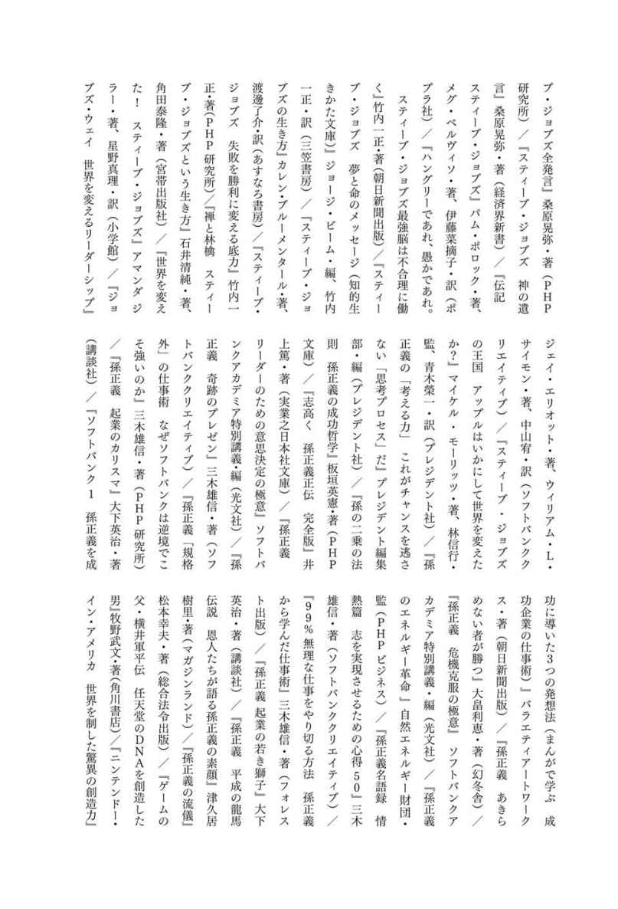

| ひらめきスイッチ大全 | |
| サンクチュアリ出版 | |
| (2017) | |
本作品の全部または一部を無断で複製、転載、配信、送信したり、ホームページ上に転載することを禁止します。また、本作品の内容を無断で改変、改ざん等を行うことも禁止します。
本作品購入時にご承諾いただいた規約により、有償・無償にかかわらず本作品を第三者に譲渡することはできません。
本作品を示すサムネイルなどのイメージ画像は、再ダウンロード時に予告なく変更される場合があります。
本作品は縦書きでレイアウトされています。
また、ご覧になるリーディングシステムにより、表示の差が認められることがあります。
本文中に「＊」が付されている箇所には注釈があります。その箇所を選択すると、該当する注釈が表示されます。
はじめに
アイデアを生み出すためには
１ 情報や知識をインプットすること
２ いつもと違う視点で物事を見ること
３ 考え抜いたあとに、気をゆるめること
これが王道です。
でも生み出せない。生み出したい。
そんなときは、偉大な発明をした、作品を残した、商品を開発した、
先人たちの〝発想の型〟を参考にしてもいいかもしれません。
アインシュタインは、「対象になりきること」で相対性理論を導き出したと言われています。
スティーブ・ジョブズは、「自分が一番ほしいものだけ」をつくって、ＰＣの世界を変えてしまいました。
任天堂は、「すでにある技術（枯れた技術）を使い回し」て、子どもだけでなく家族全員に愛される斬新なゲーム機を生み出しました。
ダイソンは、「あって当たり前のもの（羽根）をなくし」、扇風機の常識を変えました。
いつもアイデアに満ちている人は、そんな〝発想の型〟をいくつも、いくつも持っています。
だから課題と出会ったときに、考え込まず、ぽんぽん出すことができるのです。
アイデアは偶然の産物ではありません。
アイデアを生むにはきっかけが必要です。
古いものを手放すと、新しいものが入ってきます。
あなたが長年使い古した〝発想の型〟は
もう手放すときがきているのかもしれません。
新しい〝発想の型〟と出会ったとき
身のまわりにあるあらゆるものが
アイデアのタネだったことに気づくでしょう。
本書で紹介している発想法はすぐに実践できるように、簡略化してご紹介しています。
詳しい方法が知りたい方は、参考文献をご参照ください。
ＳＷＩＴＣＨ００１
すでに使わなくなったものを別の使い方ができないか、考えてみる
～枯れた技術の水平思考～
もう誰も見向きもしなくなったもの。すでに忘れかけていたもの。
そんなものでも、たまにじっくり観察してみることで、思わぬ画期的な使い道が見つかることがあります。
任天堂で「光線銃ＳＰ」や「ゲーム＆ウォッチ」などのヒット商品を手がけた横井軍平さんは、「枯れた技術の水平思考」という独自の哲学を持っていました。
それは、新しい技術開発に莫大な時間や資金を投入するよりも、すでにある技術（枯れた技術）から、本来の目的とは違う使い道を探したほうが、斬新な商品を生み出しやすい、という考え方です。
「光線銃ＳＰ（光を使った射撃玩具）」
......太陽電池を電池ではなくセンサーとして、豆電球を照明ではなく弾として再利用
その哲学は今なお任天堂に息づいています。
「Ｗｉｉ」
......映像を撮影するためのカメラ部品を、位置情報を把握するセンサーとして再利用
「ニンテンドーＤＳ」
......携帯情報端末向けに使われていたタッチパネル式のディスプレイをゲームで再利用
「本来、娯楽って枯れた技術を上手に使って人が驚けばいいわけです。
別に最先端かどうかが問題ではなくて、人が驚くかどうかが問題なの
だから」
岩田聡（任天堂 代表取締役社長）
出典 参考文献「任天堂 驚きを生む方程式」／井上理／日本経済新聞出版社
ＳＷＩＴＣＨ００２
なにか「なくせるものはないか？」考えてみる
ひとつの物事に取り組んでいたり、人とアイデアを出し合ったりしていると、「あれもしたい」「これもほしい」といった思考になっていってしまうものです。
ですが、あれこれアイデアを盛り込んでいると、一体なにが「一番の魅力」だったのか、気づかないうちにぼやけてしまうことがあります。
「なにがあれば十分か？」
もしその方向で考えが行き詰まったら、「なにかなくせるものはないか？」と、引き算の視点に切り替えてみるのはいかがでしょうか。
掃除機で有名なダイソンは、「掃除が面倒」「子どもが手を入れたら危ない」という不満に注目して、いっそ羽根をなくすことはできないだろうか？ という考えに至りました。
そこから生まれたのが〝羽根のない扇風機〟で話題になった「AirMultiplier（エアマルチプライアー）」です。
扇風機には羽根があるもの。
ダイソンは、何十年も続いていたそんな常識を、「なくせるかも？」という発想ひとつで、壊してしまいました。
「必要なものを考えるのは重要じゃない。
必要じゃないものをどれだけ考えられるかだ」
スティーブ・ジョブズ
出典「スティーブ・ジョブズだったら、こうするね カリスマリーダーの問題解決力」
／桑原晃弥／あさ出版
参考文献「トップ１％の人だけが実践している思考の法則」／永田豊志／かんき出版
ＳＷＩＴＣＨ００３
隠したほうがいいものはないか探してみる
情報はたくさんあったほうがいい。
それをアピールしたほうがいい。
ついつい、私たちはそのように考えてしまうものですが、本当にそうなのでしょうか？
もしかしたらそれは、ものを考える側の、ものをつくる側の勘違いなのかもしれません。
あえて余計な情報を与えないほうが楽しめる、そんなことも意外に多いですし、人は隠されると逆に興味を抱いたりするものです。
「見せるとどう思われるか？」「隠すとどう思われるか？」
増やすこと、見せることに意識が向いているときは、こう自分に問いかける機会をつくってみてはいかがでしょうか。
それによって活きてくるアイデアもあるのだと、気がつくことがあるかもしれません。
ある書店でのこと。
そこでは、文庫本のカバーを隠すように「本の書き出しの文章」を大きく印刷したカバーを付け、著者もタイトルも見せないことで、お客の興味を引いて売上を伸ばしました。
あの著者は嫌い、難しそうなタイトルという先入観をカバーで隠して消したことで、お客を楽しませたのです。
参考文献「スウェーデン式 アイデア・ブック２」／フレドリック・ヘレーン（著）、
テオ・ヘレーン（著）、中妻美奈子（監訳）、フレムリング和美（訳）／ダイヤモンド社
ＳＷＩＴＣＨ００４
見えなかったものを見えるようにできないか
人は、五感の中でもとくに視覚に頼っています。
自分の目で確かめられる。
それだけで納得したり、安心できるものです。
これは、普通だったら隠すべきだろう。目に見えないところにあるのが当たり前だ。
そんな思い込みを取り払ってみましょう。
対象の新たな魅力に出会えることがあるかもしれません。
大ヒットしたダイソンの掃除機は、それまでどの掃除機も隠していたものを見せることにしました。
それは吸い取ったゴミです。
ゴミをあえて見せることで、「掃除することの楽しさ」や「部屋をきれいにしたという達成感」を与えようとしたのです。
「ゴミ」＝「汚いもの」＝「隠すべきもの」という思い込みを捨て、それを見えるようにする。
それだけの視点の切り替えでも、人を惹き付けるようなシンボルをつくることができるのです。
参考文献「小さいことばを歌う場所」／糸井重里／東京糸井重里事務所
ＳＷＩＴＣＨ００５
そもそも形を変えることはできないか
形は大事。
それを変えるだけで印象や機能はずいぶん違ったものになるから。
いま目の前にある課題に対して、「形を変えたらどうなるか？」と、問いかけてみてください。
思いもしなかった結末に行き着くかもしれません。
電子マネーの「Suica（スイカ）」「PASMO（パスモ）」を普及させようというとき、ある問題が浮上しました。
電子マネー対応の改札機は、ピッとかざしたほんのわずかな間に複雑な運賃計算をしているのですが、路線が入り組んでいる駅ではとくに計算が難しく、時間がかかってしまうんだそうです。
処理に時間がかかっては、駅が混雑して大変です。
「処理時間をもっと短くできないか？」「改札機の台数を増やしたらどうだろう？」
いろいろな意見が出ましたが、どれも根本的な解決にはなりませんでした。
そんななか出されたひとつのアイデアがこれ。
「改札機を長くする」
改札機を長くすれば、乗客が改札機を通過する時間が長くなる。
それで処理時間を確保できると考えたのです。
今、スムーズに改札を通ることができるのも、「形を変える」という柔軟な発想があってこそというわけです。
参考文献「バカのアイデアだけが世界を変える！」／木村尚義／宝島社
ＳＷＩＴＣＨ００６
極端に、小さくしてみる大きくしてみる
モノの大きさを変える。
それも、まわりの人が信じられないと思うくらいに。
思い切って常識の枠を取り払ってみることで、もしかしたら意外な使い方、隠れた人の欲求に応えることができるかもしれません。
三菱鉛筆の「ユニボール シグノ ビット」というボールペンをご存知でしょうか。
ペン先が０・18㎜、書いた文字の太さが０・13㎜の、〝どんな小さな文字でもつぶれずに書ける〟ペンです。
当初は社内にも「そこまで細いペンが必要なのか」といった声もあったそうです。
ですが、日本人は漢字を書くため、どうしても書き文字が細かくなりやすく、ペン先の細いものが求められる傾向にありました。
さらに、ビジネスマンが文字を書く機会といったら、書類への書き込みがほとんど。そうすると、印刷された部分以外の余白に文字を書くには細いペンが適している。
女子中高生はというと、手帳や日記帳などに細かい文字を書き込みたがり、「細いほうが字がかわいく見える」という声もたくさんあったといいます。
だからこそ、三菱鉛筆は、〝どこよりも細いペン〟に振り切りました。
そのインパクトも後押しになったのか、やや高めの価格設定ながらも、異例の大ヒットを記録しました。
参考文献「ヒットの法則」／奥井真紀子（著）、木全晃（著）／日本経済新聞社
ＳＷＩＴＣＨ００７
そもそも機能を変えることはできないか
「これは○○という働きをするからこうなる」「あれは△△という働きをするからこうなる」
問題の解決策を考えるのであれば、論理的に事実を整理し、もっとも有効な方法を絞り込んでいくというのが常套手段。
ですが、それでは良い解決策が導けないことがあります。
そんなときは、これまでの思考を逆戻りして、「これは○○という働きをするものだけど、そもそも変えることはできないか？」と、考えてみてもいいかもしれません。
東京スカイツリーを支えるために、ある特殊なネジが使われていることをご存知でしょうか。
それは、「絶対にゆるんではいけないネジ」。
この指令を受けた会社・ハードロック工業は、悩んだ結果、こう考えました。
「ゆるんでいけないならば、左回りは必要ない」
通常のネジは、右に回せば締まり、左に回せばゆるむもの。
でも、ゆるめる必要がないのだから、一方向にすればいいと考えたのです。
思い込みを捨てることで生まれた画期的なネジは、いま東京の新たなシンボルを支えています。
参考文献「バカのアイデアだけが世界を変える！」／木村尚義／宝島社
ＳＷＩＴＣＨ００８
素材を変えてみたらどうなるか考えてみる
「こうあるべきだ」「これが当たり前だ」
こんな固定観念に縛られてしまうこと。
それは、後々画期的と言われるかもしれないアイデアのタネを、みすみす見過ごしてしまうことに等しい、と言えるかもしれません。
当時、トイレ市場といえば、陶器メーカーのＴＯＴＯとＩＮＡＸが９割を占めていました。
そんな中、新たな活路を模索していたパナソニック電工が注目したのは、〝トイレといえば陶器〟という常識。
もともと消費者がトイレに求めることは防汚性能。いつも清潔であること、掃除がしやすいことが肝心でした。
つまり、陶器でなければならない理由はなかったのです。
そして、それよりも汚れがつきにくく、落としやすいアクリル樹脂系の新素材で勝負に出ることに決めたのです。
それがきっかけとなって、３カ月間はブラシ掃除が不要のトイレ「アラウーノ」が誕生しました。
結果は、動きの遅いトイレ市場にあって、発売直後に１年後の目標であった月産３０００台を大きく上回る大ヒットとなりました。
「素材を変えたらどうなるか？」
常識を振り回されないためにも、ときには自問自答してみてはいかがでしょうか。
こんなことでも、意外な盲点に気がつくことがあるかもしれません。
参考文献「ヒットの法則２」／奥井真紀子（著）、木全晃（著）／日本経済新聞社
ＳＷＩＴＣＨ００９
１点だけ極端にアピールしてみる
あれも売り。これも売り。
バランス良くアピールしようとすればするほど、ありきたりな発想しかできなくなるものです。
多少アンバランスでもいいから、ほかを捨ててでもいいから、どこか１点を、ちょっと極端なくらい強調できないものでしょうか。
それだけでも印象はずいぶん変わるものです。
日本では数多くのミネラルウォーターが売り出されています。
次から次へと新しいものが出てくるため、「水のおいしさ」「水源地」「健康にもたらす効果」などにこだわるだけでは、なかなか他の商品と差別化できません。
日本コカ・コーラは、一点集中でアピールすることに決めました。
それはエコロジー。
握ると音を立ててクシャクシャに潰れてしまうペットボトル。
飲むことよりも、飲んだ後の地球のことを考えた水。
そんなコンセプトがひと目でわかるように工夫された「い・ろ・は・す」は、ミネラル・ウォーター市場では後発ブランドにもかかわらず、わずか３年半で販売数20億本のヒット商品となりました。
参考文献「東洋経済オンライン ２０１３年２月７日」http://toyokeizai.net/articles/-/12811?page=5
ＳＷＩＴＣＨ０１０
一石二鳥を考える
たいてい、私たちはいくつもの課題（テーマ）を抱えていて、ひっきりなしにそれをこなしていかなくてはならないもの。
ときには、ある課題を解決したら、違う課題が浮かび上がってきたというやっかいな事態になったりもします。
「アイデアというのは
複数の課題を一気に解決するものである」
出典「ほぼ日刊イトイ新聞」http://www.1101.com/iwata/2007-08-31.html
こう任天堂の宮本茂さんは語り、そんなアイデアが「ないか、ないか」といつも考えているといいます。
私たちもそれを見習って、ひとつのアイデアが浮かんだときに、こう自分に問いかけてみてはどうでしょう。
「ほかの課題も一緒に解決することはできないか？」
こんな一石二鳥のアイデアを考えた会社といえば、健康機器メーカーのタニタが良い例でしょう。
タニタは健康機器メーカーらしく、社員食堂のメニューは、社員の健康への配慮が徹底されています。
これによって「福利厚生」を充実させるという、会社にとって欠かせない使命を達成しています。
同時に、このことをベストセラー「体脂肪計タニタの社員食堂」の出版を通して世の中へ発信し、会社の知名度やイメージを劇的に高めることに成功したのです。
参考文献「僕たちはアイデアひとつで未来を変えていく。」／島田始／アスコム
ＳＷＩＴＣＨ０１１
最先端の技術に目を向けてみる
最先端の技術にはどんなものがあるのか。
それは、どうやって作られ、どんな特徴があるのか。
そんなことを、たまには考えてみてもいいかもしれません。
革新的な商品やサービスは、創造的な発想によって誕生する場合もありますが、最先端の技術を応用して生まれてくることも同じくらい多いのです。
今やどの家庭にもある電子レンジは、第二次世界大戦中にドイツ軍によってレーダー基地を壊滅されたイギリス軍が、磁電管（マグネトロン）を用いたレーダーを開発したことがきっかけとなり、誕生しました。
栄養補助食品「カロリーメイト」は、医療現場の患者向けに開発した濃厚流動食「ハイネックス―Ｒ」を応用して生まれています。
数年、十数年の年月をかけて実用化された技術を、ひとつの用途だけにとどめておくのはもったいないと思いませんか？
いま、どの分野で、どのような技術が生まれているのかを知り、自分がかかわる分野に応用することはできないか？という視点で技術を見つめてみてはいかがでしょうか。
同じ分野の中だけで考えるよりもずっと世界が広がり、革新的なアイデアに結びつけることができるかもしれません。
参考文献「売れた！国産30選 実録ヒット商品誕生の裏側 現代編」／ヒット商品研究所（編）／ナナ・コーポレート・コミュニケーション、
「世界のヒット商品はどんな『ひらめき』から生まれたのか？」／スティーブンD.ストラウス（著）、飛田妙子（訳）、萩岡史子（訳）／主婦の友社
ＳＷＩＴＣＨ０１２
あるモノの働きをあるモノに置き換える
問題の解決策を考えるとき。新商品の開発を考えるとき。
つい同業界の会社や似たような業界など、身近なところに答えを求めてしまうものです。
ですが、世界が似ているばっかりに、アイデアまで似たり寄ったりのものになりかねません。
ときには、まったく違う世界に目を向けてみる。
そのほうが、意外な発見ができたりするものです。
当時、白石義明さんが経営していた立ち食い寿司屋は、安い価格設定で大繁盛していましたが、店員がどんどん辞めてしまうという悩みの種を持っていました。
「店員を使わずにどうにかやれないものか」と考えていた白石さんでしたが、答えを与えてくれたのは、ほかの寿司屋でも飲食業界でもなく、なんとビール工場。
組合の行事で参加した工場見学で、ビール瓶を運搬するベルトコンベアが目に留まり、ひらめいたのです。
これがきっかけとなって、日本初の回転寿司「廻る元禄寿司」１号店がオープンしました。
「ビール瓶を運搬する」ためのシステムを、「顧客に寿司を提供する」という寿司屋のシステムに置き換える。
つねに物事の本質を理解し、問題を構造的にとらえられれば、こんな風に遠くの世界からだってヒントを得ることができるのです。
参考文献「廻る元禄寿司公式ホームページ」http://www.mawaru-genrokuzusi.co.jp/rekishi.htm
ＳＷＩＴＣＨ０１３
動物からヒントをもらえないか考えてみる
～バイオニクス法～
動物、昆虫、植物。
ときには、人間とはまったく違った特徴を持っている生き物に発想のヒントを求めてみてもいいかもしれません。
色は？ 形は？ 仕組みは？ 行動は？ 子どもの頃のように観察してみることで、何かおもしろい発見があるかもしれません。
蚊
......刺された瞬間は、痛くもかゆくもない。そこにヒントを得て、「痛くない注射針」が開発された
ゴボウの実
......服にくっついてとれない理由、それは毛が無数の鉤でできているため。それをきっかけにして、マジックテープがつくられた
カタツムリ
......カタツムリの殻がいつもキレイなのは、薄い水の膜が油汚れをはじいているためだとわかった。INAXはこれをヒントに、水だけで汚れが落とせるビルの外壁やキッチンシンクなどをつくった
生物研究の専門家のように考える必要はありません。
好きな動物、今日見かけた昆虫、植物を思い出してみてください。
気になった特徴、疑問に思った行動から、なにか参考にできそうなものがないか考えるだけでいいのです。
それが斬新なアイデアのきっかけになることも十分考えられます。
参考文献「発想の道具箱」／中島孝志／青春出版社、「新編 創造力事典」／高橋誠（著）
／日科技連出版社
ＳＷＩＴＣＨ０１４
自然の法則にヒントを求める
アイデアのヒントやネタを探すとき、その「手軽さ」「わかりやすさ」ゆえにインターネットや雑誌、テレビなどから情報を集めようとしがちです。
もちろん、それが悪いということはありません。
ただ、それらは自分以外の誰かにとっても手に入れやすく、わかりやすい情報であることは事実です。
ときには、そんなこととは別次元にある〝自然〟に目を向けてみてもいいかもしれません。
過去を遡ってみれば、画期的なアイデアを生み出した先人たちもそうやって情報を得ていたわけですし。
建設時間が短い上に耐久性も高く、それでいてコストもかからないため、富士山頂のレーダーの覆いにも使用されたジオデシック・ドーム。
これを発明したバックミンスター・フラーは、自然界の法則を研究し、それを利用した製品を生み出したことで広く知られています。
〝世界で最も頑丈な建造物〟とされているジオデシック・ドームは、無数の三角形が組み合わさってドームを形づくっています。
つまり、私たちが見慣れている構造物に必ずある〝直角〟がありません。 フラーは自然を見つめる中で、慣習にとらわれることなく、「建物は四角形である必要はない」という答えを導き出していたのです。
自然から得る情報は、メディアを通した情報にはない不変性があります。
そこから生まれたアイデアは、流行やブームとは距離を置き、長く人々に愛されるものになるはずです。
参考文献「世界のヒット商品はどんな『ひらめき』から生まれたのか？」／
スティーブンＤ・ストラウス（著）、飛田妙子（訳）、萩岡史子（訳）／主婦の友社
ＳＷＩＴＣＨ０１５
真逆のものを組み合わせる
どんなアイデアが世の中を席巻するのか。
その答えを出すことは簡単ではありませんが、ひとつのパターンとしてあるのは、既存のものの新しい組み合わせ方を見出したとき、と言えるかもしれません。
とくに真逆のものが組み合わさり、そのギャップが人に認められたとき、与えるインパクトはより大きくなるようです。
一流シェフがつくるイタリアンを安価で食べられることで人気の「俺のイタリアン」。
この店に人々が惹きつけられるのは、「おいしさ」と「安さ」の組み合わせに加え、「良質な料理」を「立ち飲み」で楽しむという、ギャップのあるスタイルにあります。
このように、いままでにない正反対の組み合わせが、世の中にインパクトを与えた例は数多くあります。
シャネルのデザイナーであるカール・ラガーフェルドが、「H&M」というファストファッション店でデザインを手がけたことがあります。
これも、「シャネル」と「チェーン店」という意外な組み合わせが社会から受け入れられたからこそ話題を呼んだのではないでしょうか。
参考文献「嶋浩一郎のアイデアのつくり方」／嶋浩一郎／ディスカヴァー・トゥエンティワン
ＳＷＩＴＣＨ０１６
ときには裏側を見つめてみる
あるものに注目し、「どうしたら良くなるだろうか？」「どんな工夫ができるだろうか？」と詰めて考えていく。
すると、その反動からか、注目していない部分がおそまつになってしまうことがあります。
「ものの裏側を見ようとする」
ものを考える過程で、そんな〝見えない部分〟を見ようとするひと手間をかけてみてはいかがでしょうか。
意外に大切なこと、おもしろいことが見つかって、そこから新たなアイデアが生まれることだってあるかもしれません。
ワコールの「フロントホックブラ」は、もともと商品として誕生したわけではありません。
ガードルの宣伝用ポスターの撮影時、後ろ姿をすっきりさせるため、１枚だけつくられたのです。
ところがポスターが出来上がると、この「後ろ姿の美しいブラ」を求める声が殺到。発売に至りました。
後ろのホックを留めるのが苦手という声にも応え、「フロントホックブラ」は、年間目標40万枚のところ２００万枚を売り上げるヒット商品となったのです。
「女には、前と後ろがあるのです」
これは発売当時のキャッチコピー。
でも、あらゆることに通用する発想だと思いませんか？
参考文献「アイデアは才能では生まれない」／美崎栄一郎／日本経済新聞出版社
ＳＷＩＴＣＨ０１７
想定している時間を変えてみる
すでに成熟したと思われるジャンルでアイデアを考えるとき。
「価格」や「ボリューム感」で差別化するといった思考についついなりがちなものです。
ですが、その結果待っているのは限界のない体力勝負。それなのに得られる成果は限られてしまうといったことになりかねません。
そんなときは、「時間」という切り口で発想するのもひとつの手。
商品やサービスを提供する「時間」や「時間帯」をキーワードとして、アイデアを考えてみるのです。
たとえば缶コーヒー。
飲料メーカー各社が主力商品として激しくシェアを争うこのマーケットでは、原料である豆や水、そして製法にこだわることで、他社との差別化にしのぎを削っています。
そんな中、「ワンダ モーニングショット」は、原料や製法にこだわるのはもちろん、意外な点に注目しました。
それが「時間」「時間帯」。
アサヒ飲料が商品開発にあたって行った市場調査によると、ビジネスマンの８割が朝方生活を希望していることがわかりました。そして朝の必需品が「ネット」「メール」「缶コーヒー」であることも。
缶コーヒーにとって、「朝」が隠れた大市場だったわけです。
まだライバルが注目していなかった、「朝に飲む缶コーヒー」というコンセプトを打ち出し、「ワンダ モーニングショット」はオンリーワンの存在となり、大ヒット商品となりました。
参考文献「メガヒットの『からくり』 実例で読み解く発想法とテクニック」／安部徹也／角川新書
ＳＷＩＴＣＨ０１８
期間や数に限りを設けてみる
独りよがりなアイデアを出さないためにも、「受け取った相手はどう感じるか？」と検討することは大切です。
ただ、それはあくまで推測。
実際に相手がどう感じるか、どう行動するかは、なかなかわからないものです。
もし、より結果にこだわりたいのであれば、覚えておいてほしいキーワードがあります。
それは、〝限定〟。
人は「数の少ないものは価値が高い」と思い、「○○の期間だけ」や「××個まで」といった限定条件に反応する傾向があります。
これを心理学の世界では「希少性の法則」というのですが、これを活用してみるのです。
マクドナルドも、同じことをしています。
その代表格は期間限定商品「月見バーガー」。
毎年秋がやってくると、どうしようもなく食べたくなってしまう人も多いのではないでしょうか。
ＳＷＩＴＣＨ０１９
ある環境だけに注目したらどんなことが起こるだろうか
「すでにあるものを、ある環境だけに特化させたらどうなるか？」
ときには、こんな切り口でものを考えてみることで、良いアイデアが生まれることもあります。
こんなことを言ってしまうと、スタンダードを崩してしまったら不便になるのでは？ と思う人もいるかもしれません。
ですが、それによって一部の圧倒的な支持を得られるかもしれませんし、案外隠れたニーズはたくさんあるものです。
アキレスの子供用運動靴「瞬足」が生まれたきっかけは、小学校の運動会。リレーでコーナリングを失敗して転んでしまい、悔し涙を流す子どもの姿でした。
小学校のトラックは小さいから、どうしてもコーナーを曲がるときの遠心力に負けて転んでしまう子どもが多かったのです。
それなら、コーナーでしっかり踏んばれるよう両足の左側にスパイクをつけたらいいと考え、靴底のソールが左右非対称という、それまでの常識を覆した運動靴が生まれたのです。
運動会で勝つという子どもの夢にガッチリはまり、大ヒット。
今や定番の運動靴になっています。
「あるシチュエーションだけを見据える」
それができたからこそ、これだけ子どもを魅了する運動靴が生まれたのだと思いませんか？
参考文献「ヒット商品研究所へようこそ！」／こうやまのりお／講談社
ＳＷＩＴＣＨ０２０
対象に手を動かしてもらうとどうなるか考えてみる
メーカーが商品をつくり、出来上がった商品を消費者が買う。
これが商売の通常の流れ。
ですが、そんな常識をいったん脇に置き、「対象に未完成のまま渡してみたら？」「対象に手を動かしてもらったら？」と考えてみてください。
もしかしたら思わぬ効果が得られるかもしれません。
あるとき、スウェーデンの大手家具メーカー・ＩＫＥＡの従業員だったギリス・ラングレンは、店で買ったテーブルが大きすぎて車に入らなかったため、分解して積み込み、家で自分で組み立て直したそうです。
「もともと分解されていたら、楽に持ち帰れるのに」
そう考えたことがきっかけとなり、自社の家具を分解して売ることを上司に提案。それが、ＩＫＥＡの特徴のひとつである、家具を部品の状態で販売する「フラットパック」につながりました。
一見、不完全なサービスだと思うかもしれません。
でもそれは、「これはこういうもだから」という常識に縛られているから、とも考えられます。
利便性を与える方法が、驚きや喜びをもたらす方法が、対象に手を動かしてもらうことだった。
それなら、意味のない常識など捨て去ってしまったほうがいい。
そう思いませんか？
参考文献「アイデアが生まれる時 世界を変えた48のシンプルな発想」／Ｍ＆Ｃサーチ（著）、
高橋璃子（訳）／ディスカヴァー・トゥエンティワン
ＳＷＩＴＣＨ０２１
人の手足をもっと自由にできないか
いかに人の手間を減らすか。
いつの時代も考えられてきた重要な課題（テーマ）です。
だからこそ、あらゆるものが軽量化・小型化への道を進み、荷物が手のひらサイズにおさまるようになったのです。
電話、音楽、カメラ、地図、本といった機能をスマートフォンやタブレット端末ひとつで持ち運べる現代がやってきたのもそのためでしょう。
「人の手足を自由にする方法」
あなたも探してみてはいかがでしょうか。
考え尽くされた分野だなんて言わないでください。
そんなことは決してなく、人と違ったものの見方さえできれば、まだまだ画期的なアイデアが転がっているはずです。
手荷物の小型化の先駆けは、クレジットカードかもしれません。
使用され始めたのは１９５８年、バンク・オブ・アメリカ（のちのＶＩＳＡ）から発行された「バンクアメリカード」が最初です。
プラスチックのカードを１枚持っているだけで、どこでも買い物ができるこのシステムは、当時としてはまさに画期的でした。
現金をおろす手間も省け、大きな買い物をするときも重い大金を持ち運ばなくて済むのですから。
そして、現代ではこのクレジットカードさえも、携帯電話の機能として組み込むことが可能です。
この課題には終わりがないのかもしれません。
次はどんな手間がなくなるのか、とても楽しみです。
参考文献「アイデアが生まれる時 世界を変えた48のシンプルな発想」／Ｍ＆Ｃサーチ（著）、
高橋璃子（訳）／ディスカヴァー・トゥエンティワン
ＳＷＩＴＣＨ０２２
無料にしたらなにが起きるか考えてみる
商品に対して代金が発生するのは商売の常識。
だから、それ以上考えることはあまりありませんが、そんな「当たり前」にあえて着目してみてはいかがでしょうか。
たとえば、本来は料金が発生するものを、無料にできないかと考えてみるのです。有料のものを無料にすると、得られるはずの収入がなくなってしまう、これがデメリット。
では、メリットはなにか。
無料であるために利用しやすくなる。人々がそこに集まりやすくなる。 それは、下手な広告よりもずっと宣伝効果が高い、そう考えることもできると思います。
今や地域のＰＲキャラクターとして他の追随を許さない「くまモン」。
２０１１年にゆるキャラグランプリで１位を獲得し、追っかけまでいるという人気ぶりです。くまモンのロゴやキャラクターは、熊本県の許可が下りれば著作権使用料なしで利用することができます。
そのため、くまモンはさまざまな商品に使われ、アッという間に世の中に広がりました。
ある調査では「熊本産のものを探すようになった」「熊本県に旅行するようになった」などの声も聞かれるように、くまモンによって熊本県の認知度が明らかに上がったのです。そして、その経済効果は数百億円に上り、熊本県のＰＲという役目を十二分に果たしています。
いかがでしょうか。無料というと、マイナスのことばかりを考えがちですが、それによってなにが得られるかを考える。
これも立派なアイデア発想であり、ときには大きな効果をもたらすことがあります。
参考文献「日経ビジネスオンライン ２０１２年10月30日」
http://business.nikkeibp.co.jp/article/report/20121026/238634/
ＳＷＩＴＣＨ０２３
ブランド化できないか考えてみる
世の中に商品があふれている時代。
いかにほかと差別化するかが、ヒットの、そして生き残りのキーポイントだと多くの人が考えています。
ですが、単体で突出することは非常に難しい時代でもあります。
そのため、こう考えてみることも、有効な方法なのかもしれません。
「共通点を持つものを集めてブランド化する」
人というのはブランドのイメージに影響されやすいもの。
初めて見たものでも、そのイメージで先入観を抱き、判断します。
もし、同じような商品が並んでいたら、良いイメージのほうを選ぶことでしょう。
コンビニのローソンで発売された「プレミアムロール」は、女性をターゲットにして開発されました。
材料や製法にこだわり、専門店のものにもひけをとらないよう作られたのです。
結果、「プレミアムロール」は口コミから広がり、やがて大ヒット。
各社も競ってスイーツを出しはじめました。
そして、「コンビニスイーツ」というジャンル（＝ブランド）が確立されたのです。
それまでコンビニの客層は、どちらかというとメインは男性で、女性がスイーツを買う場所という感覚はありませんでした。
しかし、コンビニスイーツの存在が、女性層を引きつけ、今や洋菓子会社がライバルとするのはコンビニスイーツなのです。
参考文献「日経ビジネスオンライン ２０１０年７月12日」http://business.nikkeibp.co.jp/article/topics/20100708/215326/、
「日経トレンディネット ２０１０年11月15日」http://trendy.nikkeibp.co.jp/article/column/20101112/1033616/
ＳＷＩＴＣＨ０２４
憧れを身近なものにすることはできないか
優れたアイデアを商品化。でも、ライバル会社も似たような商品をつくり、最後は価格競争へ。
多くの業界が苦しんでいることだと思いますが、価格や条件に振り回されないものを生み出すにはどうすればいいのでしょう。
そのヒントは、過去のヒット商品に隠れているかもしれません。
大卒の初任給が数千円だった時代、レモンひとつがなんと１００円もしたそうです。
そんな高級品であったレモンのフレーバーを身近に楽しめるようにと考えられたのが、独特の酸味で料理を引き立てる「ポッカレモン」。
そんなコンセプトが当時の人々に受け、「ポッカレモン」は日本の家庭に広く知られることとなりました。
同時代、子どもにとって憧れのスポーツだった「野球」をモチーフにした「野球盤」が誕生しました。
ボールに見立てた鉄球を盤面で転がし、特定の穴に入ることで、アウトやヒットを判定。対戦形式で野球が楽しめるこのおもちゃは、かなりの高額商品であったにもかかわらず大ヒットを記録しました。
さらに、１９７２年、大人気漫画「巨人の星」の主人公・星飛雄馬が投げた「消える魔球」を再現したことで、野球盤人気に拍車がかかりました。
この２つの商品は、当時の人々の憧れを形にしました。
いまの時代の憧れは一体どんなものでしょう。
思いついたその先に、アイデアのタネが転がっているかもしれません。
参考文献「ロングセラー商品の舞台裏」／成美堂出版
ＳＷＩＴＣＨ０２５
どうすれば安心を与えることができるのか
「安心」「安全」
人は、危険を避けたいと本能的に思っていますから、そこには強い欲求があると考えて間違いはないでしょう。
そして、それを実現させるアイデアは、人々の高い支持を得る可能性があります。
発明家であり企業家でもあったエリシャ・オーチス。
彼は「安全」をとことん追求し続けることで、建築物の可能性を切り開いた人物です。
１８５０年代のこと。それまであったエレベーターは、重い建築材料や作業員を運ぶと落下の危険性があり、高い建築物を建設することができませんでした。
そこでオーチスは、歯形方式の落下防止装置をつけたエレベーターを開発。仮に、エレベーターを吊るすケーブルが切れてしまっても、落下することなくその場に固定される仕組みをつくったのです。
この開発を皮切りにして、オフィスビルやホテルの高層化が続々とスタートしました。
「安心」「安全」を実現させるアイデアは、こうもモノの進化をうながすのです。
まずは身のまわりに「危険」がないか目を向けてみましょう。
そして、その危険から身を守る手段、回避する方法を見出すことができれば、それは人々にとって〝なくてはならないもの〟になることでしょう。
参考文献「アイデアが生まれる時 世界を変えた48のシンプルな発想」／Ｍ＆Ｃサーチ（著）、
高橋璃子（訳）／ディスカヴァー・トゥエンティワン
ＳＷＩＴＣＨ０２６
守り切れていないプライバシーはないか
誰にとっても気になる「プライバシー」。
悪用されることはもちろん、知られることさえも嫌なものではないでしょうか。
それをどう守るか。
もし提案することができたのなら、それはとても強いニーズに応えたアイデアだと言えます。
文具メーカーのプラスは、個人情報に関する人々の危機意識に注目し、どうすれば簡単に、必要な部分だけを消すことができるのか考えました。
そんな発想から生まれたのが「ケシポン」です。
ダイレクトメールや請求書に印字された住所、名前といった個人情報を、上からスタンプするだけで、文字が読み取れなくなります。
発売後、ケシポンに反応を示したのは、ストーカー事件などが続発する時代にあって個人情報に敏感にならざるを得なかった女性たちでした。
発売直後から品切れ店が続出し、初年度販売目標の60万個を上回る売り上げとなりました。
人は誰でもプライバシーを守りたいと思うもの。
でも、守り切れていないものもあります。
自分の生活、まわりにいる人たちの生活を思い描きながら探してみてください。
見つけられれば、それはもう、人にとって必要不可欠なアイデアを手に入れたも同然です。
参考文献「ヒットの法則２」／奥井真紀子（著）、木全晃（著）／日経ビジネス文庫
ＳＷＩＴＣＨ０２７
面倒くさいことをラクにできないか考えてみる
疲れてしまうこと。手間がかかること。
そんな、人が大嫌いなものにあえて注目してみることで、世の中に受け入れられるアイデアを生み出すことができるかもしれません。
人は元来、面倒くさがり屋。手間を解消してくれる手段を、心の底では求めているものなのです。
あるとき、主婦・中澤信子さんは太りすぎに悩んでいました。
ダイエットをしなければと思うのですが、それがどうにも面倒くさい。それならば、「運動しないでダイエットができる方法」はないかと考え、履いているだけで痩せられるスリッパを発明してしまいました。
世の中にはそんな人がたくさんいて、そのスリッパは約40億円を売り上げました。
クリスピー・クリーム・ドーナツが行ったあるプロモーション活動、これはこの発想の応用といえるでしょう。
開店当初、クリスピーは、12個入りのドーナツをサンプルとして配っていたことをご存知でしょうか。
サンプルにしては太っ腹なサービスです。
しかし、サンプルを受け取った人が周囲にドーナツを配った結果、またたく間にクリスピーの認知度は急上昇。多くの人が大挙して列をなした結果、「並ばないと買えない」というイメージまで定着し、ますます注目を集めるようになったのです。
ドーナツを12個配るだけで（ラクをして）、人に店の宣伝をしてもらい、そのうえブランディングまで行ってしまったのです。
参考文献「あなたもできる！ 発明で儲けろ!!」／平井工／ＫＫロングセラーズ
「バカのアイデアだけが世界を変える！」／木村尚義／宝島社
ＳＷＩＴＣＨ０２８
まわりにある「もったいない」を活かすことができないか考えてみる
いつもだったら捨てられてしまうもの。捨ててしまうもの。
そのようなものを活用することができないかと、ときには考えてみてもいいかもしれません。
ムダに思われていたものの中に価値を見出すこと、それも立派なアイデアです。
「もったいない」
それは、ケニア出身の環境保護活動家・ワンガリ・マータイさんのスピーチによって、世界中に知られることとなった日本人の精神です。
たとえば、形が整っていない野菜や果物、賞味期限が迫っている食品などを安価な値段で提供する「ワケあり商品」。
これらはまさに、もったいない精神が生み出したアイデア。
本来、流通させることができない商品を抱えることはとても不利なことです。
しかしそんな状況を、「もったいない」という発想によって一発逆転させてしまったのです。
「もったいない」精神でもってまわりを見渡してみましょう。
ただのコップであっても、正面から見るのと真上から見るのとではまったく姿が異なるように、目の前にあるもったいないモノやコトを別の視点で見てみると、なにか新しい価値が見えるかもしれません。
参考文献「MOTTAINAI公式ホームページ」http://mottainai.info/maathai/
ＳＷＩＴＣＨ０２９
こちらの困ったをあちらのワクワクに変える
問題の解決策を考えるとき、どうしても〝こちら目線〟でばかりモノを考えてしまいがち。
ですが、ときには〝あちら目線〟に立ち、「どうすれば相手は○○したくなるのか？」と、考えてみてはいかがでしょうか。
それだけで、意外とすんなり答えが出たりするものです。
ホテル業界の例を見てみましょう。
ホテルは、チェックアウト時間とチェックイン時間の間に、宿泊客を迎える準備をします。
しかし最近は、「朝はゆっくりしたい」という宿泊客が多くなり、退室時間は遅くなるばかり。
そんな困った問題を「神戸北野ホテル」は、世界一と称する朝食をスタートさせることで見事に解決してしまいました。
宿泊客は朝食を楽しみにして起床
↓
朝食をとる
↓
退室時間も早まる
つまり、「退室時間が遅い」という問題を、当事者であるホテル目線ではなく、「どんなサービスがあれば朝起きることが楽しくなるか？」というユーザー目線で考えたのです。
参考文献「僕たちはアイデアひとつで未来を変えていく。」／島田始／アスコム
ＳＷＩＴＣＨ０３０
ずっと変わっていないものの中に新しく挑戦できることはないか
慣れ親しんだ場所。いつも使っているもの。
人は、ずっと変化がない物事に新しい可能性を見出すことが苦手です。「これは、こういうものだから」と、自然に考えるべきものの選択肢から外してしまうのです。
ですが、そうした環境にこそチャンスの芽が埋もれています。
なにせ、長い間誰も考えることをしてこなったわけですから。
「なにか挑戦できる余地がないか？」
いま自分がいる環境や、いつも使っているものに問いかけてみてはいかがでしょうか。
当たり前だと思っていたものの中に、意外なアイデアのタネが見つかるかもしれません。
１９７０年代後半、音楽といえば室内の大きなステレオセットで聴くのが当たり前の時代でした。
そんな中、「いつでも、どこでも好きな音楽を聴ける」というコンセプトのもと、音楽を屋外に持ち出した商品があります。
ソニーの名を世界に知らしめたポータブルプレーヤー「ウォークマン」です。
ソニー社内でも、「録音もできない製品なんて売れない」と大反対がありました。
しかし、若者が常に音楽と一緒に生活している様子を見ていた当時の会長・盛田昭夫さんが「首をかけてもいい」と製品化して大ヒットさせたのです。
参考文献「新編 創造力事典」／高橋誠（著）／日科技連出版社
ＳＷＩＴＣＨ０３１
成熟しきった世界に疑いの目を向けてみる
これだけ便利なものや情報があふれていると、「もう新しいアイデアなど生まれないのではないか」という気になってしまいます。
ですが、どの時代も、そんな風に考えられてきたのです。
それでも、画期的なアイデアが生まれてきたのは、世の中の常識に疑いを持ったごく一部の人たちがいたからではないでしょうか。
あえて成熟しきったと思う世界に向けて、「それは本当か？」「なにか考えられることはないか？」と問いかけてみてください。
成熟した世界、それは長い間なにも考えられてこなかった世界とも言い換えられます。
そう考えれば、チャンスはゴロゴロ転がっていそうです。
長い間、芸能界では、「アイドルとは、テレビの歌番組やバラエティに出て人気を得るもの」と考えられてきました。
当然、出演できるアイドルは限られるので、人気になるのはそう簡単なことではありません。
それを逆手にとって、「会いに行けるアイドル」として秋葉原の劇場を「メディア」にし、「ファンが応援して人気を育てる」ようにしたのがＡＫＢ48。
アメリカ特許局局長だったチャールズ・Ｈ・デュエルは、１８９９年、「およそ発明できるものは、すべて発明され尽くしてしまった」と言って物議をかもしましたが、どんなに成熟しきったように見える世界でも、必ず新しいものは生まれるのです。
参考文献「スウェーデン式 アイデア・ブック」／フレドリック・ヘレーン（著）、
中妻美奈子（監訳）、鍋野和美（訳）／ダイヤモンド社
ＳＷＩＴＣＨ０３２
ずっと新しいままにしておくことはできないか
ときが経つにつれ、利用するにつれ、モノは古くなり劣化する。
当たり前のことですが、発想を飛躍させ、こう考えてみるとおもしろいものです。
「新しいものを、新しいままにできないか？」
そんな一見矛盾したテーマを、常識を捨てて考えてみることで、意外な気づき、世の中を驚かせるアイデアを得られるかもしれません。
古くなったナイフの刃をいちいち研がずに済む方法はないか。
あるとき、印刷所に勤めていた岡田良男さんは、紙の裁断で使うナイフやカミソリの刃が、すぐにボロボロになってしまうのをどうにかしたいと、頭を悩ませていました。
そんな中出会ったある光景がひらめきをもたらしました。
靴の修理職人たちがガラスの破片でものを切り、切れ味が悪くなると、それを割ってふたたび切れ味を良くしていたのです。
これに板チョコを割るイメージも合わせ、ナイフの刃が古びたら、折って新しい刃を出すカッターナイフというアイデアに行き着きました。
岡田さんが初代社長となったオルファのカッターナイフは、またたく間に評判となり、今では替え刃のサイズや折れ線の角度が世界標準となっています。
参考文献「ロングセラー商品の舞台裏」／成美堂出版
ＳＷＩＴＣＨ０３３
失敗を帳消しにできないか
起きたことは元に戻せないもの。失敗しても時間は戻せない。
だからこそ、会社でも個人でも失敗しないように必死で予防策を考えるのかもしれません。
ですが、こう発想転換してみたらどうでしょう。
「失敗を帳消しにする方法はないか？」
そんなものがあれば、きっと誰もが求めるはずです。
ミスをなかったことにする道具のひとつに「修正液」があります。
これを発明したのはアメリカの法律事務所に勤める若い秘書でした。
タイプライターを打ち間違えてしまったとき、どうにかきれいに消すことはできないだろうかと考え、意外なところからヒントを得ました。
彼女の趣味は絵を描くことで、ミスをしたら、上から絵の具で塗りつぶしていたのですが、その発想をタイプミスの訂正に用いたのです。
そこから改良が重ねられ、完成した「修正液」は、いまや世界中の人々に使われています。
また、ファンケルのサプリメント「カロリミット」も、ある意味「帳消しにしたい」という気持ちに応えた商品と言えます。
「カロリミット」とは、食事前に飲んでおけば油分や糖分などの吸収が妨げられるというサプリメント。
「ダイエットしたいけど食事制限はイヤだ」「うっかり食べ過ぎてしまったけどどうにかしたい」そんな虫のいい願いを聞いてくれるということで、若い女性を中心に好評を得ています。
参考文献「世界のヒット商品はどんな『ひらめき』から生まれたのか？」／
スティーブンＤ・ストラウス（著）、飛田妙子（訳）、萩岡史子（訳）／主婦の友社、
「ファンケル公式ホームページ」http://www.fancl.co.jp/calo/index.html
ＳＷＩＴＣＨ０３４
当たり前になっているものに新しい価値を加える
すでに定番化しているものにはチャンスがたくさん。
「これは、こういうものだから」と、長い間、誰もが手をつけようとしてこなかったわけですから。
「自分だったらどんな新しい価値を加えられるか？」
ぼんやりと感じていた違和感や不満、願望を整理して考えてみると、なにか良いひらめきがあるかもしれません。
ティッシュといえば、花柄のパッケージが定番。
そんな中、王子ネピアの「鼻セレブ」は動物の鼻の写真が全面に押し出された斬新なパッケージを採用。そのかわいらしさは、消費者の目を引きました。
さらに、何度も鼻をかんでいると、肌が赤く荒れてしまうという不満に着目し、独自の保湿方法によって、しっとりとして、やわらかな「鼻ざわり」を実現しました。
「ティッシュは安いもの」という固定観念にとらわれず、価格は他の３倍近くもありますが、それを上回る価値を兼ね備えた「鼻セレブ」は空前の大ヒットを記録したのです。
参考文献「バカのアイデアだけが世界を変える！」／木村尚義／宝島社
ＳＷＩＴＣＨ０３５
ときには伝統を振り返る
新しいアイデアがほしいとき、あなたはどこに目を向けるでしょうか。
最新の技術？ 斬新なデザイン？ 身のまわりにない外国のもの？
それが、有効な場合もあると思います。
ですが、馴染みのないところから生まれたものだと、ただの物珍しさで終わってしまう。それもよくある事実です。
ときには今までずっとそこにあったもの、伝統的なものにヒントを求めてみてはいかがでしょうか。
温故知新という言葉があるように、古いものにこそ、次の新しいものにつながるヒントが隠されていることもあるのです。
ロッテが「冬でも楽しめる」「全く新しいタイプのアイス」というコンセプトを掲げ、研究開発をスタートさせたとき、目を向けたのは和菓子の饅頭でした。
「餡の代わりに、アイスをなにかで包んだら？」
そんな、ちょっとした遊び心も加わって生まれたのが、「雪見だいふく」です。
冬、こたつでお餅みたいにアイスを食べるという発想は、日本人の心にすっと馴染み、「雪見だいふく」はまたたく間に冬の定番に、そして季節を問わないスタンダードな商品となったのです。
参考文献「売れた！国産30選 実録ヒット商品誕生の裏側 現代編」／ヒット商品研究所（編）／
ナナ・コーポレート・コミュニケーション
ＳＷＩＴＣＨ０３６
古いものを現代風にしてみたらどうなるか
ときには「古き良きもの」に思いをはせてみるのもいいかもしれません。
レコード、黒電話、着物、馬車、寺、大阪万博、明治維新......いろいろ思い浮かびそうです。
それらを現代風にアレンジしてみたら？ 今の人の価値観に合うように、パッケージングし直してあげたら？
古いものをきっかけにして、新鮮な発想が生まれるかもしれません。
たとえば、銭湯の高い天井、色とりどりのタイルを活用して、レトロなカフェをつくる。古い蔵を活用して、どこか懐かしい雰囲気の隠れ家バーというのも考えられます。
小説であれば、以前、太宰治の代表作「人間失格」の表紙を、「DEATH NOTE」で知られる漫画家・小畑健さんの描いたイラストで飾り、話題となりました。
過去の名作に現代のエッセンスを盛り込むことで、これまで「堅苦しそう」と敬遠していた人たちを引き込むことに成功したのです。
参考文献「メガヒットの『からくり』 実例で読み解く発想法とテクニック」／安部徹也／角川新書
ＳＷＩＴＣＨ０３７
常識を逆さまにする
私たちは、社会通念や一般常識などを、自然の法則と同じように「当たり前」のことと考えているものです。
それなら、それを逆さまにしてしまう。
そうやって、固定観念を覆してしまえば、誰も考えもしなかったアイデアに行き着くことができると思いませんか？
辞書は、単語の頭から五十音順で引く。
これは、自然の法則に近いぐらい「当たり前」の概念でしたが、それをひっくり返したのが岩波書店の「逆引き広辞苑」。
「らくさ」「らくざき」「らくざは」「らくざばう」
「さくら」を引くために、「らくさ」にアクセスすると、桜、黄桜、葉桜、姥桜と、さまざまな桜を一度に見渡すことができます。
「すなこ」「すなこいい」「すなこいかつ」
これは「こなす」「言いこなす」「使いこなす」です。
「こなす」を付ける動詞はどういうものがあるだろう、という疑問を解決してくれます。
逆順に並べると類縁関係にある言葉がまとまって一覧できるということでつくられた「逆引き広辞苑」ですが、これがヒットしたのは、なによりも「当たり前」をひっくり返した衝撃によるものが大きかったのではないでしょうか。
参考文献「図説 アイデア入門 言葉、ビジュアル、商品企画を生み出す14法則と99の見本」／狐塚康己／宣伝会議
ＳＷＩＴＣＨ０３８
トップがやろうとしないことやれないことを考える
「敵うわけがない」
「やるだけムダだ」
業界トップのような存在がいると、それだけで戦意喪失してしまい、良いアイデアを考えようとする気力がなくなってしまうものです。
ですが、それは間違いかもしれません。
実は、トップだからこそ「やろうとしないこと」があり、十分に付け入る隙があるのです。
スウェーデン最大手の出版社ボニエル社は、その昔「長くつ下のピッピ」などで有名な世界的児童文学作家アストリッド・リンドグレーンの原稿をボツにし、さらには「ハリーポッター」シリーズを手がけた大ベストセラー作家Ｊ・Ｋ・ローリングの原稿までも断ってしまいました。
ナンバー１のような存在になると、「新しいものは面倒だ」「みんなが自分たちの言うことを聞く」と、傲慢になり挑戦心を失いがちです。
その昔、ビール業界でアサヒは、トップのキリンにどうしても敵いませんでした。そこで同じような正統派ビールで真正面から勝負することをやめ、誰もつくらなかったアルコール度の高い「スーパードライ」で人気を得て、念願のシェア１位の座をつかんだのです。
目の前のトップが「やろうとしないこと」「やれないこと」、それはあなただからできることかもしれません。
そんな切り口がないか、一度探してみてはいかがでしょうか。
参考文献「スウェーデン式 アイデア・ブック」／フレドリック・ヘレーン（著）、
中妻美奈子（監訳）、鍋野和美（訳）／ダイヤモンド社
ＳＷＩＴＣＨ０３９
どうすれば「○○初」になれるかを考える
「すでにあるもののバージョンアップ」「新しいオプションを付ける」
新しいものを生み出そうとするとき、ついそういった方向に思考が進んでしまうものです。
もちろん、その方がわかりやすい、アピールしやすいということもありますが、多くの場合、飛躍的な発展はなく、すぐに世の中に埋もれてしまうという現実もあります。
ときには、業界初、日本初といった「○○初」を目指してみてはいかがでしょうか。
「対極にあるもの、畑違いなものを組み合わせてみる」「常識の逆から発想する」などいろいろ方法はありますが、ただ「どうすれば○○初になるか？」と意識してみるだけでも、案外そんなアイデアのタネが目についたりするものです。
カゴメの乳飲料「ラブレ」は、世界初の植物性乳酸菌飲料。
あるとき、漬物や味噌、醤油などに住む植物性乳酸菌の存在を知り、それを自社の得意とする野菜と組み合わせたらおもしろいという発想によってスタート、商品化に至りました。
健康志向の高まりや、ＢＳＥ問題などで植物性のものが関心を持たれていたということもあって、「ラブレ」は発売後すぐに品切れが続出するほどのヒット商品となりました。
偶然の出会いをそのままにせず、常に「○○初」を意識する。
そうしていれば、思いもしなかったタイミングでひらめきがやってくるかもしれません。
参考文献「ヒットの法則２」／奥井真紀子（著）、木全晃（著）／日経ビジネス文庫
ＳＷＩＴＣＨ０４０
真似をしながら「自分ならどうするか」考える
「アイデアはゼロから生み出すべきもの」とは限りません。
まわりを見渡してみましょう。どんなに素晴らしいモノであっても、何かの真似からはじまっているものばかりです。
「私たちはいつも偉大なアイデアを臆面もなく盗んできた」
出典「スティーブ・ジョブズ 名言録」／桑原晃弥／ＰＨＰ文庫
数々の発明で世界中に衝撃を与えたスティーブ・ジョブズも「盗んできた」と公言しています。
さらにジョブズは教えてくれます。
ただ真似をするだけでなく、「どう自分なりのアレンジを加えるか」が、大切であるということを。
「iPad」開発以前のこと、マイクロソフトは電子ペンを使って操作するタブレットを開発していました。
これがきっかけになって、ジョブズは自社でのタブレット開発に乗り出します。
しかし、ただの真似ではなく、「引き算の発想」で、ペンを使わずにキーボードを操作する「iPad」を生み出しました。
その使い勝手の良さは世界中の支持を集め、最終的にはタブレット＝iPadという評価を得るに至りました。
「インスピレーションは、多く模倣の精神から出発して、発見によって結実する」
坂口安吾
出典「堕落論」／坂口安吾／岩波文庫
参考文献「スティーブ・ジョブズの流儀」／リーアンダー・ケイニー（著）、三木俊哉（訳）／
武田ランダムハウスジャパン、「スティーブ・ジョブズ 驚異の伝説」／桑原晃弥／ＰＨＰ文庫
ＳＷＩＴＣＨ０４１
自分がほしいもの自分がしたいことを考えてみる
どうやったら売れるか？
どうやったら注目を浴びるか？
その２点を追求するのは世界共通、商売の常識です。
でも、その２点だけを考えてもうまくいかないのが、商売のおもしろいところ。
市場から目を離した瞬間、ふとすばらしいアイデアが生まれることがあるかもしれません。
マッキントッシュの製品をつくりはじめたとき、スティーブ・ジョブズは「僕自身がいちばんほしい製品をつくる」と言っていたそうです。
パソコンの常識だった、フロッピーディスクのイジェクトボタンを「美しくない」と言ってなくしてしまったり、長年採用していた外部端子をあっさり省略してしまったりして、その結果、多くのマックユーザーを混乱させていました。
ところがそんな混沌とした歴史が、「iMac」、「iPod」のヒットから、携帯電話の概念を覆した「iPhone」の誕生にいたるまで刺激的な製品を生み出してきました。
「それは自分がほしいものか？」「それは自分がしたいことか？」
尋常じゃないほどの問いかけが、世界中の人にとってのとてつもなく「気持ちいい」「美しい」「所有したい」ものをもたらしたのです。
参考文献「スティーブ・ジョブズ 驚異の伝説」／桑原晃弥／ＰＨＰ研究所
ＳＷＩＴＣＨ０４２
背景にある物語を伝えることはできないか
あるとき、放送作家で脚本家でもある小山薫堂さんは、山形県にある東北芸術工科大学でユニークなワークショップを開催しました。
ゲストは鈴木さんという女性。そばには彼女がつくった大量のカレーが置かれています。
小山さんは、鈴木さんから一通りカレーづくりについて聞いたあと、学生に呼びかけます。
「このカレーを食べたい人は？」
ランチ後の時間帯だったこともあり、誰も手をあげません。
そこで小山さんが質問を重ねていくと、彼女にはアメリカで野球をしている「一朗」という名の息子さんがいると判明します。
なんと、あのイチロー選手のお母さんだったのです。
「では、このカレーを食べたい人は？」
今度は全員が一斉に手をあげました。
人は物語に共感しやすいもの。
ただのカレーであっても、背後にある物語を伝えることができれば、その価値を一瞬にして高めることができるのです。
そのストーリー性を活かした好例と言えばリカちゃん人形。
リカちゃんは、外交官になり、結婚、妊娠、出産するというストーリーを持つ有名キャラクターです。
どの時代も女性が共感できる理想像であり続けることで、長い間、女の子の支持を集めているのです。
参考文献「幸せの仕事術」／小山薫堂／ＮＨＫ出版
ＳＷＩＴＣＨ０４３
対象を変えたらなにか変わるだろうか
想定していた対象を変えてみる。
そうするだけで、行き詰まった思考に、新たな道筋を立てることができたりするものです。
それに、そもそもその対象でないとダメなのか？
思い込みに思考をコントロールされないためにも、時々こう問い直してみてはいかがでしょうか。
「本当に、この人たちに届けるべきなのか？」
２００３年、任天堂の代表取締役社長・岩田聡さんは、新製品の開発にあたって、大胆な提案を行いました。
それは「ゲーム機の性能は上げない」というもの。
そもそもゲームはパソコンの進化とともに発展してきました。
各社がしのぎを削り、最先端の技術をもとにゲーム機を生み出してきたのです。
岩田さんはそれに疑問を抱きました。
ゲームが高度になった結果、初心者は手を出しにくくなり、ゲーム離れが加速してしまった。このままではゲーム人口の減少を食い止められないと危機感を持ったのです。
そうした中で新しいゲームの対象に据えられたのは「お母さん」。
高性能のゲームに興味がなく、むしろ邪魔者扱いしているお母さんに嫌われないゲーム機を開発しようと考えたのです。
コントローラーも、シンプルでわかりやすく、怖がられないものがいいと、テレビのリモコンのようなイメージを追求しました。
その結果、「テレビに向けて指す」「振り回す」というまったく新しい操作を行うゲーム機「Wii」が誕生。ゲーム市場を席巻したのです。
参考文献「任天堂 驚きを生む方程式」／井上理／日本経済新聞出版社
ＳＷＩＴＣＨ０４４
相手がもっとも反応するツボはどこか
ターゲットを想定しろ。
よく使われる表現です。でも本当に想定しきれているのでしょうか。意識してほしいのは、〝相手が思わず反応してしまうツボ〟。
相手はなにに喜び、驚き、怒り、悲しむのか。できるだけ正確に把握することで、大きな反響を得やすくなるでしょう。
いまや世界最高峰の頭脳を持ったエンジニアを集めるグーグルは、スタートして間もないころ、求人に苦労をしていたといいます。
ハーバード大のような優秀な学生に振り向いてもらうためにはどうすればいいか、広告会社と一緒に懸命に考えました。
そして行き着いた答えは、「超一流の頭脳を持つ学生は難問に挑戦するのが好きだ。それをうまく使おう」ということ。
シリコンバレーの高速道路沿いなどに、こんな文字の書かれた広告看板が置かれました。
「『first 10-digit prime found in consecutive digits of e』.com」
これは「自然対数の底ｅのなかで最初に出てくる連続した10桁の素数」という意味。
一般の人にはまったくわかりません。でもハーバード大などで数学や物理を学ぶ学生たちにとっては、「すぐに解きたい！」と、反応せずにいられない問題だったのです。
そして、解答を看板の文字のＵＲＬに入力すると、グーグルの採用サイトにたどり着くという仕掛けでした。
参考文献「しかけ人たちの企画術」／東京企画構想学舎（編）／インプレスジャパン
ＳＷＩＴＣＨ０４５
誰か１人のために考える
対象が広ければ広いほど、手にする人の数も増えるはず。
そう思い込んでしまうと、誰にとってもつかみどころのない、平凡なアイデアになってしまいかねません。
どこかで一度振り返ってみませんか？
「これは誰のためのものなのか」
誰かひとりのことだけを考えれば、自然と気持ちがこもります。
その人が困っていること、その人にとって役に立つことにも気づくことができ、そのためにやるべきことも見つかるでしょう。
そうやって人の記憶に残る歌、人の役に立つサービス、人が欲しがる商品の多くが生まれてきたのです。
たとえば、本田技研工業の「スーパーカブ」というバイク。
これは、創業者の本田宗一郎さんが「妻のために」と、開発したものでした。
市場へ食料を買い出しに行く妻が楽になるようにと、自転車に補助エンジンをつけたのが第一号。
その後、操作をより簡単に、オイルが服につかないように、燃費を向上させるためにと、妻のことを思って改良を重ねていきました。
結果、このバイクは世界に広まり、累計６０００万台を販売するに至りました。
あるアイデアに誰か１人が満足すれば、そのまわりにいる大勢の人も満足してくれるものです。
まずは、誰かひとりのために考えてみませんか？
参考文献「SWITCH NOTE 人生が変わる88のスイッチ！」／
滝本洋平（著）、磯尾克行（著）／A-Works
ＳＷＩＴＣＨ０４６
女性のものを男性のものにしてみたらどうなるか
新しいアイデアを０から生み出す。
それは大変な労力と時間がかかってしまうものです。
ですが、ある発想の転換をするだけで、たちどころに良いアイデアが生まれることもあります。
「対象の性別を逆にする」
女性向けのアイデア（商品）を、男性向けのアイデア（商品）に置き換えてしまうのです。
たったこれだけで、新たなジャンルを開拓できるかもしれません。
毎年、暑くなる時期に人気が高まり、ときに売れ過ぎて販売を休止するほど人気のガムがあります。
クラシエ（当時はカネボウフーズ）が２００６年から販売している「オトコ香る。」です。
この商品の特徴は、ガムに含まれた成分が口腔内や腸管から吸収され、バラの香りが１、２時間後に身体から漂うという画期的なもの。
そして、このガムを買い求めたのは、意外にも40代男性でした。
実はこの技術、もともとは女性に向けた「ふわりんか」というガムのために開発されたものでした。
「ふわりんか」を発売したところ、40代の男性から「男性でも効き目があるのか」という問い合せがあり、加齢臭を気にする男性ユーザーの存在が明るみになりました。
つまり「オトコ香る。」は、本来のターゲットとは異なる性別のユーザーを意識したことによって、最小限の労力で、未知の需要を掘り起こすことに成功したのです。
参考文献「メガヒットの『からくり』 実例で読み解く発想法とテクニック」／安部徹也／角川新書
ＳＷＩＴＣＨ０４７
大人のものを子どものものにしてみたらどうなるか
子どもは、すぐ大人のものをほしがったり、真似したりするものです。
だったら、大人向けのものを、子ども向けにしてみる。
こう視点を切り替えてみるだけで、なにかおもしろいアイデアに結びつきそうです。
反対に、子ども向けのものを、大人向けにしてみたら？
それもそれで、思いがけない結果に出会えそうですね。
あるとき、博多にあるもんじゃ焼き店・下町屋を経営する浅羽雄一さんは、「ガラナ（アマゾン原産の果実・ガラナのエキスが入った炭酸飲料）」という飲み物を目にしました。
ガラナは、黄金色をしていて、泡立ちもよく、見た目はビールそのもの。定着している南九州では「焼き肉屋では大人はビール、子どもはガラナで乾杯する」なんて光景もあるそうなのです。
そして、このきっかけによって、飲料メーカー・友桝飲料とコラボレートして生まれたが、ビールそっくりな炭酸飲料「こどもびいる」です。
ビールは大人が飲むもの。
でも、大人がおいしそうに飲むビールを、子どもだって飲んでみたい。
そんなよくある感情を上手にすくいあげたことによって誕生した、ありそうでなかったアイデア商品。
「こどもびいる」の存在はクチコミで広がり、２００５年７月に７万５０００本、翌月にはその倍の15万本の販売を記録しました。
参考文献「ヒットの法則」／奥井真紀子（著）、木全晃（著）／日本経済新聞社
ＳＷＩＴＣＨ０４８
人間の三大欲求から考える
アイデアを考えるときに欠かせない要素「ニーズ」。
ですがニーズを探るといっても、そう簡単にいかない現実もあります。
そんなときは、人間にとってもっとも原初的なニーズである、三大欲求「食欲」「睡眠欲」「性欲」から考えてみてもいいかもしれません。
たとえば、エスエス製薬の「ドリエル」は、日本ではじめて発売された睡眠改善薬。
２００３年に発売されるやいなや、またたく間に品薄状態となり、後追いの製品が他社から多数発売されました。
横になって目をつむっても眠れない、そんな睡眠障害に悩む人々の救いとなったのです。
救いといえば、性欲に関する画期的な救いの手となった、ひとつの薬がありました。
アメリカの大手製薬会社ファイザーが発売した勃起不全の治療薬「バイアグラ」です。
「バイアグラ」は、もともと心筋虚血の痛みをやわらげるために、体内の血流量を増加させる方法を研究していたところ偶然効果を発見され、急きょ研究対象を変更し、商品化されたもの。
その注目度はすさまじく、あらゆるメディアがとりあげ、薬品史上に残る爆発的な売上を記録しました。
このように、人間のニーズの根源である三大欲求には、つねに大きな可能性が秘められているのです。
参考文献「世界のヒット商品はどんな『ひらめき』から生まれたの？」／
スティーブンＤ・ストラウス（著）、飛田妙子（訳）、萩岡史子（訳）／主婦の友社
ＳＷＩＴＣＨ０４９
対象を逆さまにする
逆立ちをすると脳が活性化されて、斬新なアイデアがひらめくといった話がありますが、それはそれで実践してもらって、ここでは自分ではなく、対象を逆立ちさせましょう。
南半球が上になっている世界地図を見たことがありますか？
見ていると、どこか違和感を覚えるものです。
それは、私たちはいつの間にか固定観念に縛られていて、世界地図は北半球が上にあるものと思い込んでいるためです。
だからこそ、見たもの、触れたものを逆さまにしてみる。
そうすることで、新たな発見をしたり、発想の幅が広がったりするものです。
ケチャップが底にたまっていると出しにくい。だから、ケチャップを逆さまにして冷蔵庫に保存している、という人も多いと思います。
そこに注目したハインツは、「逆さボトル」を開発しました。
逆さまでも立てやすい大きなキャップ。逆さまにすると「HEINZ」と読めるラベルのデザイン。
とにかくすべてを逆さまにして、「キャップが下にあるのが正位置」と主張したのです。
結果、それが商品に強いインパクトを与え、訴求力を高めることにつながりました。
「ハインツ公式ホームページ」http://www.ketchup.jp/#mainVisual04
ＳＷＩＴＣＨ０５０
こぼれた欲求を拾うことができないか、考えてみる
私たちは、圧倒的多数の意見に左右されがちなもの。
商品企画などの現場でも、消費者アンケートで１位になった意見に応えようと躍起になってしまうことが多々あります。
でも、３位や４位の少数派の意見も立派なニーズ。
そういった声を取り入れることで、思いがけないヒットが生まれることもあるのです。
ブラジャーといえば、「バストを大きく見せる」商品が主流。
そんななかで、下着メーカーのワコールは「バストをコンパクトに見せたい」という意見がいくつか寄せられていたことに着目しました。
それをきかっけに、従来の発想とは真逆の、「バストの大きさを強調しないブラ」を開発し、多くの女性から支持を集めました。
マジョリティがあれば、マイノリティもある。
そして、そこには、誰からも拾われていなかった名案が隠れているかもしれません。
たとえば、「ダイエット、ダイエットというけど、太りたくても太れないというニーズだってあるはずだ」と、それまで光をあびてこなかった意見にも目を向けてみるのです。
そんなものの見方が、画期的なヒントを見つけ出す方法のひとつだったりします。
参考文献「僕たちはアイデアひとつで未来を変えていく。」／島田始／アスコム
ＳＷＩＴＣＨ０５１
天の邪鬼な人の心理に注目する
自分では素晴らしいものだと思っている。
でも、その良さを他人に伝えるのは難しい。
映画や本を友人にすすめるときもそうですが、商品や企画をアピールするときにも、聞き手の心の壁を崩すのはそう簡単ではありません。
もし、正攻法での発想に行き詰まりを感じてしまったときは、あえて逆をつくというやり方を試してみてはいかがでしょうか。
２００６年に発表されたオリコンのＣＭ好感度ランキングで上位に飛び込んだＣＭ、それはまさに正攻法の逆を行くものでした。
それは、スーパーの野菜売場でお笑いタレントの〝はなわ〟が、もやしのキャンペーンを展開するシーンを描いています。
しかし、音楽に乗せて歌う内容が「雪国もやしはめちゃめちゃ高いからみんな絶対買うなよ～♪」とユーザーに購入しないよう注意するものだったのです。
じつはこの「雪国もやし」は、商品へのこだわりゆえに、通常のもやしよりも販売価格が数十円ほど高くなっています。
なのに、ＣＭでは商品へのこだわりについては触れず、逆に「高いから買うな！」と歌ったのです。
なぜこのようなＣＭが採用され、そして好感を得たのでしょう。
その答えは、心理学用語でいう「心理的リアクタンス」という効果にありました。
それは、人はあることを禁止されると、逆にそれを破りたくなる心理が働くというもの。
つまり、「買うな！」と言われれば、「１度くらい試してみよう」と考えるのが人間の感情だというわけです。
参考文献「メガヒットの『からくり』 実例で読み解く発想法とテクニック」／安部徹也／角川新書
ＳＷＩＴＣＨ０５２
人にイメージを描いてもらう
一見、非常識なこと、馴染みのないものを魅力的に伝える。
それは、印象深いアイデアをつくるための条件のひとつ。
ですが、非常識なことが受け入れられるためにはどうすればいいか、それが問題です。
そのためには、「体に良い」「とてもお得」「他にはないメリットがある」など、思わず手に取りたくなる、試してみたくなる〝イメージ〟を人に描いてもらうための工夫が必要になります。
たとえば、「土用の丑の日にうなぎを食べる」という習慣。
これは、江戸時代に発明家として知られる平賀源内が言いはじめたという説があります。
うなぎは夏にまったく人気がない。そううなぎ屋に相談され、「古来中国では土曜の丑の日にうなぎを食べる習わしだ」とでっちあげればいいとアドバイスしたことで評判になり、夏の常識となりました。
さらに、ハウス食品がペットボトルの水を発売した頃、「水を買う」という発想は一般的ではありませんでした。
水はタダで手に入るものという意識の中で、ハウス食品が打ち出したのは「旅行の時、あそこで飲んだ水」。
あそことは日本有数の取水地、六甲。
「六甲のおいしい水」は特別おいしい水のイメージを携え、水道水への不満が高まり出した世相の後押しもあり、アッという間に市場を牽引するトップブランドとなったのです。
参考文献「売れた！国産30選 実録ヒット商品誕生の裏側 現代編」／ヒット商品研究所（編）
／ナナ・コーポレート・コミュニケーション、参考文献「新編 創造力事典」／高橋誠（著）
／日科技連出版社
ＳＷＩＴＣＨ０５３
自然の法則を逆さまにする
地球には引力が働き、水は低きに流れる。
人間は、無意識にではありますが、自然の法則に則って物事を理解しているものです。
ふだんはあまりに自明なことであるため意識されることは少ないかもしれませんが、人間の思考のベースには必ずこれがあるのです。
では、自然の法則にあえて逆らってみたらどうなるか。
きっと、何かしら違和感をもたらすものになるはずです。
それは、〝人目を引く〟と、とらえることもできます。
とくにビジュアル表現でのインパクトは絶大です。
エッシャーのだまし絵は有名ですが、あれは自然の法則に逆らうことで生まれる違和感を効果的に活用している好例です。
蛇口のマークは、お湯が赤、水が青、と決まっているのは、社会的なルールでもありますが、温度が高いものを暖色で、低いものを寒色で示すと違和感が少ない、という自然の法則にしたがったデザインです。
この法則をあえて逆転させて、お湯は青、水は赤とする。
どうですか？
この不自然な、不思議な感じを利用して、なにか人の印象に残るアイデアをつくることはできませんか？
参考文献「図説 アイデア入門 言葉、ビジュアル、商品企画を生み出す14法則と99の見本」／狐塚康己／宣伝会議
ＳＷＩＴＣＨ０５４
人・動物・モノに置き換える
動物やモノを人間のように扱う。
それを「擬人化」と言って、小説や詩などの世界では古くから使われてきた手法です。
「なにを今さら」「新鮮味がない」と思う人もいるかもしれません。
ですが、ソフトバンクのＣＭでお馴染みの「お父さん犬」を思い出してみてください。
もしかしたら、「お父さん」が「犬」でなくても成立したかもしれませんが、一見、ペットに見える犬が、じつは一家の主だったということに、おかしみが生まれ、それが話題になったと考えることもできます。
つまり、表現の仕方によっては、十分に人を引き付けるアイデアにすることができるのです。
「擬人化」の発想は、「ある位置（一家の主）に、本来当てはまる人（父親）ではないモノ（犬）がある」ことによって生まれる違和感がとても大切になります。
幅広く考えれば、人から人（例：日本人→アメリカ人）でも、人からモノでも、逆にモノから人でも可能です。
「家が人間だったら、毎朝顔を洗いたいだろう。それなら、自分で汚れを拭き取る玄関扉はどうか」
人や動物、モノに置き換えて考えてみると、いろいろとユニークなアイデアが飛び出してきそうです。
参考文献「図説 アイデア入門 言葉、ビジュアル、商品企画を生み出す14法則と99の見本」／狐塚康己／宣伝会議
ＳＷＩＴＣＨ０５５
あるモノとあるモノを並べて対比してみる
「インパクトが足りない」
どうにかまとめ上げたアイデアを、こんな言葉で一蹴されてしまえば、誰だって落ち込んでしまいます。
そうならないためにも覚えておいてほしいキーワードがあります。
「対比」
２つのものを並べて対比させると、その違いによって、一方のものの特徴が際立つという効果があります。
グラフィックデザインや映像の世界ではよく使われる手法で、強調したい要素だけ色や字を目立たせてみたり、対照的な要素を対照的な色や柄などで表現したりします。
この方法は、プレゼンや営業トークの中でも効果を発揮します。
たとえば、ただ「格安で５０００円です」と言われるよりも、「本来７０００円のものが５０００円ですよ！」と比較対象があったほうが、グッと興味をひかれます。
なお、対比させるときは、２つのものの間にある共通点を意識すること。これが大切です。
同じリゾート地なのに、片や山、片や海。それなら「１つのツアーパックで山と海両方を回るプラン」というアイデアが生まれることもあるでしょう。
同じ年齢、同じ出身地の男性２人。なのに、片や銀行員、片やパンクロッカー。それなら「その２人のライフヒストリーを対比させながら記事を構成する」というアイデアに至ることもあるかもしれません。
参考文献「図説 アイデア入門 言葉、ビジュアル、商品企画を生み出す14法則と99の見本」／狐塚康己／宣伝会議
ＳＷＩＴＣＨ０５６
パロディにする
同じ分野だけど一昔前のアイデア、もしくは別の分野のアイデアを引用してみる。
そうすると、元のアイデアそのものの実力も手伝って、ときに人を愉快にさせ、ときに人の心に響き、ときに社会を痛烈に批判する、そんなインパクトを生み出すことができます。
ただ、そんなパロディは、圧倒的に有名なところから引用しないと成立しません。誰も知らなかったら、よくわからないボンヤリとしたアイデアになってしまいます。
たとえば、建築家の丹下健三さんがデザインした東京都庁。その第一本庁舎は、パリのノートルダム寺院を模しているといわれています。
とてもよく似ていますが、モダンにアレンジされ、独自の魅力もしっかり備えています。
また、フランス人が愛飲する「オランジーナ」が日本進出する際のＣＭにもパロディが用いられました。
引用されたのは、日本の〝国民的〟映画「男はつらいよ」の寅さん。
リチャード・ギアが、格子柄の背広、ダボシャツ、中折れ帽を身につけて寅さんに扮し、フランスの〝国民的〟飲料オランジーナを印象づけます。
このＣＭも、寅さんがものすごく有名だからこそ、パロディとして成立しています。
さらに、日本の国民的映画のキャラクターや音楽と、俳優は外国人、舞台はフランスという違和感が、より強いインパクトをもたらしています。
参考文献「図説 アイデア入門 言葉、ビジュアル、商品企画を生み出す14法則と99の見本」／狐塚康己／宣伝会議
ＳＷＩＴＣＨ０５７
群れの中である構図をつくったらどんな結果が待っているか
世の中で注目を集めるために、ほかにはない特徴を見出そうとする。
ものを考えるとき、誰もがそう意識するのではないでしょうか。
でも、それは作り手の都合。
人は数あるものの中のひとつだけに、そうそう注目してくれるものではありません。
では、そんな状況から抜き出るためになにをすればいいか。
「集団の中である構図をつくる」
たとえば「○○vs△△」という「対立」、または「御三家」といったグループを意図的に作り上げるのです。
すると、ワンオブゼムだったものがにわかに色彩を帯び、人々の注目を集めることができるかもしれません。
あるとき、スマートフォンやタブレットなどの分野で独走状態だったアップルに、サムスンが勝負を挑みました。
似たような商品を次々に発売したうえに、アップルに対して特許侵害などの訴訟を起こしたのです。
この「アップルvsサムスン」の構図で、並みいる競合他社を退け、サムスンが一気に注目を浴びることとなったのです。
これを意図的に行ったのかどうかはわかりませんが、もしそうだとしたら、なかなか斬新なアイデアと言わざるを得ません。
参考文献「僕たちはアイデアひとつで未来を変えていく。」／島田始／アスコム
ＳＷＩＴＣＨ０５８
バランスを崩す
意図的にバランスを崩してみる。
それだけでも、見た目や印象をインパクトのあるものに、個性的にすることができます。
考え方は簡単で、バランスがとれたものに、人は安らぎを感じやすいものです。一方、アンバランスなものには、違和感を持ちます。
その「違和感」を逆手にとって、インパクトやオリジナリティを演出するというわけです。
１９９０年代に話題となった日清食品の「カップヌードル」のＣＭは、その違和感を効果的に使った代表例と言えるかもしれません。
たくさんの原始人がマンモスを追いかけ、最後に「hungry?」というキャッチコピーが出る。
たったそれだけのシンプルな映像なのですが、妙に脳裏に焼きつき、忘れられなくなります。
「原始人」と「マンモス」、それに対峙する「カップヌードル」というアンバランスな組み合わせがなぜか気になるこのＣＭは、カンヌ国際ＣＭフェスティバルでグランプリを受賞しました。
人はバランスをとる方向でものを考えがちですが、ときにはそれを崩してみてはいかがでしょうか。
通常ではあり得ない状況をつくることから、斬新なアイデアが生まれることだってあるのです。
参考文献「日清食品公式ホームページ」
http://webcache.googleusercontent.com/search?q=cache:X_5BLzPf51AJ:www.nissinfoods.co.jp/knowledge/madeby/cupnoodle/world.html+日清+hungry&cd=14&hl=ja&ct=clnk&gl=jp
ＳＷＩＴＣＨ０５９
明るくしてみたり暗くしてみたり
照明器具メーカーでもない限り、「光」に注目することはあまりないかもしれません。
ですが、光は人間の知覚に直接働きかけ、行動や心理に大きな影響をもたらすもの。ユニークなアイデアを考えるうえで重要な視点を与えてくれるかもしれません。
１９８８年、ドイツで暗闇を活用したプロジェクト「ダイアログ・イン・ザ・ダーク」が開発されました。
完全に光を遮断した空間のなかで、グループを組んで入り、視覚障害者の方のアテンドのもと、さまざまな体験をします。
言葉を発しなければ何も伝わらないため、参加者はお互いに声を掛け合い、コミュニケーションをとりながら進みます。
参加者はこのプロジェクトを通し、視覚以外の感覚に敏感になるとともに、視覚とコミュニケーションの関係を発見することができます。
ほかにも光の働きはたくさんあります。
たとえば、照度によって集中力を上げる、料理をおいしそうに見せる、リラックスさせる、といったこと。
こうも光は人に働きかける力が強いのです。
ですから、時々、こう自問してみてほしいのです。
「明るくしてみたら？」「暗くしてみたら？」
参考文献「ダイアログ・イン・ザ・ダーク公式ホームページ」http://www.dialoginthedark.com/did/
ＳＷＩＴＣＨ０６０
色から考えてみる
真っ青な空や白い雲を見て清々しい気持ちになる。
緑に囲まれていると気分が落ち着いてくる。
こんな経験がある人も多いと思いますが、それは、色が持つ心理的な効果が深く関係していたのです。
つまり、色は人の視覚に訴えかけ、本能的な反応を引き出すことができるというわけです。
たとえば、こんな効果があります。
青......気持ちを落ち着ける。集中力を高める
緑......リラックスさせる。癒しの色とも言われる
赤......気持ちを前向きにする。活動的、積極的にする。また、アドレナリンの分泌を増やし、血圧を高めて心拍数を上げる作用もある
このように、人の心理に働きかける「色」。
その役割はとても大きく、色からいろいろなことを連想させ、人の購買意欲に影響を与えることを目的とした「カラーマーケティング」という分野があるほど。
「どの色を強調するか」「色の効果をどう活用するか」
そんなちょっと頭脳的な戦略を立ててみることも、アイデア発想の醍醐味のひとつかもしれません。
ＳＷＩＴＣＨ０６１
数を変えてみる
数を増やす。数を減らす。
それも人の想像を超えるくらいに。
たったそれだけのことで、人の目を引き付けるアイデアが生まれることだってあるのです。
イタリアのカジュアルブランドである「ユナイテッド・カラーズ・オブ・ベネトン」は、〝数〟に注目したことによって成長を遂げることができました。
あるとき、創業者のルチアーノ・ベネトンは、世にあるニットウェアは地味な色合いばかりであることに着目。
それまでのセーター市場にはなかった36色ものカラフルなセーターを生産し、一躍人気を得たのです。
この豊富な色展開は、セーターの概念を覆し、着る人の選択肢を広げ、見た目にもインパクトのあるものでした。
そして、イタリア国内のみならず、フランスをはじめとする各国から支持を得て、世界的なブランドとなっていきます。
人の口は１つ。自転車の車輪は２つ。信号の色の数は３つ。
そんな、ふだん当たり前だと思っている数を、増やしたり、減らしたりしてみてください。
世の中の常識を逆手にとって、新たな可能性を切り開くきっかけになるかもしれません。
参考文献「ベネトン物語 革新的企業哲学はなぜ生まれたか」／ルチアーノ ベネトン（著）、
金子宣子（訳）／ダイヤモンド社
ＳＷＩＴＣＨ０６２
形や音を繰り返す
形や音を繰り返す。
これは、詩、音楽、広告（コピー）、絵画、建築といった分野でよく用いられている表現です。
とくにグラフィックデザインや建築などのビジュアル表現で多用され、同じ要素が規則的に並んだ図は、美しさや安心感を与えます。
また、繰り返しの中に違う要素を入れる、繰り返しをやめることで、変化を持たせたり、不安感を与えたりすることもできます。
ロッテの「クールミントガム」。
南極観測隊用として誕生したこのガムは、南極のペンギンがモチーフ。
そして、１９９３年に大幅リニューアルし、クールミントガムにはペンギンが５羽、同じミントガムのグリーンガムには木が５本並んだデザインが採用されました。
これを手がけたデザイナーの佐藤卓さんは、まず同じものを５つ並べるというルールをつくりました。その上で右から２羽目のペンギンだけが片手を上げているデザインにしたといいます。
これは、繰り返しの中にあるからこそ活き、注目を集めることができたのではないでしょうか。
「ルールがあるからこそたくさんの可能性が生まれるのではないか。
ぼくはそう思うのです」
佐藤卓（グラフィックデザイナー）
出典 参考文献「ほぼ日刊イトイ新聞」http://www.1101.com/sato_taku/2006-12-11.html
ＳＷＩＴＣＨ０６３
デザイン優先でものを考える
ときには、なによりもデザインを優先させて発想していく。
そうすると、それを切り口として新たなアイデアを出しやすくなり、たとえありきたりな機能しか持ち合わせていないものでも、見せ方を変えることを通して、それまでにはなかった魅力を演出できたりします。
イタリアのアレッシィ社が手がける生活雑貨を中心とした遊び心あふれるアイテムは、その好例と言えるでしょう。
もともとテーブル用品のメーカーとしてスタートしたアレッシィ社は、うさぎの爪楊枝入れ、女性の形のワインオープナー、小鳥が沸騰を知らせるケトルなど、かわいらしい見た目ながら、使いやすさにも定評のあるアイテムを数多く世の中に送り出しています。
それらのアイテムを見ていると、デザインは、機能性や利便性をよりわかりやすく伝えてくれるものでもあると理解できます。
そして、言い換えればそれは、デザインを優先させることによって、機能性や利便性を掘り下げやすくなるとも言えそうです。
「わたしたちにとってデザインとは、
生活に芸術と詩を追求する試みなのです」
アルベルト・アレッシィ
出典 参考文献「アレッシィショップ青山公式ホームページ」http://www.alessi.jp/about/
ＳＷＩＴＣＨ０６４
ワクワクする
どんな情報があるか？
どんな環境にいるか？
そんなことはたいした問題ではないのかもしれません。
たとえ持っている武器がわずかでも、オリジナリティのある発想は生まれてくるのです。
ときには、こんな風にいろいろと妄想してみてはいかがでしょうか。
１９６０年代に製作された図書館の広告にこんなものがあります。
「abcdefghijklmnopqrstuvwxyz」
そして、こう続きます。
「あなたの町の公立図書館には、これら26文字のさまざまな配列があり、時にあなたを泣かせ、笑わせ、驚かせ、考えこませ、愛や憎しみを感じさせたり、何かを理解させたりしてくれるのです。小さな26文字にできることの大きさには驚嘆させられます。シェイクスピアの手にかかれば『ハムレット』になり、マーク・トウェインは『ハックルベリーフィン』を紡ぎだし、ジェイムズ・ジョイスは『ユリシーズ』を編み上げ、ギボンはタイプライターで『ローマ帝国衰亡史』を打ちだし、そしてジョン・ミルトンはあの『失楽園』を創り上げたのです」
さらに、読書の素晴らしさを述べ〝図書館に行けば良書が読める〟と結んでいます。
アルファベットを知らない人はいません。
でも、ユーモアがあると思いませんか？
出典 参考文献「創造力のスイッチを入れろ！」／ロジャー・フォン・イーク（著）、
川崎和子（訳）／ダイヤモンド社
ＳＷＩＴＣＨ０６５
いま持っている武器は何か
解決困難な問題に直面したとき、誰もが「ここにはない何か」を求めたくなるものです。
ですが、そういったものはなかなか現れてくれませんし、一種の神頼みをしてしまうと、そこで思考がストップしてしまうこともあります。
現状をしっかり見据え、自分の持っている技術や知識を一度整理してみてはいかがでしょうか。
手持ちの武器が少なかったとしても、発想を変えて用いれば、なにかしら切り口は見つかるものです。
19世紀に発明された「モールス信号」。
それは限られた技術を発想転換して用いることで生み出されました。
当時、通信手段といえば人間や伝書鳩が運ぶ手紙が中心の時代。
それに、電気を使えば信号を送ることはできましたが、受信したメッセージを正しく印刷する技術はまだ確立されていませんでした。
そこで発明家のサムエル・モールスとエンジニアのアルフレッド・ヴェイルは、「アルファベットを単純なリズムに変換すればいい」という考えに至ります。
彼らは電流で長短のリズムをつくり、受信側の電磁石に向けて送りました。「アルファベット」を「電流」「電磁石」に置き換えたのです。
こうして、新たな通信技術は誕生しました。
あなたはどんな武器を持っていますか？
それをどう用いますか？
こう考えてみるだけで、現状を打破するアイデアを思いつくことができるかもしれません。
参考文献「アイデアが生まれる時 世界を変えた48のシンプルな発想」／Ｍ＆Ｃサーチ（著）、
高橋璃子（訳）／ディスカヴァー・トゥエンティワン
ＳＷＩＴＣＨ０６６
暗黙のルールを疑ってみる
世間の常識や業界内の決まりごと。
そんな暗黙のルールは、常に私たちのまわりに存在し、多くの人が疑うこともなく守っています。
だからこそ、「暗黙のルールを破ったらどうなるだろう？」と、考えてみることに価値があります。
それまで誰も足を踏み入れてこなかった領域ですから、アイデアのタネがたくさん転がっているかもしれません。
暗黙のルールを飛び越えることで、人々に衝撃を与えることも可能でしょう。
過去の画期的なアイデアも、そうやって固定観念を破ることで生まれてきたケースが多々あります。
２００４年の設立以降、受賞作品のすべてが映像化・漫画化されていることで話題の文学賞があります。
それは「本屋大賞」。
これまでの文学賞といえば、作家や文芸評論家が審査員をつとめることが暗黙のルールでした。
しかし、「本屋大賞」の発起人でもある嶋浩一郎さんは、書店員が本の目利きであることに注目し、作品のノミネートも投票も書店員だけに任せてしまいました。
全国の書店員が読み、自信を持って「読んでほしい」とすすめるものには圧倒的な説得力とパワーがあり、現在では既存の文学賞を凌ぐほどの勢いを持っています。
参考文献「しかけ人たちの企画術」／東京企画構想学舎（編）／インプレスジャパン
ＳＷＩＴＣＨ０６７
自分の動機に目を向ける
「新しいものを生み出したい」
そう思うのであれば、人それぞれに「動機」があるはずです。
「人に喜ばれたい」「会社に貢献したい」「もっと便利な社会を作りたい」など、それはどんなことでもいいのですが、大事なのはその動機を見失ってしまわないことです。
ですが、目の前の仕事に追われながらアイデア出しをしていると、ついつい忘れてしまいがち。
そういったときは、不思議と人の心を動かす企画や商品は生まれにくくなってしまうものです。
ソフトバンクの孫正義さんは、29歳で経営者として駆け出しの頃、開発した新アダプターの売り込みで大手企業を回っていました。
その中のひとつだった京セラは、良い条件で単独契約を申し入れたのですが、他社とも契約がしたいと断ってしまったそうです。
そして、結局どことも契約が決まらないまま時間が過ぎ、皮肉にもその京セラに、似た商品を開発されてしまったという苦い経験をしています。
目先の利益に走ってしまうと、ときとして周囲から見放され、最終的に失敗をもたらしてしまうことがあります。
アイデアを生み出すときも同じです。
当初の純粋な動機は何だったのか、時々そこに立ち戻りながらものを考えることが大切なのではないでしょうか。
参考文献「あんぽん 孫正義伝」／佐野眞一／小学館
ＳＷＩＴＣＨ０６８
〝大人頭〟から〝子ども頭〟へ
常識、慣習、経験、知識。
大人になるにつれて、私たちが自然に身につけてきたもの、社会で生きやすくするために欠かせないものです。
ですが、あまりにとらわれてしまうと、視野が狭くなり、自由な発想がしにくくなってしまうこともあります。
物事をいろいろな角度から見られるように、口癖にしてほしい言葉があります。
「それは本当か？」
探検家・コロンブスは、宮廷で卵を立てられるか？という謎解きを出され、ゆで卵の底を潰して立たせたという有名なエピソードを思い出してください。
「生卵をそのまま立てなければならない」誰もがそう思い込みました。
「それは本当か？」
コロンブスだけは「ゆで卵にすれば立てられる」と考えて成功させたのです。
子どもに戻ったつもりで、すべてに疑問を投げかけましょう。
〝大人頭〟から〝子ども頭〟に切り替えて物事を見てみると、思わぬところでアイデアのタネに出くわす、そんな機会も増えることでしょう。
ＳＷＩＴＣＨ０６９
とにかく数に重きを置く
アイデアを量産させるための手法といえば、「ブレーンストーミング」が有名ではないでしょうか。
何人か参加者が集まり、互いの意見を否定することなく、あらゆるアイデアを出し合うというもので、自由に発想できるためか、思いがけない考えが浮かんだりします。
このように、アイデアを考えるときは「数多く出す」ことが大切です。
仮にそれが、くだらないものであったとしてもです。
考えはじめると、わりとスムーズにいくつかのアイデアを思いつくと思います。
しかし、それらはそれまで見聞きしてきた記憶の中から無意識的にピックアップされたもので、すでに誰かが思いついてしまっていることがほとんどです。
発明王と言われたエジソンは、この真実をよく理解していたのか、自らに「アイデア・ノルマ」を課して研究に励んでいたといいます。
部下に対しても同じで、そんな過程から「10日ごとに小さな発明品を１つ、半年ごとに大きな発明品を１つ」という有名な言葉が生まれました。
笑ってしまうくらいバカげたアイデアも大歓迎。
組合せ次第でおもしろいものに生まれ変わるかもしれませんし、それがきっかけとなって新しい発想につながるかもしれません。
とにかく数を、「アイデア・ノルマ」によって生み出しましょう。
参考文献「新編 創造力事典」／高橋誠（著）／日科技連出版社
ＳＷＩＴＣＨ０７０
失敗とは何なのかその定義を変えてみる
上出来と思っても歓迎されなかったアイデア。
自信があったのに売れなかった商品。
世にある「大ヒット」の裏には、必ずその何十倍もの失敗があります。
でも、画期的な、人の記憶に残るようなアイデアを生むには、ときに大胆な挑戦が不可欠です。
ゆえに、「失敗してもいい」と思えなければ、道が開けないこともあるのです。
発明の天才と呼ばれたエジソンは、失敗の天才でもありました。
納得のいく白熱球ができるまで９０００回もの実験を繰り返し、蓄電池の発明では５万回もの実験を行いました。
私たちから見れば、そのすべては「失敗」かもしれません。
しかし、エジソンは「うまくいかない方法が分かった」と考え、完成に近づくためのステップととらえていたのです。
大切なのは、教訓を生かすこと。
誰もが失敗を恐れ、最初から成功させたいと考えてしまいがちですが、失敗から思わぬアイデアが生まれることだってあるのです。
「プロとして伸びるかどうかは、失敗したとき、そこから何を学べるかという気構えで分かる。勝ちはパァーッと盛り上がるが冷めやすい〝一瞬の恋〟。対して負けは、たとえ嫌なことがあっても、必要と思えばきちんといってくれる〝悪友〟」
野村克也（元プロ野球選手・監督）
出典「負けかたの極意」／野村克也／講談社
参考文献「スウェーデン式 アイデア・ブック」／フレドリック・ヘレーン（著）、
中妻美奈子（監訳）、鍋野和美（訳）／ダイヤモンド社
ＳＷＩＴＣＨ０７１
批判されるくらいがちょうどいい
人の想像の枠におさまっているアイデアは、「まぁいいんじゃない」と言われたりする。
反対に、人の想像の枠を飛び越えたアイデアは、大反対を受けたり、切り捨てられたり、失笑されたりする。
いまあなたが求めているのはどちらですか？
もし後者なら、誰かの熱心な批判は、なにか新しい風を巻き起こす兆候かもしれません。
否定されることはとてもつらいことですが、自分のアイデアを信じて、もうちょっと試行錯誤してみてはいかがでしょうか。
もちろん、過信はいけないのですが。
ピカソが生み出した「キュビズム（さまざまな角度から見た物の形をひとつの画面におさめた画法）」も、発表当初は多くの人の批判にさらされました。
いまとなっては画期的な手法なのですが、当時はルネサンス以来ずっと続いていた「一点透視図法」を否定することになってしまったため、「こんなものは芸術じゃない」「ひどい構図だ」など酷評ばかり受けていたのです。
「自分が出した企画やアイデアを、
少なくとも一回は人に笑われるようでなければ、
独創的な発想をしているとはいえない」
ビル・ゲイツ
出典「東京新聞 ２０１２年７月５日」
参考文献「スウェーデン式 アイデア・ブック」／フレドリック・ヘレーン（著）、
中妻美奈子（監訳）、鍋野和美（訳）／ダイヤモンド社
ＳＷＩＴＣＨ０７２
ポジティブとネガティブを使い分ける
「これは現実的でない」
「これは評価されないだろう」
新しいアイデアを模索しているとき、まだ発想段階であるにもかかわらず、あれこれと先回りしてしまい、慎重になりすぎてしまうことがあるものです。
ですが、それでは発想の広がりを自ら妨げているようなもの。
この段階では、どんなに荒唐無稽なアイデアであっても決して否定せず、ポジティブな視点でどんどん広げていったほうが得策です。
そして、アイデアの数がある程度たまったら、その中から実行可能なものを探し、詰めていくわけですが、そこで初めてネガティブな視点で厳しく検討するのです。
ポジティブさとネガティブさを的確なタイミングで使い分ける、これがヒットするアイデアを生み出すうえでとても大事なことなのです。
テレビ番組をはじめとする数々のメディアでヒットを連発してきた〝おちまさと〟さんは、この「ポジティブプランニングとネガティブシミュレーション」を提唱しています。
ただ、こうも言います。
実際には、この逆の行動がとられがちであると。
アイデアを出す段階ではダメ出しばっかり。なのにいざ実行するとなると「とりあえずやってみよう」と考える。
これは大体うまくいかないパターンらしいのでご注意を。
参考文献「ＴＨＥ21 ２０１３年８月号」／ＰＨＰ研究所
ＳＷＩＴＣＨ０７３
ほかのものとどこが違うのかはっきりさせる
流行しているもの。ヒットしているもの。
下手に意識しすぎてしまうと、いつの間にかそっくりなアイデアが出来上がってしまったということになりかねません。
そんなときは、似たような人がいるもので、〝二番煎じ〟のアイデアが世の中にあふれるといったことも。
「○○という点で他とは違う」
これを明言できることを、マーケティングの世界では「ユニーク・セリング・プロポジション（ＵＳＰ）」がある、と言うそうです。
そして、ヒットしている商品やサービスには、この明確な差別化がなされているものが多いのです。
森永乳業から出ている「アロエヨーグルト ハンディスタイル」は、「スプーンで食べる」という従来のヨーグルトの型から脱し、「片手で食べられる」という点で他にはない独自性を発揮。
結果、若い男性という新しい層の心をつかむことにも成功し、ヒットを記録しました。
あなたのアイデアには、ＵＳＰがありますか？
独自性をはっきりさせること、それは成功への第一歩です。
「私の着ているものを見て、みんな笑ったわ。
でも、それが私の成功の鍵。
私はみんなと同じ格好をしなかったの」
ココ・シャネル（ファッションデザイナー）
出典 参考文献「賢人たちに学ぶ道をひらく言葉」／本田季伸／かんき出版
ＳＷＩＴＣＨ０７４
勝手にライバルをつくる
ゲームセンターのＵＦＯキャッチャーで、お客さんが誰もいなければ、とくに遊びたいと思わない。
それなのに、ほかのお客さんがたくさん景品を落としている姿を目撃した途端、無性に自分もやりたくなってしまったという経験をしたことはないでしょうか。
これは、無意識のうちにライバル心が芽生え、「競争原理」が働いている証拠です。
この競争原理は、アイデアを出すときにも応用することができます。
あえて自分よりも良いアイデアを出せそうな人たちの中に入って、刺激を受けながらアイデア出しをしてみるのです。
最近、ＩＴ業界では「ハッカソン」と呼ばれる開発方法が増えていると言います。
「ハック＋マラソン」の造語で、ライバルになるようなプログラマーたちが同じ場所に集まって技術やアイデアを競うことで、より高いレベルの開発を目指しているのです。
これも、まさしく競争原理の応用。
どの世界でもライバルをつくることは、モチベーションを高める良い方法のようです。
参考文献「スウェーデン式 アイデア・ブック」／フレドリック・ヘレーン（著）、
中妻美奈子（監訳）、鍋野和美（訳）／ダイヤモンド社
ＳＷＩＴＣＨ０７５
ピンときたときこそもう一度考えてみる
画期的な商品クオリティで世界を席巻してきたアップルが、はじめてノートブック型パソコンの開発に乗り出したときのこと。
当初は、「飛行機の中でも使える」ことを最優先にして開発を重ねていたといいます。
しかし、実際に販売してみると、飛行機の中で使う人よりも、それ以外の場所で使われることが圧倒的に多く、思惑は見事に外れてしまったそうです。
物事を考えていると、「これだ！」と、なにか確信めいたものを感じることがあります。
ですが、実際その通りにことが運ぶかというと、決してそんなことはありません。
つねに「本当なのか？」と、疑問を持ち続けましょう。
それが、より良いアイデアを生み出すための秘訣です。
天才と呼ばれたアインシュタインは、「あなたと他の大勢の人とは何が違うのか？」と問われ、こう答えています。
「干し草の山から針を探さねばいけないとき、あなた方は１本見つけるまで探すでしょう。私は、針が全部見つかるまで探し続けます」
１本を見つけても、「まだあるかもしれない」と探し続ける執念があったからこそ、彼はあれだけの偉業を成し遂げることができたのかもしれません。
出典 参考文献「スウェーデン式 アイデア・ブック」／フレドリック・ヘレーン（著）、
中妻美奈子（監訳）、鍋野和美（訳）／ダイヤモンド社
ＳＷＩＴＣＨ０７６
たくさんを同時に考えてみる
「新たな気づき」とは気まぐれです。
目の前のことに真剣に取り組んでいるときにはちっとも音沙汰がなかったのに、ふとまったく関係のない場所からやって来たりするものなのですから。
この偶然を意図的に起こすために。
とりあえず違う課題（テーマ）に手をつけてみてはどうでしょう。
それもひとつと言わず、同時にいくつも。
するとＡの課題でやろうとしたことが、Ｂの課題で役に立ったり、ＢとＣの課題が合体したり、おもしろい化学反応が起こることがあるんです。
エジソンは大きな納屋の研究室で、いくつもの実験を同時進行させていました。
そして、ひとつの実験で成功したノウハウを別の実験でも試し、あれだけたくさんの発明を実現させたといいます。
また化学者の田中耕一さんは、別々に扱っていたコバルト微粉末とグリセリンを間違って混ぜてしまい、「捨てるのはもったいないから」と分析をはじめました。
ところがそこからたんぱく質の新しい質量分析法と出会い、ノーベル賞を受賞するほどの発明が生まれたそうです。
参考文献「新編 創造力事典」／高橋誠（著）／日科技連出版社
ＳＷＩＴＣＨ０７７
小さな一歩を踏み出す
ものを考えるには体力がいります。
問題が大きければなおさらで、ときには億劫になってしまうこともあるかもしれません。
そんなときは、大きなものを大きなもののまま見ることをやめてみるといいかもしれません。
考えるべきことを細かくわけ、あまり肩肘張らずにできる簡単なものから手をつけていくのです。
大きなゴールを目指すときは、まず小さなゴールをいくつも設定し、それを１つずつ達成していく。
これがコツです。
すると、モチベーションも高まり、いつの間にか大きなゴールに行き着いているというわけです。
そう考えてみると、いかに〝はじめの一歩〟を工夫するかが、目標達成を左右する鍵になってきそうです。
「偉大な作曲家たちは、
意欲が湧いたから作曲に取り組んだわけではない。
取り組んだので意欲が湧いたのだ」
アーネスト・ニューマン（音楽評論家）
出典 参考文献「賢人たちに学ぶ道をひらく言葉」／本田季伸／かんき出版
ＳＷＩＴＣＨ０７８
発想の方向を決めてしまう
世の中には、まるで泉が涌くかのようにアイデアがいくつも出てくる人がいるものです。
けれど、そんな人ばかりではないのは当然のことで、むしろ発想を飛躍させるのが苦手という人のほうが多いかもしれません。
それでも新しいアイデアを求められるときがあります。
一体どうすればいいのでしょう。
「発想の方向を決めてしまう」
逆転の発想をしたいのなら、すべての物事に対して、逆に、逆に、と考えていく。
何かを組み合わせると決めたのなら、ひたすら２つ、あるいは３つのものを組み合わせていく。
常識的なものを打ち破りたいと思うのなら、考え得るすべての「常識」を片っ端から壊す妄想にふけってみる。
このように、考える範囲を限定してしまい、その方向だけでものを考えていくのです。
「こうしなさい」と決まりを設けられると、人は考えやすくなるもの。
それを自分で設定してしまうのです。
これだったら、飛躍的な発想が苦手だとしても、そのうちきっと良いアイデアが浮かんでくるはずです。
参考文献「アイデアは才能では生まれない」／美崎栄一郎／日本経済新聞出版社
ＳＷＩＴＣＨ０７９
ブリコラージュ（Bricolage）＝とりあえず書いてみる
クオリティの高いアイデアを生み出すために、資料集めは欠かすことができません。
ですが、問題なのは資料を集めすぎてしまうこと。
いつ、どこから形にしたらいいかわからず、時間だけが経過してしまうことがあります。
そんなときは、とりあえず「書いて」みてはいかがでしょうか。
まとまりもないまま、乱雑に書き進めていくと、そこから自然に筋道が見えてきたり、思いがけないひらめきが生まれたり、気がつけばひとつの形にまとまっていたりすることがあります。
アイデアが生まれなかったということもあるかもしれません。
ですが、とりあえず書いてみるだけで、頭の中だけで考えているときよりも気分がずいぶん軽くなっているはずです。
このやり方は「ブリコラージュ（Bricolage）」と呼ばれます。
フランス語で「繕う」「寄せ集め」を意味し、思考をまとめるための「下ごしらえ」として有効です。
参考文献「口紅は男に売り込め！」／高倉豊／ダイヤモンド社
ＳＷＩＴＣＨ０８０
どこか１点だけでもいいからとことんこだわってみる
映画、ドラマ、ＣＭ、マンガなど、あなたの心に残る作品をひとつ思い浮かべてみてください。
そのとき、全体的なストーリーよりも、あるワンシーンや衣装、セットといったディテールを思い出さないでしょうか。
それは、つくり手の愛情がもっとも注がれるのは、そうしたディテールであったりするためです。
高畑勲さんの、映画づくりへの並々ならぬこだわりがうかがえるエピソードがあります。
「おもひでぽろぽろ」はタイトル通り、主人公のタエ子が11歳の頃（１９６６年）を振り返る〝思い出いっぱい〟の作品なのですが、作中に、主人公と同世代の人にはたまらなく懐かしい「ひょっこりひょうたん島」が登場するシーンがあります。
高畑さんはこのワンシーンをつくるために、放送局にもレコード会社にも現存しない挿入歌を探しまわり、最終的には、音源を録音していたマニアから入手したといいます。
さらに、その曲で人形を動かしていた人にまでリサーチを行い、完璧に再現してしまったのです。
人の心に残る作品は、こうしたこだわりが隙間なく積み重なって完成しています。
あなたもそれを真似して、一部分だけでもいいから徹底的にこだわってみてはいかがでしょうか。
それが、人の心をつかむ要因になるかもしれません。
参考文献「仕事道楽 スタジオジブリの現場」／鈴木敏夫／岩波書店
ＳＷＩＴＣＨ０８１
まずタイトルから考える
「真似のできない仕事術」「本が人をつくる。」「あなたに観てほしい映画」
これらはすべて、日本のカルチャー誌を代表する雑誌「BRUTUS」の表紙に掲載された特集タイトル。
もし「あなたに観てほしい映画」特集のタイトルが、「映画の名作特集」だったら、どれだけの人が雑誌を手に取ったでしょう。
これは雑誌に限った話ではありません。
宮崎駿さんの長編アニメーション映画第二作目となった「風の谷のナウシカ」。
当初は「風の戦士ナウシカ」というタイトル案が宣伝プロデューサーから出されていたそうです。
しかし、映画プロデューサーの鈴木敏夫さんはこれに大反対。
確かに「風の戦士ナウシカ」だったら、イメージが大きく変わっていたかもしれません。
このように、タイトルは全体に影響を及ぼす大切な存在です。
逆に言えば、全体像が見えていなくても、タイトルさえ決まれば進むべき方向性が定まることもあるのです。
まずタイトルから考えてみてはいかがでしょうか。
それによって発想が促進されるかもしれません。
参考文献「仕事道楽 スタジオジブリの現場」／鈴木敏夫／岩波書店
ＳＷＩＴＣＨ０８２
細部から考えていく
全体像を把握してから細部を詰める。
ものを考えるときの暗黙のルールであるかのように、そう考える人が大勢います。
でも、そこには予定調和のものが生まれやすい、という現実もあったりします。
もし、意外性を出したいと思うなら、ときにはやり方を真逆にしてみるのもいいものです。
まず物事の核となる部分（＝細部）を集中的にイメージ。そこから肉づけをしていき、全体的な世界観や方向性を見出していく。
こうするだけでも、自分でも驚くようなアイデアをつくれたり、印象的な描写ができたりするものです。
スタジオジブリの映画監督・宮崎駿さんは、極端な細部の描写からイメージをふくらませていくといいます。
たとえば、ストーリーが決まっていない段階で、ヒロインの髪型や服装を考えてしまうのです。
そして、このとき考えたことが、後々ストーリーに大きく影響することも少なくありません。
「天空の城ラピュタ」では、シータのお下げ髪がムスカに撃ち落とされ、「ハウルの動く城」では、ソフィーの三つ編みがカルシファーの生贄となりました。
どちらも印象深いシーンです。
参考文献「仕事道楽 スタジオジブリの現場」／鈴木敏夫／岩波書店
ＳＷＩＴＣＨ０８３
１行で表現しても魅力的かどうか
どんなに良いと思ったアイデアや企画であっても、実現するためには、周囲の人にもそう思ってもらわなければなりません。
アイデアを思いついたときの胸の高鳴りやワクワクを、共有してもらうためにプレゼンする必要があるのです。
でも、これがなかなか難しい。
クリエイティブディレクターの箭内道彦さんは、広告代理店に勤めていた頃、先輩から「電話で伝えられない企画はダメ」「割り箸の袋の裏に書いてできないプレゼンはダメ」と言われていたそうです。
両者に共通して言えることは、こういうことではないでしょうか。
「ワクワクやドキドキをシンプルに伝えられるのは良い企画」
「そうでない企画は、何枚企画書を書こうと伝わらない」
アイデアや企画を思いついたら、シンプルに、例えばそれを１行で表現してみるといいかもしれません。
それで魅力的なら合格。
あまりピンとこなければ不合格。
そんな判断基準を設けるのです。
なお、ピンとこなかったものも、どんな言葉を加えれば魅力的になるか、再度考えてみましょう。
そうすれば、「あと一歩」というアイデアに対して、自分で足りない要素を見つけ出し、より良いアイデアにすることができるはずです。
参考文献「しかけ人たちの企画術」／東京企画構想学舎（編）／インプレスジャパン
ＳＷＩＴＣＨ０８４
「小学生でも理解できるか？」考えてみる
モノを考えているうちに、これも必要、あれも大事と思えてきて、いつの間にか複雑になってしまうことがある。
でも、人は元来面倒くさがり屋。
複雑なモノにわざわざ近づいてきてはくれません。
「小学生でも理解できるか？」
要所要所で、こう自分に質問してみてください。
「わかりやすさ」を追求する、それだけでも人の心に響く考えが浮かんでくるものです。
スティーブ・ジョブズが「マッキントッシュ」のマニュアル作りに取り組んでいたときのこと。
マニュアル担当者が言った「マニュアルは高校三年生でも読めるように書かなくてはいけない」という言葉に、ジョブズはこう反論しました。
「いいや、小学一年生が読めるようにすべきだ。いっそ小学一年生に書いてもらったほうがいいかもしれないな」
出典「スティーブ・ジョブズ 驚異の伝説」／桑原晃弥／ＰＨＰ文庫
製品が進化すると、マニュアルに載せる情報も多くなります。
ですが、マニュアルが厚くなると、ユーザーはその機能を使うのが億劫になってしまいます。
ちゃんと読んでもらうためには、誰でも簡単に使いこなせるようにすべきと考え、簡単なマニュアルを作ったのです。
参考文献「スティーブ・ジョブズ 驚異の伝説」／桑原晃弥／ＰＨＰ文庫
ＳＷＩＴＣＨ０８５
不安要素を補ってくれる人がいないか考えてみる
あれができない。これができない。
不安要素を考えすぎてしまうと、せっかくのアイデアの芽を摘んでしまうことになりかねません。
「あの人が○○してくれたら××できる」
苦手なことがあるのなら、それを得意にしている人を勘定に入れてしまいましょう。
そう考えたほうが、気持ちが楽になりますし、発想がさらに広がるかもしれません。
「サラリーマン金太郎」などのヒット作で知られる漫画家・本宮ひろ志さんは、実は絵を描くことが苦手だといいます。
「私は幸いなことに絵が下手である。下手だから絵を人に任せられる。おそらく日本で一番机の前に座っていない漫画家だろう。ブラブラする時間があることは他のマンガ家にくらべ有利だとおもっている。何事もそうだ。自分の欠点を逆に活かせばそれは他人にない武器となる」
漫画家だったら絵が上手くて当然。
本宮さんがそんな思い込みにとらわれていたら、「サラリーマン金太郎」は生まれていなかったかもしれません。
出典 参考文献「サラリーマン金太郎 第１巻」／本宮ひろ志／集英社
ＳＷＩＴＣＨ０８６
誰かにただただうなずいてもらう
「アイデアを出さなければ！」
そんな気持ちでのぞんだ会議や打ち合わせは、変なプレッシャーがかかるのか、かえってなにも思い浮かばないということが多々あります。
それなら誰かに聞き役を頼み、ただただ話を聞いてもらう。そのほうがかえって自由な発想ができるかもしれません。
自分でも驚きなアイデアを口にしていたりと、意外に効果のある方法です。
アートディレクターの寄藤文平さんは、企画を考えるとき、「壁当て」なるものをするそうです。スタッフに聞き役としてうなずいてもらい、一方的に話をするのです。
相手はなにも話しませんから、寄藤さんはアイデアを口に出してから、自分自身で「いやいや、そうじゃないな」などとツッコミを入れることもしばしば。
それでも、独り言ではなく、「壁当て」をしていると、ふとした瞬間に良い企画が思いつくことがあるそうです。
それは、アイデアを口にした瞬間の聞き役の感情を、空気の中で感じ取れるから。「何か面白そう」という聞き役の感情が伝わると、話し手も「これはいけるかもしれない」と感じ、気持ちが乗ってくる。
こうして、どんどん面白いアイデアが湧いてくるというわけです。
参考文献「しかけ人たちの企画術」／東京企画構想学舎／インプレスジャパン
ＳＷＩＴＣＨ０８７
偉人の顔にいたずら書きをする
小学生の頃、歴史の教科書にいたずら書きをしたことはありませんか？（もしくは、したくなったことは？）
その頃の好奇心を思い出し、気晴らしをするつもりで、思ったままに落書きをしてみましょう。
レオナルド・ダ・ヴィンチは、感じるままに絵を描き、その中に像や模様、物、顔、出来事などを探したといいます。
それらは彼がなした多くの発明のもととなりました。
描き終えた落書きを見てみても、意味などないように思えるかもしれません。
しかし、それは潜在意識からのメッセージです。
「これは何だろう？」「どういう意味だろう？」「なにかに似ている」「どうしてこんな風に描いたのだろう？」などと考えながら、今直面しているものとの関連性を導き出してみましょう。
そこから想像もしなかったアイデアが浮かび上がってくるかもしれません。
絵を描くことは、まったく異なるもの同士をつなぎ合わせ、新しいアイデアを生み出してくれる、とても便利な方法なのです。
参考文献「アイデア・バイブル」／マイケル・マハルコ（著）、齊藤勇（監訳）、
小澤奈美恵・塩谷幸子（訳）／ダイヤモンド社
ＳＷＩＴＣＨ０８８
ポリ袋を持って部屋中を歩く
どうにかアイデアを絞り出そうと頑張っているけど、なかなか上手くいかないときに試してほしいこと。
「いらない書類」をとにかくポリ袋に放り込んでいく。
一見アイデアとは何の関係もなさそうですが、実は空間が物理的にスッキリすると、脳が新たな情報を引き込みやすくなり、思わぬひらめきにつながったりするのです。
部屋も片づいて、気分も良くなり、脳もアイデア発想しやすい状態になるのですから、まさに一石三鳥です。
また、行き詰まってしまうのは、脳のメモリーにアイデアのゴミがたまっているからかもしれません。
そんなときは、ちょっと勇気がいるかもしれませんが、いま出ているアイデアを物理的に捨ててみてもいいかもしれません。
それだけでなく、アイデア出しのために使った資料なども処分することで、自分の頭の中も掃除されて、新しい発想が出やすくなります。
「美しい発見を破壊をすることで画家はそれを圧殺してしまうわけではない。かえってそれを変形し、集約し、さらに具体的にするのである」
パブロ・ピカソ（画家）
出典「文学者・芸術家の名言ノート」／自由国民社
参考文献「トヨタの片づけ」／ＯＪＴソリューションズ／中経出版
ＳＷＩＴＣＨ０８９
カタログを読まずにめくる
完全に思考がストップしていると感じたら、気分転換もかねて、カタログでもパラパラとめくってみるといいかもしれません。
そのとき、じっくり読んではいけません。あくまでも、パラパラと、が大切です。
家の中を見渡せば、ＩＫＥＡのカタログや通販カタログ、動物図鑑、植物図鑑などが１冊くらいは置いてあると思います（なければ、雑誌やチラシでも構いません）。
それを引っ張り出してきて、とにかくページをめくっていると、突然目に飛び込んでくるものがあると思います。
それをいま考えている課題（テーマ）に、無理にでも結びつけてみましょう。
たったそれだけのことなのに、なにかおもしろい発想が生まれるかもしれません。
たとえば、新しい筆記用具の企画を考えていたとします。
カタログをパラパラとめくっていたら、なぜかベッドの写真に目が留まった。
そこから、「寝ながらでも書きやすいペン」「眠気が覚める消しゴム」「ベッドに取り付けることができる筆記用具セット」といったアイデアが思いつくかもしれません。
変わったところに発想のタネを求めてみる、ときにはこんなやり方も役に立つものです。
参考文献「新編 創造力事典」／高橋誠（著）／日科技連出版社
ＳＷＩＴＣＨ０９０
役に立たないことを考えてみる
良いアイデアとは、誰かの役に立ってはじめてその価値が認められるもの。
そうと思い込んでいたら、価値は半減してしまいます。
たまにはこういうのもいいですよ。
「役に立つことの真逆を考える」
雨の日を知っているからこそ、晴れの日のありがたさがわかるのと同じように、「役に立たないことを知っているから」こそ、本当に役に立つこと、そしてそのためにやるべきことをはっきりさせることができるのです。
早稲田大学・創造理工学部建築学科准教授の中谷礼仁さんは、学生にあえて「決して役に立たない機械」を考えさせる宿題を出しているそうです。
役に立たないということがどういうことかを突き詰めて考える。
すると、反対に、役に立つ機械や建築とはどういうものかが見えてくるというのです。
その結果、学生たちは「部屋の照明が点いていることを確認できるセンサー」や「グラビアのビキニ部分に置くとヌードに見えるグラビア定規」など役に立たない機械を考案しましたが、彼らがこれからどんな役に立つものを生み出すのか楽しみですね。
「自分の観念をあまりに信頼している人々は発見をするにはあまり適していない」
クロード・ベルナール（生理・医学者）
出典「思考の整理学」／外山滋比古／筑摩書房
参考文献「洋々 公式ホームページ」http://you2.jp/ao/arc_034.htm
ＳＷＩＴＣＨ０９１
流行の逆をねらう
新しい提案をしたい。
人に興味を持ってもらいたい。
そう考えたとき、流行をどう取り入れるかという思考になってしまいがちです。
ですが、ほかと大差のないアイデアになりやすい。
個性的でありたいと思うなら、少数派にも目を向けてみてもいいかもしれません。
次の多数派になるのは、いつだって少数派なのです。
社会学の世界に「センター・ペリフェリー理論」という言葉があります。
都市を「センター（中心）」、地方を「ペリフェリー（周辺）」にわけると、「ペリフェリー」からのエネルギーが「センター」に注がれるという考え方です。
つまり、あらゆるコトの発信源は「センター（中心）」にあると思われがちですが、じつは「ペリフェリー（周辺）」がつねに話題をさらっているのだそうです。
参考文献「しかけ人たちの企画術」／東京企画構想学舎（編）／インプレスジャパン
ＳＷＩＴＣＨ０９２
不可能だと思うことを考える
人類が絶対に不可能だと思うことの代表例として、よくあげられるものといったら、「生身で空を飛ぶこと」や「瞬間移動（テレポーテーション）」などではないでしょうか。
けれども、「量子もつれ」と呼ばれる物理現象を利用した「量子テレポーテーション」は、１９９３年に理論が提唱され、１９９７年にオーストリアの研究者が実証しています。
さらに、２０１３年８月には、東京大学の研究チームも光の粒子にのせた情報をほかの場所に転送する完全な「量子テレポーテーション」に世界で初めて成功しました。
また、人間の手で星空を再現するのも不可能なように思われることのひとつです。
ところがプラネタリウム・クリエーターの大平貴之さんは、１９９８年に、当時個人では不可能とされていた従来比１００倍に相当する投影恒星数１５０万個の星空を再現。
世界に驚きを与え、現在では１億４０００万個の恒星を投影するプラネタリウムも開発しています。
不可能なことは本当にあるのでしょうか？
あなたがそう思っているだけかもしれませんし、ほかの人だったら実現できることかもしれません。
そして、ただひとつ、はっきりと言えることがあります。
不可能を可能にする、そんなアイデアは人々を魅了します。
参考文献「スウェーデン式 アイデア・ブック」／アレドリック・ヘレーン（著）、
中妻美奈子（監訳）、鍋野和美（訳）／ダイヤモンド社、
「メガスター 公式ホームページ」http://www.megastar.jp/creator/
ＳＷＩＴＣＨ０９３
それを手にしたときどう感じてほしいかを考える
～アフォーダンス～
包丁、ハサミ、傘。
どれもとくに習ったわけでもないのに、自然と使い方がわかってしまうものです。
よく考えられた道具には、ほとんど説明がいらない。
「こんな風に感じてください」という働きかけがしっかりなされているからです。
この働きかけのことを「アフォーダンス」といいます。
アフォーダンスを生み出すためには、「どう感じてほしいか？」その問いかけをひたすらくり返すこと。そしてそう感じてもらうためには、「どうすればいいのか？」を試行錯誤すること。
グラフィックデザイナーの佐藤可士和さんはこうおっしゃっています。
「デザインとは、僕が絞り出すんじゃなくて、相手の中にもともと答えがあって、それを見つけることにあります。要するに、僕がやりたいことをやるわけじゃないんです。相手がやりたいことを形にするのがデザインなんです」
出典「PLAYBOY 傑作インタビュー集」／集英社
参考文献「デザインのデザイン」／原研哉／岩波書店、「プチ哲学」／佐藤雅彦／中央公論新社
ＳＷＩＴＣＨ０９４
人が心の底で思っていることを想像してみる
人の心はわからないものです。
共感されるアイデアを考えたいと思って、対象となる人に話を聞いてみても、相手は本音で答えてくれるとは限らないのですから。
恥ずかしいこと、困っていること、そんなデリケートな話になると特にそうで、ときには自分でも本当の気持ちに気づいていなかったりもします。
評論家の岡田斗司夫さんは、〝悩み〟とは複数の問題がからまって生まれるといいます。
たとえば、貧乏である→給食費が払えない→給食の時間が近づくと、そのプレッシャーでトイレが近くなるという子がいたとします。
きっと本人は、「給食の時間が近づくとトイレに行きたくなって困る」という悩みを持つはずです。
でもこの場合、「貧乏から脱出する」ためのアイデアを考えることが正解だと思いませんか？
人の心は複雑です。
だから、本人の言葉だけにとらわれず、常に想像を働かせなければなりません。
「心の底ではなにを思っているのか？」と。
参考文献「ロジカルシンキング 実践テクニック」／学習研究社
ＳＷＩＴＣＨ０９５
３つの単語を組み合わせる
まるで性格の異なる３つの単語を組み合わせてみる。
それだけで、自分でも驚いてしまうような結果が生まれることがあります。
そうやって実際、１億数千万円もの特許料を手に入れてしまった人物がいます。
「１日１発明」を日課にしていた彼が用意したのは、単語が書かれた数百枚のカード。
その中からランダムに３枚を引き、それぞれの要素を組み合わせてアイデアを考えます。
２５０日かけて、２５０ものアイデアを作りました。
その結果、「電卓」＋「辞書」＋「スピーチシンセサイザー」から生まれたのが「音声付き電子翻訳機」。
これは日本語を入力すると、英訳文が音声出力されるという製品です。
その発明で得た莫大な特許料を元手に、孫正義さんはソフトバンクを誕生させました。
「アイデアとは既存の要素の
新しい組み合わせ以外の何ものでもない」
ジェームス・Ｗ・ヤング
出典 「アイデアのつくり方」／ジェームス・Ｗ・ヤング（著）、今井茂雄（訳）
／阪急コミュニケーションズ
参考文献「常識を疑うことから始めよう」／ひすいこたろう／サンクチュアリ出版
ＳＷＩＴＣＨ０９６
とにかくあらゆるものを組み合わせていく
ある物事をぼんやり眺めているだけだと、どうしても考えるための糸口が見つかりにくくなってしまいます。
そんなときは、物事を分解してみるといいかもしれません。
深く考えず、どんな要素、どんな知識、どんな情報から成り立っているのかを考えていくのです。
そして、それらをいろいろなパターンで組み立て直していくと、元の姿とはまったく異なった、そして新しいアイデアを生み出すことができるかもしれません。
ユニークな自転車を考えるという課題（テーマ）にそって、やり方を見ていきましょう。
１ キーワードに関する要素、知識、情報を並べる
......「自転車」を、「ペダル」「タイヤ」「ハンドル」「変速機」「漕いで乗る」「レース」「空気を入れる」「自然にやさしい」などに分解
２ １であがった要素、知識、情報を組み合わせてみる
......「ペダル×変速機」「漕いで乗る×タイヤ」「レース×空気を入れる」などと組み合わせた
こうすると「ペダルで変速する自転車」「漕ぐとタイヤに空気が入る自転車」というアイデアだけでなく、「空気を入れる速さをレースで競う」といったイベントまで思いつくかもしれません。
とにかくたくさん組み合わせましょう。それが原則です。
参考文献「新編 創造力事典」／高橋誠（著）／日科技連出版社
ＳＷＩＴＣＨ０９７
２つの切り口を組み合わせる
～マトリックス法～
課題（テーマ）が大まかすぎる。「なにか良いアイデアはないか」という風に漠然と物事を考えている。
そんなことでは、どこから考えはじめたらいいかわからないといったことになってしまいます。
時間をムダにしないためにも、「マトリックス法」という方法で、発想の切り口を絞り込んでしまいましょう。
この方法は、タテ軸とヨコ軸に要素を設定し、２つの切り口を組み合わせて発想していきます。
やり方は簡単です。
１ 課題（テーマ）に関する切り口をピックアップ
２ 切り口を２つに絞り、マトリックスのタテ・ヨコ軸に設定
３ 切り口ごとに、要素をいくつか設定する
４ 気になったブロックからアイデアを発想していく
すべてのブロックでアイデアを出していく必要はありません。
気になったものに集中し、発想していったほうが、より具体的なアイデアが出やすくなります。
参考文献「新編 創造力事典」／高橋誠（著）／日科技連出版社
ＳＷＩＴＣＨ０９８
本屋で本のタイトルを見て回ってみる
最新の情報誌。ベストセラー小説。いま話題の実用書。
本には、世間のニーズや流行がぎっしり詰まっています。
そこから「ありそうで、なかったアイデア」を生み出すためのヒントを手にすることができるかもしれません。
「社長・島耕作就任キャンペーン」や「本屋大賞」などを手がけた博報堂ケトル代表取締役社長・嶋浩一郎さんは、本屋に並ぶいくつものタイトルを頭の中でかけ合わせ、ひとつの言葉にまとめることを習慣にしているそうです。
本屋で目立つところに置かれている本は、実際に売れている。もしくは書店が「売れる」と見込んでいるものです。
そこで隣り合っているタイトルを１つのキーワードに言い換える。
そして、そのキーワードを、さらにもう１つ隣にあるタイトルと結びつける。
この連想を続けていけば、最終的に多くの人が求める「トレンド」を表現する言葉に近づいていくかもしれません。
そして、その言葉は、多くの人を惹きつけるアイデアの原石となってくれるでしょう。
参考文献「嶋浩一郎のアイデアのつくり方」／嶋浩一郎／ディスカヴァー・トゥエンティワン
ＳＷＩＴＣＨ０９９
たくさんの問いかけをする
～スキャンパー（SCAMPER）～
「短期間でたくさんのアイデアを生み出す」
それを実現させる「スキャンパー（SCAMPER）」という方法。
通常は48の質問を投げかけますが、ここでは大きく７つに分けました。
１ Substitute（代える、代用する）
......代用可能な部分は何か？ 何を代わりに使えるか？
２ Combine（組み合わせる）
......何をどのように組み合わせることができるか？
３ Adapt（適応させる）
......ほかに何か似たものはないか？ 過去に似た事例はないか？
４ Modify（修正する）
......修正できるものは何か？ どんな修正が可能か？
５ Put to other uses（ほかの使い道）
......別の使い道はないか？
６ Eliminate（省略する、除去する）
......省略できるものは何か？ 取り除けるものは何か？
７ Rearrange（再調整する）
......再調整したら使えるか？ どんな調整が可能か？
男性向けの美容院を繁盛させるためのアイデアを考えていたとします。「組み合わせる」という観点で、髪を切られながら眠ってしまうビジネスマンの多さに着目し、「散髪」と「休憩」が両方できる空間づくりを発想することもできます。
個室を用意して仮眠タイムを提供すれば、新たな美容院のスタイルを生み出せるかもしれません。
参考文献「アイデア・スイッチ 次々と発想を生み出す装置」／石井力重／日本実業出版社
ＳＷＩＴＣＨ１００
起こり得る12の変化を思い描く
～12変化リスト～
新しいアイデアとは、現状を好転させるために生み出されるもの。
それならば、起こり得るであろう変化を考えることで、アイデアをたくさん出す、熟成させることができるはずです。
やり方は簡単で、まずアイデア出しの課題（テーマ）となるものの中で、世の中にすでにあるものを頭に浮かべます。
そして、12個の変化に当てはめ、起こり得ることを書き留めます。
「12個の変化」
......「増大」「高密度」「倍に」「導入」「減少」「低密度」「簡素化」「削除」「組み合わせ」「整理」「多様化」「別へ」
次に、変化によって生じる良いこと、悪いことを書き留めます。
良いことをしっかり保ちながら、悪いことを小さくできないかと考えることで、新しいアイデアが生まれるわけです。
たとえば、「カフェのサービス向上」が課題だったとします。
「導入」という観点で、「もっとリラックスできる店内空間にするため、新たなリラックス効果のあるものを導入したい」と考えてみましょう。
そうすると、「リラックス＝アルファ波」→「小鳥のさえずりが店内に響いている＝動物の存在でリラックス」→「小鳥のいるカフェをめざす」などと、発想が広がっていくかもしれません。
参考文献「アイデア・スイッチ 次々と発想を生み出す装置」／石井力重／日本実業出版社
ＳＷＩＴＣＨ１０１
６つの目を持つ
～６観点リスト～
短時間でアイデアを発想しようとすると、考え方が固定されてしまい、ありきたりなものしか出てこないといったこともしばしば。
あとになって、「こういう観点もあったのか」と悔やんでしまうこともあります。
その点、「６観点リスト」という方法を使えば、短時間でも、多くの観点からアイデアが思いつくことができます。
まず、解決したい課題（テーマ）を設定します。
そのうえで、「人」「もの」「プロセス」「環境」「意味・価値」「五感で認識するもの」という観点の順番に、具体的に気になることを書き出していきます。
書かれた言葉や考えは、アイデアのパーツとなる、いわば初期的な思いつきだと言えます。
この思いつきを結び付けながらアイデアを考えていくことによって、「よく考えればほかの発想もあったのに」ということはグッと減っていくはずです。
たとえば、新しく社内の打ち合わせスペースを作ることになり、そのアイデアを考えていたとします。
打ち合わせで気になる「五感で認識するもの」が「音」だとしたら、どんな音が打ち合わせの進行を妨げ、どんな音ならば集中力が保たれるのかを考えていくと、心地よい空間をつくるためのアイデアが生まれるかもしれません。
参考文献「アイデア・スイッチ 次々と発想を生み出す装置」／石井力重／日本実業出版社
ＳＷＩＴＣＨ１０２
言葉遊び「しりとり」をする
～アイデアしりとり～
最後の文字と最初の文字をつなげていく言葉遊び「しりとり」をする。
くだらないと思うかもしれません。
ですが、課題に何の関係もない言葉から連想していくこの方法は、凝り固まった脳に刺激を与え、発想の幅を格段に広げてくれます。
だまされたと思って、一度試してみてはいかがでしょうか。
やり方は、いたって簡単。
１ 課題（テーマ）に関連する言葉からしりとりスタート
......課題が「新しいスタイルのカフェを考える」なら、「カフェ」。そこから「カフェ」→「鉛筆」→「剣」→「牛乳」→「ウコン」→「婚活」としりとりをする。「ん」がついても気にしないで続けること
２ 出た言葉を課題と組み合わせてアイデアにする
......たとえば、「鉛筆」なら「チャージ制にして、いくらでも勉強や読書ができるカフェ」、「ウコン」なら「二日酔いの人の憩いの場になるカフェ（酔い覚ましのドリンクを出す？）」、「婚活」なら「婚活者のマッチングサービスをするカフェ」といった具合に
３ アイデアがたまったら、良いと思うものを拾って企画書など形にする
４ ここまでを10回繰り返せば、そのうち１個は最高のアイデアになっている
この方法は「アイデアしりとり」と呼ばれ、短い時間で、大量のアイデアを生み出すことができます。
しりとりですから、ひとりでも、大人数でも行うことができます。
参考文献「8アイデアのつくり方」／高橋晋平／イースト・プレス
ＳＷＩＴＣＨ１０３
９つのマスを書いてみる
～マンダラート～
自由な発想がアイデアを面白くするか否かを決める。
そういっても過言ではありませんが、それができないと頭を悩ませている人も意外とたくさんいるものです。
そんなときは、真っ白な状態から自由に考えるのではなく、発想がリンクしやすい「マンダラート」という方法を使ってみてはいかがでしょうか。
仏教の「曼荼羅」を連想させるように、関連する世界観を視覚的にとらえやすくするためのものです。
やり方はとても簡単。
１ 紙に３×３の９つのマスを書く
２ マスの真ん中に考えたい課題（テーマ）を書く
３ 周囲のマスをテーマから思いついたものですべて埋める
４ 気になるワードをひとつ選び、また新しいマスの真ん中に 書く
５ 同じように、そこから連想したもので周囲を埋める
このプロセスを３回繰り返した後、課題と並べて考えてみると、思いもよらないユニークなひらめきが生まれるかもしれません。
参考文献「考具」／加藤昌治／阪急コミュニケーションズ
ＳＷＩＴＣＨ１０４
目を細めて身のまわりを眺める
新しい発想を、まったく何もないところから得ようとするのは困難なことです。
けれど、今あるものからまったく別のものを連想するのは案外たやすかったりします。
目を細めて、あるいはメガネを外して、まわりを見渡してみましょう。
何が見えますか？ それは何に似ていますか？
そして、そこからどんなイメージがわいてきますか？
優雅に泳ぎ回るサメをぼんやり眺めていると、その滑らかな動きが印象に残ります。
あんな風に水の抵抗から自由になることができたら、一体どんなことができるだろう。
イメージがどんどん広がり、生まれてきたのが競泳用水着。
サメの肌をヒントに開発されたその水着は、次々に世界記録を打ち立てました。
そう、speedo社の「レーザー・レーサー」です。
ぼんやりとものを見ることで、そのものを抽象化することができます。 そうすれば固定観念から離れ、イメージを広げやすくなるのです。
参考文献「人間はいろいろな問題についてどう考えていけば良いのか」／森博嗣／新潮社
「日経ビジネスオンライン ２００８年８月７日」http://business.nikkeibp.co.jp/article/topics/20080804/167164/
「speedo公式ホームページ」http://www.speedo.jp/
ＳＷＩＴＣＨ１０５
類義語を調べる
「シソーラス（類義語）辞書」で類義語を調べてみる。
たくさんの類義語は、根本の意味は似ていても、その印象はじつにバラバラです。
そんな特徴を持っているので、思考の方向性を保ちつつ、簡単に発想やイメージを広げていくことができます。
たとえば、「新しい時計」の企画を考えていて、適当に選んだ「成熟」という言葉の類義語を調べてみる。
そうすると、「まろやか」「時がたつ」「落ち着かせる」というような言葉が見つかります。
ここから連想によってイメージを広げていくと、「熟成というイメージを押し出したウイスキー樽の目覚まし時計」というアイデアが生まれるかもしれません。
本物のウイスキー樽を使っているから、まろやかな香りがして、時とともに深みのある色合いになっていき、部屋に置くだけで気分も落ち着く、そんな時計になりそうです。
なお、ネット上でも無料で利用できるシソーラス辞書があります。
もっといろんなイメージがほしいというときは、気軽に検索してみてください。
参考文献「IDEA HACKS! 今日スグ役立つ仕事のコツと習慣」／原尻淳一、小山龍介（著）
／東洋経済新報社
ＳＷＩＴＣＨ１０６
「もし〇〇だったら～」と作り話をする
「視野が狭くなっていると感じたとき」
「頭が固くなっていると感じたとき」
こんな決め台詞から作り話をつくってみてはいかがでしょうか。
「もし○〇だったら～」
子どもの頃は、「自分があの子だったらよかったのに」「もし違う国の人に生まれ変わったら」という風に、日々、自由にものを考えていたと思います。
その空想力は、人に商品やサービスを提供する側になったとき、「自分が相手だったらどう思うだろう」と、消費者目線でものを考える力につながります。
ただ、「もし〇〇だったら～」と考えるときは、想定する対象に関してある程度の情報がほしいところです。
マーケティングのため、「もし女子中学生だったら～」「もし３歳の子どもを持つ父親だったら～」と、より具体的に想像するとします。
そのためには、「世の中の中学生は何に興味を持っているのだろう」「父親になると何が一番変わるのだろう」というように実際の人物像にまで落とし込んで、想像力を働かせる必要があるのです。
これができるようになれば、それまで入ってこなかった情報が得られ、思考の幅も広がっていくはずです。
「空想は知識より重要だ」
アルベルト・アインシュタイン
出典「スウェーデン式 アイデア・ブック２」／フレドリック・ヘレーン（著）、
テオ・ヘレーン（著）、中妻美奈子（監訳）、フレムリング和美（訳）／ダイヤモンド社
ＳＷＩＴＣＨ１０７
バカになる
これまでの経験や知識にとらわれていると、どうしても考えが行き詰まってしまいがちです。昔上手くいったことが、今も上手くいくとは限らないからです。
「賢明になるためには、まず馬鹿にならなければならない」
出典「随想録」／モンテーニュ（著）、関根秀雄（訳）／新潮社
フランスを代表する哲学者・モンテーニュはそう言いました。
物事を考えるときは、常識を取り払い、まるでバカになったかのように思考を広げてみることも必要だということでしょうか。
課題：「店の売り上げを上げたい」
１ バカなアイデアを出す
......「お買い上げのお客様に１日デート券を渡す」「同じ金額分の商品をプレゼント」etc
２ もっとも「ありえない」ものを選ぶ
......「お買い上げのお客様に１日デート券を渡す」を選んだ
３ 訪れるであろう状況を思い描き、アイデアの本質を考える
......「２人でドライブ」「手をつないで遊園地へ」といった状況を思い描きながら、本質は「恋愛」だと考えた
「恋愛」という本質から現実的なアイデアをふくらませていけば、「たくさんの花で飾った商品を家まで届ける」と思いつくかもしれません。
こうして生まれたアイデアは、頭から絞り出したようなアイデアとはひと味違ったものになると思いませんか？
参考文献「アイデア・バイブル」／マイケル・マハルコ（著）、齊藤勇（監訳）、
小澤奈美恵・塩谷幸子（訳）／ダイヤモンド社
ＳＷＩＴＣＨ１０８
ダジャレをいってみる
「布団が吹っ飛んだ」「電話に誰も出んわ」
飲みの席では背筋が凍るようなダジャレも、思考がかたまってしまったときの気分転換、そして立派な発想ツールになってくれます。
ネスレ日本の「キットカット」は、受験シーズンになるとお守りアイテムに様変わりし、中高生向けの応援キャンペーンを行っていることは有名です。
そもそもこのキャンペーンが誕生したのは、「キットカット」の言葉の響きが、「きっと勝つよ」に似ていたから。
そう、ダジャレだったのです。
そしていまでは、「カツを食べて勝つ！」に匹敵するほどの存在感を放っています。
ブリジストンの社名は、創業者の石橋正二郎にちなんで「ブリッジ（橋）」「ストーン（石）」と名づけられていますし、auは「『会う（au）』に始まり、『合う（au）』に行き着く」という意味から名づけられています。
ダジャレは、まったく考えもしなかったイメージを、音の響きという共通点だけで結びつけてくれます。つまり、視野を広げてくれるのです。
バカにしないで、一度こっそりやってみる価値くらいはありそうです。
参考文献「バカのアイデアだけが世界を変える！」／木村尚義／宝島社
ＳＷＩＴＣＨ１０９
辞書から言葉を拾う
思考の幅を広げるためにも、情報の漏れをなくすためにも、資料は多ければ多いほど良いと考えられがちです。
ですが、いざ膨大な資料を目の前にしてしまうと、なにを拠り所に考えていけばいいのかわからなくなってしまうことがあります。
「なにを考えればいいのか？」
資料の山がひらめきを与えてくれないときは、まったく関係のないところにアイデアのタネを求めてみてもいいかもしれません。
「辞書」もそのひとつ。
ページを適当に開き、単語を１つ拾い、いま抱えている問題を結びつけてみてください。
たとえば、新商品開発がうまく進んでいないレストランがあったとします。ページを適当に開き、「世界」という単語を拾った。そこから、「一皿で味わえる世界の料理」「子どもと学びながら食べられる 世界地図プレート」「世界の三ツ星レストランのメニューを再現」といったアイデアを思いつくかもしれません。
なお、辞書を上手に使うためのコツは以下の通り。
コツ１ １つの課題につき、１日１単語にとどめる
......ほかの単語もあると思うと、上手く結びつけられなくなってしまう
コツ２ 課題（テーマ）と関係のなさそうな単語を選ぶ
......パンとバター、パンとナイフでは、おもしろい発想は生まれない
参考文献「アイデア・バイブル」／マイケル・マハルコ（著）、齊藤勇（監訳）、
小澤奈美恵・塩谷幸子（訳）／ダイヤモンド社
ＳＷＩＴＣＨ１１０
シンボルを描く
多くの人はある物事の解決方法を探すとき、頭の中で言葉を使って、論理的に考えようとします。
ですが、ときには文字を捨てて、あまり意味を持たせず、気まぐれに絵や図形を描いてみるのはいかがでしょうか。
頭を空っぽにして、直感を研ぎ澄ますことで、思いもしなかったアイデアが生まれることがあります。
やり方は簡単です。
１ この課題（テーマ）の特徴はなにかを考える
２ それをいい加減な絵（シンボル）にする
３ その絵（シンボル）をぼんやり眺める
絵や図形は、創造力を高めてくれます。
ただあるものに似ているというだけでイメージが広がり、まったく違う世界のものも簡単に結びつけてしまいます。
言葉を使って考えていては、なかなかそうはいきません。
「言語体系を形成している言葉は、書き言葉にせよ、話し言葉にせよ、私の思考メカニズムに何らかの役割を果たしているとは思えない。思考の単位として働いているのは記号やイメージであり、それは自発的に増殖し、結合していく」
アルベルト・アインシュタイン
出典 参考文献「アイデア・バイブル」／マイケル・マハルコ（著）、齊藤勇（監訳）、
小澤奈美恵・塩谷幸子（訳）／ダイヤモンド社
ＳＷＩＴＣＨ１１１
エジプトの象形文字を眺める
～「死者の書」発想法～
ふだんの生活ではまずお目にかかることのないエジプトの「死者の書」に発想のきっかけを求めてみる。
一見突飛なことだと思えますが、だからこそ画期的なアイデアを思いつくことができる、とも言えるのではないでしょうか。
やり方は次の通りです。
１ 課題（テーマ）を書き出す
......「おもしろい新規事業を考える」
２ 下の２つの文書のうちどちらかを選ぶ
......２つ目の文書を選んだ
３ １行ずつ自分なりに翻訳してみる。このとき、１文字１文字の意味をじっくり考え、連想をできるかぎり広げてみる
......１行目を解釈し、「水」「２つの線に挟まれた３つの円」「何かを捧げる人」に注目
そして、「水と円→牡蠣」「２つの線に挟まれた円→包装された牡蠣」「何かを捧げる人→贈り物」と発想を広げていけば、「バレンタインデーに、恋人に１ダースの牡蠣を贈る通販事業をはじめる（牡蠣は肌の色つやを良くし、貧血防止にも効果があるとされるため、女性にはうってつけ）」というアイデアが浮かぶかもしれません。
参考文献「アイデア・バイブル」／マイケル・マハルコ（著）、齊藤勇（監訳）、
小澤奈美恵・塩谷幸子（訳）／ダイヤモンド社
ＳＷＩＴＣＨ１１２
夢を記録する
フロイトやユングなどの心理学者によると、夢には無意識が反映されるそうです。
それならば、必死に考え、浮かび上がりつつあったアイデアが、形を変えて夢に出てくることもあながち非現実的なこととは言えないのかもしれません。
物事を考えるとき、人はどうしても、つながりのありそうなところを探してしまうものです。
その方法でアイデアが出てきてくれないのなら、ときには夢を利用するという、奇抜な方法を試してみてもいいのではないでしょうか。
ミシンを開発したエリアス・ハウは、あるとき夢を見ました。
それは、24時間以内にミシンをつくれと命令されたが完成できず、先端に穴の開いた槍で刺殺されそうになる夢でした。
この夢からハウは、縫い針の穴の位置を先端にするという発想を得て、自動で縫製ができるミシンを開発したのです。
どの夢が課題（テーマ）を解決する手がかりになるかわかりません。
目覚めてしばらく経つと、夢の内容を忘れてしまうかもしれません。
そうならないために、いつも枕の脇にはメモ帳とペンを忘れずに。
参考文献「アイデア・バイブル」／マイケル・マハルコ（著）、齊藤勇（監訳）、
小澤奈美恵・塩谷幸子（訳）／ダイヤモンド社
ＳＷＩＴＣＨ１１３
潜在意識を利用する
～ダリ・テクニック～
画期的なアイデアが考えつかないと悩んでいるそのとき、無意識の中ではすでに良いアイデアが生まれているかもしれません。
眠りに落ちる瞬間、意識が無意識に切り替わる瞬間に、脳内で繰り広げられる幻覚の断片をつかまえて、そこにアイデアのヒントを求めてみてはいかがでしょうか。
これはシュールレアリスムの旗手として知られる画家・サルバドール・ダリが実践していたものです。
ダリは、スプーンを軽く握ってイスに座り、身体の力を抜いて眠りました。床にはブリキの皿を置いているので、夢うつつになり、力が抜け、スプーンが落ちると大きな音がして目が覚めます。
こんな方法で、幻覚をつかまえていたのです。
幻覚のしっぽは雲のようにあやふやで、時間とともに消えてしまうので、急いで記録しなければなりません。
そして、そのメモを見ながら、抱えている課題（テーマ）との関連性を考えてみましょう。
自分の潜在意識から出てきた幻覚は、非現実的に見えても、自分だけにはわかるヒントをふくんでいるものです。
アイデアとして形になるまで、じっくり考えてみてください。
参考文献「アイデア・バイブル」／マイケル・マハルコ（著）、齊藤勇（監訳）、
小澤奈美恵・塩谷幸子（訳）／ダイヤモンド社
ＳＷＩＴＣＨ１１４
特徴を違う表現にしてみる
子どもは、ときどき面白いことを言います。
ダイビングスーツを着て酸素ボンベを背負ったダイバーを見て「酸素スーツだ！」なんて発想してしまうのですから。
じつは、そんな風に固定概念にとらわれない表現は、人々から注目を集めるきっかけになることがあります。
たとえば、機能や品質はとても良いのに、話題にならずに売れていない商品というのは案外多いものです。
その商品の特徴を違う表現で言ってみたらどうなるでしょうか。
アパレルメーカーのレナウンが１９８１年に発売した「フレッシュライフ」という抗菌防臭機能のある紳士用靴下。
発売当初、少しは話題になったものの売上は低迷していました。
そこで、１９８７年にビジネスマンがイメージしやすい「通勤快足」という商品名に変更。
通勤の快適さと、足もとの快適さをかけたネーミングで大ヒット商品になりました。
言葉というものは奥深いものです。
ある表現だと人を目を引き、ある表現だと見向きもされません。
ピンとくる表現に出会うためにも、日頃からひとつのものを色々な表現に変えてみる習慣を持ってみてもいいかもしれませんね。
参考文献「スウェーデン式 アイデア・ブック２」／フレドリック・ヘレーン（著）、
テオ・ヘレーン（著）、中妻美奈子（監訳）、フレムリング和美（訳）／ダイヤモンド社
「日経ＢＰネット ２００４年４月７日」http://www.nikkeibp.co.jp/archives/300/300284.html
ＳＷＩＴＣＨ１１５
課題を２つの言葉で表現する
大きな岩。
とうてい登り切ることなどできないと思う。
そう思ってしまったなら、その通りのことが起こるでしょう。
しかし、小さな突起の集まりだと思えれば、登るためのルートが見えてきます。
アイデアも同じです。
漠然と課題（テーマ）を眺めていれば、発想の糸口を見つけることは難しいでしょう。
しかし、課題を小さくわけて考えてみると、それらの組み合わせからいろいろなアイデアを生み出すことができます。
課題を細かく割って眺めてみましょう。
１ 課題の本質を簡単な２つの言葉で表現する
２ さらにそれぞれを２つの言葉で表現し、それを何度か繰り返す
３ 出た要素を観察し、組み合わせて、新しいアイデアを考える
「何事も小さな仕事に分けてしまえば、
特に難しいことなどない」
レイ・クロック（マクドナルド創業者）
出典「賢人たちに学ぶ道をひらく言葉」／本田季伸（著）／かんき出版
参考文献「アイデア・バイブル」／マイケル・マハルコ（著）、齊藤勇（監訳）、
小澤奈美恵・塩谷幸子（訳）／ダイヤモンド社
ＳＷＩＴＣＨ１１６
３つの視点で特徴を洗い出してみる
～属性列挙法～
どこから考えはじめたらいいかわからないときは、そのものが持つ特徴を細かく洗い出してみるといいかもしれません。
「あの部分を改善したら問題を解決できる」「この部分を変えたら新しい使い方ができる」と、ずいぶん発想がしやすくなるものです。
具体的なやり方としては、ある物事の特徴を３つの視点で分解して考えていきます。
課題：「新しいコップを考える」
１ 名詞（材料や部分など）
......「ガラス」「陶器」「鉄」「持ち手」「底」「フィンランド製」「日本製」etc
２ 形容詞（性質）
......「重い」「軽い」「深い」「浅い」「厚い」「薄い」「青い」「茶色い」「赤い」etc
３ 動詞（機能）
......「飲み物を入れる」「飲み物を飲む」「コップを持つ」etc
３つの視点でどんな特徴があるのか考えてみると、短時間でたくさんの数を洗い出すことができると思います。
そして今度は、その特徴をもとにアイデアを考えていきます。
「持ち手を持ちやすくするにはどうすればいいか？」「軽くするにはどうすればいいか？」といった具合に考えていけば、考える作業もはかどるのではないでしょうか。
参考文献「新編 創造力事典」／高橋誠（著）／日科技連出版社
ＳＷＩＴＣＨ１１７
一番の使い道をあえて無視してみる
モノには使い道がある。
だからこんな風に使えなきゃ、なんの役にも立たない。
いつの間にかできてしまったそんな定義を、いったん放棄してみてはいかがでしょうか。
「本当にそうかな？」
そう問いかけたとたん、いままで全然ダメだと思っていたものが、急に魅力的なものに変身するかもしれないのですから。
たとえば接着剤。
接着剤というものは本来、できるだけ「はがれるべきではない」ものでした。
アメリカの化学メーカー・３Ｍは、強力な接着剤を開発している最中に「はがれてしまう」接着剤を作ってしまった。
ところが、この「はがれてしまう」という特徴を、失敗だと決めつけなかった。
「すぐにはがれることのメリットはないか？」
そんな発想に切り替えたことにより、ただの失敗作が世界的な大ヒット商品「ポスト・イット」に大変身をとげたのです。
参考文献「新編 創造力事典」／高橋誠（著）／日科技連出版社
ＳＷＩＴＣＨ１１８
「まるで○○のようだ」とたとえてみる
アイデアが行き詰まってきたら、頭をほぐすつもりで、たとえ話をしてみるのもいいかもしれません。
「たとえるなら、それはどんなものだろう？」
漠然としたイメージを、恐れずそのまま言葉にしてみましょう。
たったそれだけのことなのに、視点が変わり、そこから具体的なアイデアに帰結することがあります。
ディズニーランドを「まるで夢の国のようだ」、ショッピングモールを「まるでアリの巣のようだ」、雪を「まるで綿菓子のようだ」、大雨を「まるでバケツをひっくり返したようだ」とたとえてみる。
そこにはどんな考え方が存在しそうでしょうか。
17世紀、イギリスで活躍した医師ウィリアム・ハーベーは、心臓を「血液を送り出すポンプ」にたとえました。
そしてそのたとえがきっかけとなって、「血液循環」というまったく新しい概念を生み出すことができたのです。
参考文献「創造力のスイッチを入れろ！」／ロジャー・フォン・イーク（著）、川崎和子（訳）／ダイヤモンド社
ＳＷＩＴＣＨ１１９
みんなで自由に話し合う
～ブレーンストーミング～
「上司に気兼ねしてしまう」「こんな意見を言ったらバカにされる」
どれも会議や打ち合わせで陥りがちなパターンですが、これでは望んだ結果に行き着くことは難しいかもしれません。
ご存知の人も多いと思いますが、「ブレーンストーミング」という発想法があります。
先入観にとらわれず、自由にアイデアを出し合い、お互いの発想を融合させていく方法です。
このブレーンストーミングを使えば、より良いアイデアが生まれる、問題が解決できるという直接的な効果のほか、回数を重ねることで、メンバーの問題解決能力がアップする、チームワークが強化されるといった効果も期待できます。
ルールとやり方は簡単です。
ルール１ 質より量にこだわる
ルール２ 人のアイデアを否定しない
ルール３ 突飛なアイデア大歓迎
やり方１ リーダーと書記を決める
やり方２ 課題（テーマ）を具体的にする
......「社内を元気にするには」ではなく、「残業時間を短くするには」というように
やり方３ メンバー全員で自由に発言する
......この時点で評価は行わないこと
たくさんのアイデアが出たら、ピンとくるものを選び、比較、組み合わせを繰り返し、まとめていきます。
参考文献「アイデア・バイブル」／マイケル・マハルコ（著）、齊藤勇（監訳）、
小澤奈美恵・塩谷幸子（訳）／ダイヤモンド社
ＳＷＩＴＣＨ１２０
１人で「話し合い」をする
～ソロ・ブレーンストーミング～
１人で考え事をしていると、軌道修正してくれる人がいないので、どうしても思考がかたよってしまいがちです。
そんなときは「１人版ブレーンストーミング」を試してみてもいいかもしれません。正式には「ソロ・ブレーンストーミング」と言うのですが、先入観にとらわれない、自由な話し合いを〝１人〟で行うことができます。
ルールとやり方は以下の通り。
ルール１ 質より量にこだわる
ルール２ 自分の意見を否定しない
ルール３ 突飛なアイデアを大歓迎する
やり方１ 課題（テーマ）を具体的にする
......「節約するには」ではなく、「電気の使用量を減らすには」というように
やり方２ カード１枚に１つのアイデアを、できる限り書く
......この時点で評価は行わないこと
たくさんのアイデアが出たら、ピンとくるものを選び、比較、組み合わを繰り返し、まとめていきます。
ただ、ソロ・ブレーンストーミングは、自分１人だけの作業なので、アイデアをうまく発展させられないことがあります。
そうなったときは、自分の意見であっても、他人の意見としてとらえ、より改善できないか考えてみましょう。
参考文献「アイデア・バイブル」／マイケル・マハルコ（著）、齊藤勇（監訳）、
小澤奈美恵・塩谷幸子（訳）／ダイヤモンド社
ＳＷＩＴＣＨ１２１
みんなであいまいなことを話し合う
～ゴードン法～
課題（テーマ）を決めて、自由にアイデアを出し合おう。
そうやってブレーンストーミングをするのも効果的なのですが、課題が明確な分、常識的な意見が出がちということもあります。
ユニークなアイデアがほしい。
そんなときは、あえて課題をあいまいにしてみてもいいかもしれません。発想が広がり、おもしろいアイデアが出てきそうです。
「ゴードン法」という発想法があります。
たとえば、新しい電子レンジのアイデアを考えるとき、「新しい電子レンジ」ではなく、「あたためる」と、あいまいな課題を設定してアイデアを出していきます。
課題：「あたためる」
１ 思いついたアイデアを出す
......「地熱で室内をあたためられる」「化学反応で弁当をあたためられる」「最近のホットマスクは、蒸気で目をあたためられる」「良い話は心をあたためてくれる」etc
２ リーダーがアイデアと課題を結びつける
......本当のテーマを知っているのはリーダーだけ。うまくアイデアが出なかったら、リーダーとメンバーをシャッフルして、改めてチャレンジしてもいい
こうして課題をあいまいにすることで、「地熱を活用したレンジ？」「化学反応レンジって何だろう」「蒸気を発生させるレンジはいいかも」と、常識にしばられない発想をすることができます。
参考文献「新編 創造力事典」／高橋誠（編・著）／日科技連出版社
ＳＷＩＴＣＨ１２２
みんなの知恵を積み上げる
～ブレーンライティング～
たくさんの人が集まって話し合いをしようとすると、当然それぞれの性格が影響してきます。「考えが流されやすい人」「弱気な人」「強気な人」「神経質な人」などいろいろいるわけですから。
さらに、そこに「上司」「部下」という立場までからんでくると、出した結論が、ある意味コントロールされたものだったということになりかねません。
そうならないための良い方法が「ブレーンライティング」です。
これは、有名なブレーンストーミングの発展型で、ある課題（テーマ）についてアイデアを出し合うという点では同じです。
ただ、アイデアを声に出して発表するのではなく、カードに記入するのが特徴です。
詳しいやり方は以下の通りです。
１ 課題（テーマ）をはっきりさせる
２ 各メンバーが１枚につき１つのアイデアを書く
３ カードを隣の人に回す。隣から回ってきたカードを読んで、思いついたアイデアを新しいカードに書き、また隣へ回す
30分ほど経ったら、すべてのカードを回収し、みんなでカードを分類。
とくに重要そうなアイデアをさらに検討する、投票を行うなど、意見交換をします。
参考文献「アイデア・バイブル」／マイケル・マハルコ（著）、齊藤勇（監訳）、
小澤奈美恵・塩谷幸子（訳）／ダイヤモンド社
ＳＷＩＴＣＨ１２３
緊張しない人だけを集めて話し合う
より良いアイデアを出すために、話し合いの場では、自由に意見が出せる、否定や批判はしないといった雰囲気づくりが欠かせません。
ですが、話し合うことが社内の事務処理や業務改善など、自分たちが当事者である問題ともなると、どうでしょうか。
やっぱり「上司の手を煩わせるような案は出しづらい」「ほかの課の批判になってしまうのでは」と、なってしまいがちです。
そんなときのひと工夫。
「緊張しない人だけを集める」
もちろん上司や部下は除外されますので、気兼ねなく話すことができるのではないでしょうか。
やり方はブレーンストーミングと同じです。
ルール１ 質より量にこだわる
ルール２ 人のアイデアを否定しない
ルール３ 突飛なアイデア大歓迎
やり方１ リーダーと書記を決める
やり方２ 課題（テーマ）を具体的にする
やり方３ メンバー全員で自由に発言する
アイデアがたまったら、気なるものを選び、比較、組み合わせを繰り返し、まとめていきます。
参考文献「アイデア・バイブル」／マイケル・マハルコ（著）、齊藤勇（監訳）、
小澤奈美恵・塩谷幸子（訳）／ダイヤモンド社
ＳＷＩＴＣＨ１２４
みんなで雑誌を切り抜く
～コラージュ～
さまざまな可能性を探るためにも、ひとつの課題（テーマ）について、みんなで意見を出し合うことは大切です。
ですが、何時間も顔と顔を突き合わせて考えてみても、どうもありきたりな案しか浮かばないこともあります。
そんなときは、思考を切り替えるためにも、みんなで手を動かしてみるのもいいかもしれません。
「コラージュ」という絵画技法があります。
これは、絵を描くのではなく、雑誌や新聞の切り抜き、針金、毛糸など、さまざまな素材を貼りつけて造形作品をつくっていくものです。
手を動かすので、ただ話し合うのとは違った刺激を脳が受け、斬新なアイデアが出やすくなります。
また、コラージュは潜在意識が表れるとされ、自分の中に眠っているアイデアを掘り起こす作業にもなります。
やり方は以下の通り。
１ 雑誌、ハサミ、のりを参加者の数だけ用意する
２ 課題に関係があると思った写真を切り抜く
３ コラージュをつくったら、その作品を説明する一文をつける
お互いの作品を壁に貼り、比較、検討していけば、良いアイデアにつながるヒントが見つかるかもしれません。
参考文献「アイデア・バイブル」／マイケル・マハルコ（著）、齊藤勇（監訳）、小澤奈美恵・塩谷幸子（訳）／ダイヤモンド社
ＳＷＩＴＣＨ１２５
みんなの出した言葉をつなぎ合わせる
～優美な屍骸～
思いついたアイデアがすべて似たものに思える。
そんな発想のマンネリ化を打破するためにやってみてほしい方法が、「優美な屍骸」。
もともとは、シュールレアリスト（超現実主義者）が、共同制作などのときによく用いた手法で、その由来は「優美な屍骸は新しい葡萄酒を飲む」という一文。
何人かの言葉をつなぎ合わせて文章をつくり、新しいイメージを探したり、突拍子もない発想を生み出すための方法です。
別々に出した「誰が」「いつ」「どこで」「何を」「どうした」という言葉をつなげる遊びをしたことはありますか？
基本的な考え方は、この遊びと一緒です。
１ 課題（テーマ）について簡単なアイデアや考えを言い合う
２ メンバーそれぞれが頭に浮かんだ言葉をカードに書く
３ その言葉を使って文章をつくる
文章を読んで感じたこと、浮かんだイメージを包み隠さず話し合いましょう。
そして、自由に発想していった先に、ユニークなアイデアが待っているかもしれません。
参考文献「アイデア・バイブル」／マイケル・マハルコ（著）、齊藤勇（監訳）、
小澤奈美恵・塩谷幸子（訳）／ダイヤモンド社
ＳＷＩＴＣＨ１２６
一番の魅力をいいとこどりする
人々の注目を集めることができるのは、そうなるだけの魅力を持っているからです。
「どこにそれだけ人を引きつける魅力があるのか？」
最近見聞きしたヒット商品や流行をいくつか思い出しながら、じっくり考えてみましょう。
そして、いくつかの魅力と魅力を組み合わせてみたとき、今までになかった価値を生み出すことができるかもしれません。
花王は、２つのヒット商品の特長を組み合わせて、新たなヒット商品を生み出しました。
「健康エコナクッキングオイル」
......体に脂肪を付きにくくする健康価値
＋
「生茶」
......市場が拡大している緑茶飲料
＝
「ヘルシア緑茶」
参考文献「日経トレンディ ヒット商品航海記」／北村森（著）、山下柚実（著）／日本経済新聞出版社
ＳＷＩＴＣＨ１２７
考え方を縛ってみる
～シックスハット法～
アイデアの幅を広げようというとき、最初に出てきたアイデアに影響を受けたり、自分の得意な分野に縛られたりしがちなものです。
そんなときは、強制的に発想の幅を広げる方法「シックスハット法」をやってみるといいかもしれません。
６つの帽子（ハット）にそれぞれ人格を与え、状況や役割を決め、その縛りで意見やアイデアを出させていきます。
１ 課題（テーマ）を確認する
......課題は、「真夏の鳥取砂丘でかき氷を振舞うイベント」
２ ６つの帽子の役割を次のように決め、意見（アイデア）を出す
赤（感情的な視点）砂漠の持っているワイルドな感覚が人々を熱くさせる！
黄（積極的な視点）日本一地味な県のイメージを逆手にとって注目されそう
黒（消極的な視点）炎天下の砂丘に人が集まるわけがない。熱中症も心配
白（客観的な視点）氷の保存や輸送をどうする？ そのための対策が必要
緑（革新的な視点）かき氷ではなく氷のピラミッドをつくれば観光名所に！
青（統合的な視点）氷のピラミッドで話題を呼んで参加者にかき氷も振舞う
２ 自分ひとりでも順番に帽子を変えて、それぞれの色の視点で意見を出す
３ この流れを３回ぐらいやってみる
性格の異なる人が集まれば、さまざまな意見が出るものです。
同じように、６人の異なる性格を演じてみるだけで、割とすんなりと異なった視点のアイデアを得ることができるはずです。
参考文献「アイデアを脳に思いつかせる技術」／安達元一（著）、藤本貴之（監）／講談社
ＳＷＩＴＣＨ１２８
「こうしたい」をはっきりさせる
～希望点列挙法～
「ひらめいた！」と、そのときは思った。
でも、しばらく時間をおいて見てみると、どんもピンとこない。
そもそも課題から外れている。
そんなことが起こるのは、ゴールがきちんと設定されていないからかもしれません。
目指すべき場所があやふやだから、いつの間にか思考が脇道にそれてしまっている。
「こうしたい」「こうなってほしい」ことを思いつくだけ書き出してみてください。
ゴールを確定させることができれば、あとは逆算で「それを実現するためにはどうしたらいいか」を考えていくだけです。
マイクロソフトには、ある家族の休日を描いた映像があります。
動物園に行った家族は携帯端末で動物の情報を検索し、園内でＧＰＳを使って待ち合わせをします。
彼らはＩＴを使って便利な生活を楽しんでいます。
ごく普通に見えるこの映像。
じつは10年以上も前に作られたものなのです。
当時のマイクロソフトは「近い将来にこんな生活を実現したい」というゴールを描きました。
そして、ゴールがあったからこそ、そこへ辿り着くための筋道を見出すことができたのです。
参考文献「新編 創造力事典」／高橋誠（著）／日科技連出版社
「しかけ人たちの企画術」／東京企画構想学舎（編）／インプレスジャパン
ＳＷＩＴＣＨ１２９
欠点探しをしてみる
～欠点列挙法～
人が不満に思っていること。過去に上手くいかなかったこと。
それを見直し、どう改善させるか。
示すことができれば、それは立派なアイデアです。
「ユニクロの悪口言って百万円！」
１９９５年10月。こんなインパクトのある広告が掲載されて、話題を集めました。
ユニクロはわざわざ広告費と懸賞金を使って、自社に対するクレームを募集したのです。
この企画には１万通以上の応募があったそうで、その中からグランプリに輝いたのは「レジが込んでいる。そこの店員さん私語している場合じゃない」でした。
集まったクレームの数々。その改善に、ユニクロは次々と着手していきました。
お客様から直接寄せられた不満を改善するのです。
お客様満足度が飛躍的に上がったのはいうまでもありません。
「お客様にもっと愛されるには？」と考えるとなかなかむずかしい。
「どうすれば不満を改善できるか？」を考えれば、目的地が明確なので、発想しやすいのです。
参考文献「常識を疑うことから始めよう」／ひすいこたろう／サンクチュアリ出版
ＳＷＩＴＣＨ１３０
同じ価値を持っているものはないか
～等価交換法～
「ひとつの業界に長くいる」
「同じ分野の人とばかり考えている」
こういう人は、ある特定の経験や知識が豊富というメリットがありますが、その反面、どうしても似たような発想しか出てこなくなってしまうというデメリットもあったりします。
そんなときは、同じような価値を持つ、まったく別のものに置き換えて考えてみるといいかもしれません。
この方法は「等価交換法」といい、やり方は以下の通りです。
本来の課題（テーマ）......業務を効率化して残業を減らす
↓
置き換えた課題......片づけのプロに部屋を整理整頓してもらう
本来のテーマだけで考えていると、残業を申告制にするなど、ありきたりの発想しか出てきません。
そこで、同じように「何かを減らす」ことに長けた片づけのプロの発想を使ってみると、「モノの定位置を決めて、見える化する（違う場所で放置されたままのモノが減る）→メンバーの業務を見える化して、キャパオーバーしてる人の業務を空きのある人に振り分ける（手付かずの業務が減る）」というような、ちょっと目先の変わったアイデアが出てくるかもしれません。
参考文献「アイデアを脳に思いつかせる技術」／安達元一（著）、藤本貴之（監）／講談社
ＳＷＩＴＣＨ１３１
似ているものの中にヒントがないか探してみる
～ＮＭ法～
課題（テーマ）を解決する良いアイデアを探しているとき、多くの人は自分の頭の中だけでそれを行おうとしてしまいます。
ですが、ときには目線を外に向け、似たような働きをしているものはないか探してみてはいかがでしょうか。
ただ考えているだけでは、とうていたどり着くことができない、意外な発見があるかもしれません。
似たものの働きから課題解決のヒントを探るため、以下の手順にそって考えていきましょう。
１ 課題を明確にする
......日射しから体を守る「男性用の日傘」を考える
２ 課題と似ているものを探す
......自然界で日射しから体を守っているものを探し、「グリーンカーテン」と「カバのピンクの汗」を見つけた
３ 似ているものの背景を探る
......カバが地上に上がるとき、汗の中にふくまれる色素成分が空気に触れて酸化し、ピンク色になる
４ アイデアを考える
......カバの汗を参考にして、紫外線に強い色素を使った日傘を作る
これは「ＮＭ法」と言い、この方法によって缶ビールのプルトップのフタが生み出されたことはとても有名な話です。
参考文献「新編 創造力事典」／高橋誠（著）／日科技連出版社
ＳＷＩＴＣＨ１３２
自分だったらどう感じるか考えてみる
～パーソナル・アナロジー～
課題（テーマ）になりきって、世界を眺めてみる。
「もし自分が○○だったら、どんなことが心配だろう？」
「もし自分が○○だったら、どんなときに嫌気がさすだろう？」
「もし自分が○○だったら、なにが言いたいだろう？」
「もし自分が○○だったら、どうしてほしいだろう？」
どんな気持ちになったでしょうか。
こちらからではなく、あちらから物事を見てみるだけで、案外いろいろなことに気づかされるものです。
アインシュタインは「空間の中を、光の速さで動く物体」になりきって、思考実験を行ったのではないか、という説があります。
その実験によって導き出されたのが「相対性理論」なのだと。
もしこの説が真実なら、人は対象になりきろうと繰り返しイメージを広げるうちに、その対象が実際に見ている世界に近づくことができるのかもしれませんね。
参考文献「アイデア・バイブル」／マイケル・マハルコ（著）、齊藤勇（監訳）、
小澤奈美恵・塩谷幸子（訳）／ダイヤモンド社
ＳＷＩＴＣＨ１３３
ほかの世界と、つながりがないか
～ダイレクト・アナロジー～
いま抱えている問題と、まったく無関係の世界について考えてみる。
２つの間にあるつながりを見つけられるでしょうか。
課題：新しいチョコレート菓子の開発
１ 異なる世界の特徴を考える
......「チョコレート菓子とは異なる世界」として「キリン」をあげる。 特徴は「首が長い」「まつげが長い」「舌が長い」「まだら模様」「唾液に解毒作用がある」「心臓が大きい」etc
２ 課題とのつながりを探す
......「解毒作用がある→二日酔いに効く」「まだら模様→種類によって違う→味でパッケージが異なる」「まつげが長い→太陽光から目を守る→溶けにくい」etc
新幹線５００系の変わった鼻先を見たことがあるでしょうか。
あれは、トンネルに入ったときの騒音を軽減することに一役買っているわけですが、モデルになったのは〝カワセミのくちばし〟です。
カワセミが魚を捕まえようと水中へ飛び込んだとき、水しぶきがとても小さかった。
この発見がきっかけだったのです。
参考文献「アイデア・バイブル」／マイケル・マハルコ（著）、齊藤勇（監訳）、小澤奈美恵・塩谷幸子（訳）／ダイヤモンド社、「IDEA HACKS! 今日スグ役立つ仕事のコツと習慣」／原尻淳一・小山龍介（著）／東洋経済新報社
ＳＷＩＴＣＨ１３４
偉人の言葉に触れる
いくら頭をひねってもなにも思いつかないとき。やっと浮かんだけれど、どうもピンとこないとき。
そんなときは、自分だけの力でどうにかしようとせず、偉人の言葉に耳を傾けてみてはいかがでしょうか。
思わぬ気づきを与えてもらえるかもしれません。
次の手順にそって考えてみましょう。
１ 課題（テーマ）を明確にする
......「どう若手社員を育成していくか」
２ 好きな偉人の言葉を選ぶ
......哲学者の老子が言った「人に魚を与えれば一日で食べてしまうが、人に釣りを教えれば一生食べていける」という言葉に決める
３ 言葉を噛み締め、感じたことすべてを書き留める
......「魚とは答えのことだ。釣りとはノウハウのことだ。若手社員はどちらを求めているのか」「人は目先の願望にとらわれやすい」「若手社員の将来を考えることも上司の務めだ」「誰でも釣りをすることはできる」etc
４ 気になった感想を選ぶ
......「魚とは答えのことだ。釣りとはノウハウのことだ。若手社員はどちらを求めているのか」を選んだ
気になった感想について考えているうちに、「若手社員が仕事になにを求めているかを聞き、それにそって育成プランを考える」「若手社員と社長の面談の場を月一回設けて、仕事のノウハウについて話し合ってもらう」といったアイデアが浮かぶかもしれません。
参考文献「アイデア・バイブル」／マイケル・マハルコ（著）、齊藤勇（監訳）、小澤奈美恵・塩谷幸子（訳）／ダイヤモンド社
ＳＷＩＴＣＨ１３５
人の興味関心を取り入れることができないか
ユニークなアイデアとは、異なるものと異なるものの間に共通点を見つけ、組み合わせることで生まれたりします。
その「異なるもの」、もし人が興味関心を抱いていることであったなら、さらに人をワクワクさせるアイデアになると思いませんか？
平凡な発想しかできないとき、納得できるアイデアが出せないときは、こんな方法を試してみてはいかがでしょうか。
やり方はとても簡単です。
１ 課題（テーマ）を決める
......たとえば、「パンの販売促進について考える」
２ 課題と関係がなく、いま人が興味を示していることを考える
......たとえば、「富士山」。富士山から連想されるものを出し、「登山」「ご来光」「噴火」「天然水」「世界遺産」「静岡」「山梨」などがあがった
３ 連想したイメージを掘り下げる
......たとえば、「登山→高いところを目指す」「ご来光→神様」「噴火→怒り」etc
４ アイデアを考える
......３のイメージを課題に結びつける。たとえば、「高いところを目指す→ほかよりも圧倒的に高級なパン」「神様→パンの中にお守りが入っている」「怒り→気持ちをリラックスさせる香りや成分が入ったパン」etc
参考文献「新編 創造力事典」／高橋誠（著）／日科技連出版社
ＳＷＩＴＣＨ１３６
思い描いたイメージに近いものはないか探してみる
アイデアのイメージはあるけれど、それをどう詰めていけばいいかわからない。
そんなときは、イメージに近いもの、お手本になりそうなものを探してみることが、アイデア完成への近道になるかもしれません。
「目指すイメージは○○のようなもの」
まだ頭の中にしかないイメージを、実際にあるものに置き換えてみましょう。
それだけでも、具体的にどう形にしていけばいいのかという道筋を立てることができるかもしれません。
山形県庄内地方の食材にイタリアンという手法で光を当てた「アル・ケッチャーノ」シェフ・奥田政行さん。
彼は、コース料理のメニューのイメージを、好きな野球に当てはめました。
コース料理とは、打線全体が機能して、はじめて得点できるもの（お客様から喜ばれる）。
そう考えると、「確実に出塁できる１番打者」のイメージで「ハッとする味を１番打者」に、「次につなげる味は２番打者」、「ガツンとくる味は、一気に走者をかえす４番打者」と考えることができるわけです。
このように、それぞれのメニューのイメージを具体的なものに置き換えて考えてみることで、コース料理全体が単調になったり、流れが途切れたりしないようにすることができるのです。
参考文献「しかけ人たちの企画術」／東京企画構想学舎（編）／インプレスジャパン
ＳＷＩＴＣＨ１３７
「名作」を分析してみる
～不易流行～
よいアイデアと出会うには、できる限り数を出すこと。
ですが、もっとも大切なのは、よいアイデアが出てきたときに、それを拾い上げられる判断基準を持てるかどうかです。
映画、音楽、芸術、商品など、世の中で「名作」と呼ばれるものにそのヒントがあります。
なぜそれらが名作となったのか、その理由をひも解いていくと、自分なりのセオリーが浮かび上がり、それが重要なヒントになることがあります。
数多くの名作を生み出した松尾芭蕉は、「不易流行」という言葉を残しました。
十七音という世界一短い詩形をもつ俳句の中で、絶えず新しさを追求していく「流行」、そして決まりごとである「不易」、この相反する２つを維持することが、物事を発展させる方法だというのです。
つまり、どんな時代であっても変わらずによいと思うもの。
そして、今の時代だからこそ新しいと思うもの。
「新しいけど、変わっていないもの」を見つけることがアイデア探しの目的なのかもしれません。
冒険家からセレブにまで愛され続けているルイ・ヴィトンは、１８５４年の創業以来、伝統的なクラフツマンシップ（「職人気質」を意味する）を守りつつ、新進気鋭のアーティストとコラボレーションを展開するなどしています。
参考文献「IDEA HACKS! 今日スグ役立つ仕事のコツと習慣」／原尻淳一・小山龍介（著）／
東洋経済新報社
ＳＷＩＴＣＨ１３８
ヒットの法則に当てはめてみる
～「コンセプト＝ a ×（ｘ＋ｙ＋ｚ）」～
「自信たっぷりで出したアイデアの反応がいまいちだった」
良いアイデアとは？ 悪いアイデアとは？
それがわかっていないと、良いアイデアを生み出すことも選ぶこともできません。
そこで覚えておいてほしい法則があります。
「コンセプト＝a×（ｘ＋ｙ＋ｚ）」
・コンセプト......企画や商品などアイデアそのもの
・a......テーマ、原動力、メッセージなどアイデアにかける思い
・ｘ・ｙ・ｚ......アイデアの構成要素
この法則は、フジテレビの演出家・片岡飛鳥さんがバラエティ番組の企画を考える中で見つけ出したもの。
ここに当てはめられるかどうかで、そのアイデアの良し悪しを判断することができるようです。
たとえば「SMAP×SMAP」の場合はこうなります。
「SMAP×SMAP」＝SMAP×（料理＋コント＋音楽）
SMAPという勢いのあるグループがいろいろなチャレンジをする、というコンセプトによって、この番組は大ヒットしました。
参考文献「しかけ人たちの企画術」／東京企画構想学舎（編）／インプレスジャパン
ＳＷＩＴＣＨ１３９
３つの役を演じてみる
「これは面白そう！」と思っても、非現実的だったり、「これならできる！」と思っても、おもしろみに欠けたり。
ひらめきというものは、自分の思い通りになってくれないものです。
ひらめきを形にした天才といえば、ウォルト・ディズニー。
彼は、空想家・現実主義者・批評家という３つの役を演じることによって、「ひらめきの魅力」を保ったまま、実現を阻む要素をひとつ一つ検証していきました。
１ 空想家
......常識や通説、予算などの概念は存在しません。子どものように、ありったけの「夢」を膨らませます。
２ 現実主義者
......「夢」にはどんな特性や特徴、効果があるのかを掘り下げ、現実可能なアイデアに作り替えます。
３ 批評家
......クレーマーになったつもりでケチをつけます。このクレームは、言うなれば消費者や経営者の視点です。
それぞれの役割を、丁寧に演じることができれば、どんな突飛な「夢」も実現可能なアイデアへと生まれ変わるかもしれません。
参考文献「アイデア・バイブル」／マイケル・マハルコ（著）、齊藤勇（監訳）、
小澤奈美恵・塩谷幸子（訳）／ダイヤモンド社
ＳＷＩＴＣＨ１４０
理想からの逆算で考える
～ワークデザイン法～
筋道を立てて論理的に考えることはとても大切。
でも、現実的であるかどうかに比重を置きすぎて、ときに平凡なアイデアにまとまってしまうことも。
もし、抜本的なアイデアを生み出したいのなら、いろいろな制約はいったん忘れ、理想の状態をイメージしてみてはどうでしょう。
その理想から逆算して考えていけば、現実に邪魔されることもありませんから、おもしろいアイデアに行き着きそうです。
１ 課題（テーマ）・機能を決める
......「ノートパソコンを使いやすくする」という課題にもとづいて、「ノートパソコンの重量を軽くする」という機能を設定
２ 理想の状態を考える
......「バルサ材でパソコンを作る」という理想を考えた
３ 実現させるための具体策を考える
......理想システムを実現させるための具体的な方法を考える
実際にアイデアを実行してみると、いろいろと問題が出てくるかもしれません。
でも、簡単に理想を取り下げることはせず、実現の方法を粘り強く考えてみてください。
参考文献「新編 創造力事典」／高橋誠（著）／日科技連出版社
ＳＷＩＴＣＨ１４１
目標までの道筋を考える
～インプット・アウトプット法～
「鍋が吹きこぼれると自動的に火が消えるコンロをつくる」「ぶつかりそうになると、自動的にストップする自動車を考える」など、すでに目標が決まっていて、それを実現させるためのアイデアを考えなければいけないことも多いと思います。
そんなときは、少々強引にでもいいから、スタートとゴールを結びつけてしまってもいいかもしれません。
やり方は次の通り。
１ 課題（テーマ）を確認する
......「特定の人にだけ反応して自動で開くドア」
２ インプット（スタートの設定）
......「特定の人にだけ反応する」
３ アウトプット（ゴールの設定）
......「自動でドアが開く」
４ 制限条件を決める
......たとえば、「販売価格が５万円以下」「偽造防止のシステムを備える」etc
ここまで考えたら、「特定の人にだけ反応する（インプット）」にはどうしたらいいか思考を働かせます。
「指紋を認証させる」「人の骨格を読み取るカメラを設置する」などいろいろ出てきそうですが、そのなかに使えそうなものがあったら、それがアイデアとなります。
参考文献「新編 創造力事典」／高橋誠（著）／日科技連出版社
ＳＷＩＴＣＨ１４２
思考の流れを目に見えるように
～マインド・マップ～
「見える化」
いろいろな分野で使われている言葉ですので、一度は耳にしたことがあるのではないでしょうか。
アイデア発想に関していえば、自分の頭の中身を見えるようにして、ものを考える作業をスムーズにする、といったことでしょうか。
そして、それにうってつけなのが、誰もが知る発想ツール「マインド・マップ」です。
紙の上に自分の思考やイメージを書き出してみましょう。
ノートで思考を整理するよりも簡単で、しかも自分の思考の深い部分、思考の広がり方がパッと見てわかると思います。
やり方は以下の通りです。
１ 紙の中央に自分の課題（テーマ）やイメージイラストを書く
２ 木の枝が伸びるように、課題から連想されるもの、関連し
て興味のあるものをツリー状に書き出す
３ 書き出しながら、重要なキーワードを見つけ、発想を深める
参考文献「考具」／加藤昌治／阪急コミュニケーションズ
ＳＷＩＴＣＨ１４３
短編小説を執筆する
みんなで物事を考えるとき。たとえば、あるプロジェクトについて、コンセプトや段取りを一から考えるとき。
それが複雑であればあるほど、意思の疎通が難しくなりがちです。
いかに正確にイメージを共有するか。いかに関係者全員のコンセンサスを得るか。
そんな悩ましい問題を解決するひとつの方法があります。
「物語化」
人は、箇条書きのレジュメより、ストーリーのあるもののほうが、はるかに引き込まれやすく、理解しやすくなるものです。
そして物語なら、具体的な事実だけでなく、そこに流れる精神やイメージといった抽象的なものも簡単に伝えることができます。
昭和30年代に登場して以来、つねに革新的な進化を見せ、数々の話題もさらってきた日産自動車「スカイライン」。
初代から開発を統括してきた櫻井眞一郎さんは、３代目製作をスタートするにあたり、Ａ４用紙７～８枚分の短編小説を記しました。
自動車開発はエンジンやボディ、デザインなど、さまざまな部署がかかわり、全員が同じ方向を目指していなければ完璧なものはつくれません。
そこで櫻井さんは、小説にニューモデルの哲学や思想設計を描き、携わる全員の意思統一を図ったのでした。
小説を通してつかんだ共通の理想のもとに、スカイラインは成功をおさめたのです。
参考文献「ロングセラー商品の舞台裏」／成美堂出版
ＳＷＩＴＣＨ１４４
みんなで問題を話し合うのではなく即興的に演じてみる
～ロール・プレイング～
会議をしていても、いたずらに時間ばかりがすぎて、問題解決に至るアイデアがさっぱり生まれてこない。
もちろん参加者それぞれに問題意識はあるのでしょう。
ですが、書式通りの報告書や通り一遍のレポートでは、リアルな部分を共有することは難しく、そのため実際に何が問題で、どのようなプロセスが必要なのか、その糸口が見えないのかもしれません。
そんなときは、問題を〝話し合う〟のではなく、〝即興的に何かを演じてみる〟という方法があります。
これは「ロール・プレイング」と呼ばれる方法で、全体の問題解決能力を高めるとされています。
ロール・プレイングを行う上でのポイントは、何が正しいかという最終判断を下すことよりも、演技中の態度や感情、反応の変化に敏感に対応することに重点を置くこと。
そして、「ロール・プレイング」という言葉は使わずに、話し合いの中で「じゃあ、実際にちょっとやってみれば、見えてくるのではないでしょうか」と提案してみることです。参加者の感情や反応が真実のものである必要があるからです。
最初は気恥ずかしいこともあるかもしれません。
ですがそこは割り切ってやってみることで、それまで気づくことのなかった問題の核心に迫ることができるかもしれません。
参考文献「新編 創造力事典」／高橋誠（著）／日科技連出版社
ＳＷＩＴＣＨ１４５
課題をハッキリさせる
～５Ｗ１Ｈ～
思いついたアイデアを、６つの要素に照らし合わせてみる。
ただそれだけで、ぼんやりしていたアイデアがより立体的に見えてくるかもしれません。
When（いつ）
......いつ行うのか、いつだと良いのか
Where（どこで）
......どこで新しい素材を手に入れるか、どこに新しい機能を付けるのか
Who（誰が）
......誰が開発するのか、誰が手伝ってくれるか
What（何が）
......何がおもしろいのか、何に役立つのか
Why（なぜ）
......なぜおもしろいと良いのか、なぜ役に立たせたいのか
How（どうやって）
......どうやっておもしろさをアピールするのか、どうやってより有益にするのか
この「5W1H」、もともとは新聞記事を書くときの原則だったのですが、いろいろな場面に応用が利き、いまでは発想ツールとしても使用されています。
せっかくのアイデアを「わかりにくい」の一言でボツにされないために、このひと手間を大切にしましょう。
参考文献「アイデア・バイブル」／マイケル・マハルコ（著）、齊藤勇（監訳）、
小澤奈美恵・塩谷幸子（訳）／ダイヤモンド社
ＳＷＩＴＣＨ１４６
事実をかけ算する
ビジネスシーンでは、状況の全体像を把握するために事実を引き出してマトリックス図にまとめる、そういった方法がよくとられています。
その代表的な存在と言えば、「ＳＷＯＴ分析」があげられるでしょう（下図参照）。
ですが、ただ事実をまとめただけでは、新しい視点で課題をとらえることはなかなか難しいかもしれません。
そのため、アイデアも浮かびません。
そんなときは、事実と事実をかけ算して、やるべきことの優先順位を明確にしてみるといいでしょう。
それによって、アイデア発想の切り口も生まれます。
下の図のようにかけ合わせてみることで、「強み×機会」は、もっとも力を入れるべき分野であることがわかります。
逆に、「脅威×弱み」は、積極的に取り組むというよりも、他の部分を強くすることでカバーすべきものです。
事実を列挙するだけでは決してわからなかったことが浮かび上がってくる、これがかけ算をすることの大きなメリットです。
あなたも一度、すでにそろっている事実を組み合わせて、新しい発想力を鍛えてみてはいかがでしょうか。
参考文献「IDEA HACKS! 今日スグ役立つ仕事のコツと習慣」／原尻淳一、
小山龍介（著）／東洋経済新報社
ＳＷＩＴＣＨ１４７
そもそも、なにがしたいのか
考え事をするとき、誰もが「物事の本質」に目を向けようと注意するのではないでしょうか。
ですが、ぼんやり考えているうちに、自分でも気づかずだんだんと「物事の枝葉」に目が向いていってしまうものです。
本質から目をそらさないために、ときどき自分に投げかけてほしい言葉があります。
「そもそも、なにがしたいのか？」
国際物流会社のフェデックスは、あるとき原点を見直しました。
「この会社はそもそも、なにがしたいのか？」
そしてどの会社も「荷物をできるだけ迅速に、たくさん運びたい」と考えているのに対して、フェデックスは「安心感を運びたい」ことに気づきました。
結果、顧客が自分のパソコンから荷物の配送状況を追跡できるシステムを他社に先駆けてつくり、大きな評価を得たのです。
参考文献「アイデア・バイブル」／マイケル・マハルコ（著）、齊藤勇（監訳）、
小澤奈美恵・塩谷幸子（訳）／ダイヤモンド社
ＳＷＩＴＣＨ１４８
一度課題を疑ってみる
～なぜなぜ分析～
アイデアは、結果が出てはじめて評価されるもの。
ですが、課題（テーマ）を誤ってとらえていたら？ 課題を間違って設定していたら？ きっと、望む結果は得られないでしょう。
トヨタ自動車で活用され、有名となった「なぜなぜ分析」というものがあります。機械が止まったときに「なぜ」を５回繰り返せば、根本的な原因が明らかになり、正しい対策をとれるといったものです。
これを応用して、真の課題をはっきりさせてみましょう。
課題：「店の新メニューを考えたい」
１ なぜ新メニューが必要なのか？
......店全体の売上が落ち込んでいるから
２ なぜ売上の落ち込みを立て直したいのか？
......店の経営を安定させたいから
３ なぜ経営を安定させたいのか？
......自分の収入を確保したいから
４ なぜ収入を確保したいのか？
......家族の生活を守るため
５ なぜ家族の生活を守りたいのか？
......家族全員で幸せにくらすため
課題を深堀りしていく過程で、課題だった「店の新メニューを考える」はひとつの手段であって、本当に大切なのは「店の経営を安定させること」だとわかるかもしれません。
そうすれば考える方向がはっきりし、ほかのアイデアも湧き出てくるはずです。
参考文献「アイデアを脳に思いつかせる技術」／安達元一（著）、藤本貴之（監）／講談社
ＳＷＩＴＣＨ１４９
なぜ問題が起こったのかその力関係から探る
問題が起こったとき、解決策を考えることはもちろん大切。
でも、「なぜ問題が起きたのか？」という視点が抜けていれば、それはその場しのぎの解決策になってしまうかもしれません。
根本的な解決をするために。
その問題の原因を、プラスの力とマイナスの力という２つの要素にわけて考えてみましょう。
世の中のどんな状況であっても、必ずプラスの力とマイナスの力がかかわっています。
つまり、問題が起きたということは、マイナスの力が強くなり、プラスの力が弱くなったということなります。
たとえば、「やる気のない若手社員が多い」という問題について考えていきましょう。
・マイナスの力
......「仕事の内容がつまらない」「不規則な私生活を送っている」「上司の教え方が悪い」etc
・プラスの力
......「仕事に対する好奇心」「上司やお客様にほめられる」「同僚に負けたくない」etc
このようにわけてみると、あとはプラスの力を強めるか、マイナスの力を弱めるか、その方法を考え出すだけ。
教え方を変える、目標を与えるなど、プラスとマイナスの力のバランスを良くしてあげると問題は解決します。
参考文献「新編 創造力事典」／高橋誠（著）／日科技連出版社
ＳＷＩＴＣＨ１５０
「どうしたら○○できるか？」自分に問いかけてみる
自分への問いかけ方を変えてみる。
それだけで、新しい思考の道筋に出会えたりするものです。
「結婚式の二次会、どうやって進行したらいいかわからない」
↓
「結婚式の二次会、どうすればうまく進行できるだろう？」
このように、自分への問いかけを「どうしたら○○できるか？」という疑問系にしてみると、アイデアが出やすくなります。
さらに、明るい質問にする。
「どうすれば、参加者のみんなが笑顔で盛り上がれるだろう」
さらに、「最高」をつける。
「どうすれば、参加者のみんなが最高の気分でお祝いできるだろう」
さらに、ご利益を考える。
「どうすれば、参加者のみんなが最高の気分でお祝いしてくれて、新郎新婦から感謝の言葉をもらえるだろう」
小さな工夫をほどこせば、発想はさらに加速します。
参考文献「１日10分であらゆる問題がスッキリする『ひとり会議』の教科書」／山崎拓巳／
サンクチュアリ出版
ＳＷＩＴＣＨ１５１
制限（リミット）をもうける
予算が少ない。期間が短すぎる。人が足りない。場所が選べない。
条件があまりよくないばっかりに、「いい仕事ができない」と感じることがあります。
でも、それは幻想かもしれません。
「限界は、芸術家の最良の友」
出典「創造力のスイッチを入れろ！」／ロジャー・フォン・イーク（著）、川崎和子（訳）／ダイヤモンド社
そう語ったのは建築家のフランク・ロイド・ライトです。
彼は「制限」の重要性に気づいていたのでしょう。
だからこそ世界屈指の建築の巨匠として、「カウフマン邸／落水荘」や「ユニテリアン教会」「グッゲンハイム美術館」など数々の名作を残すことができたのです。
制限があるからこそ工夫も生まれます。
制限をどうすればなくすことができるか、よりも、この制限の中で、どれだけのことができるか、という考え方が、次々とアイデアを形にしてくれるのです。
参考文献「創造力のスイッチを入れろ！」／ロジャー・フォン・イーク（著）、川崎和子（訳）／ダイヤモンド社
ＳＷＩＴＣＨ１５２
なぜ問題が起きたのかひと目でわかるようにする
～フィッシュボーン・チャート～
問題が起きたとき、誰もが「なぜ起きたのか」と考えます。
でも、どこかでこう思っていませんか？
「問題はあるひとつの原因によって起こる」
そう考えてしまうと、もしかしたら根本的な解決策を考えることが難しくなってしまうかもしれません。
たいてい問題というのは、たくさんの原因が複雑に絡み合って起こっているのですから。
「フィッシュボーン・チャート」という方法があります。
これはすべての原因を洗い出し、どう結果と結びついているのかを、魚の骨のような図で表すものです。
因果関係がひと目でわかりますから、より効果的な解決策を考えやすくなります。
１ 問題をはっきりさせる
２ 考えられる原因を洗い出し、まとめる
......似たものを集め、大問題を大骨に、中問題を中骨に、小問題を小骨にする
３ 重要な原因を分析する
......重要と思った原因を選んで、対処すべきポイントを明確にする
参考文献「発想の道具箱」／中島孝志／青春出版社
ＳＷＩＴＣＨ１５３
課題を変えたらどうなるか考えてみる
「３足す４は？」と問われたら、誰もが「７」と答えます。
でも、「何と何を足せば７になる？」と問われたら、答えはいくつも出てきます。
私たちは、「答えがひとつしかない」という前提では正解以外の答えを探そうとはしませんが、「いくらでも答えがあるよ」と言われれば、柔軟に発想しようと頭を動かしはじめるものなのです。
つまり、アイデアが通り一遍になってきたと感じたときは、質問を変えてしまうのもひとつの方法なのです。
「スタンフォード大学白熱教室」で知られるティナ・シーリグ先生は、あるとき、学生に「最悪の家族旅行を考える」という課題を出しました。
「幽霊が出るホテルに泊まる」「道中で家族が離れ離れになる」など意見が出たところで、「では、旅行プランナーになったと仮定し、そのアイデアを使ったたのしい旅行プランを作ってください」と質問をまったく別のものに変えてしまいます。
すると、最初の案は「何が起こるか分からない肝試しツアー」、２つ目の案は「家族を取り戻す冒険ツアー」というユニークな企画ができあがったのです。
質問の形を変えただけで、「面白い旅行プランを立てなさい」という問いでは出なかったようなアイデアが出たように、柔らかい発想を引き出すために、ときには課題を前提からガラッと変えてしまうのもいいかもしれません。
参考文献「未来を発明するためにいまできること スタンフォード大学 集中講義Ⅱ」／
ティナ・シーリグ／阪急コミュニケーションズ
ＳＷＩＴＣＨ１５４
着地点を意識する
デザイナーのナガオカケンメイさんが手がけた作品のひとつに、卒業証書入れと写真立てがあります。
これは、小学生の卒業制作のひとつとして、自分たちが使っていた机とイスを材料にしてつくるというプロジェクトから生まれたもの。
それまで「モノを大切に」と先生が口酸っぱく言っても、子どもたちは言うことを聞かなかったそうです。
ですが、自分の使ったもので作品をつくると知った途端、丁寧に扱うようになりました。
「これは自分の大事な思い出になる」と思わせることができれば、何も言わなくても、自然とモノを大切に扱うというわけです。
わたしたちは、ゴールをイメージしてはじめて、どう振る舞っていくのかを決めることができます。
それは、どんな仕事でも同じこと。
アイデアを発想するときも、「いまあるものをどう変化させたいのか」「どういう状態を着地点として考えているのか」をはっきりさせることが大切です。
当たり前のことかもしれません。
でも、案外それができていない人が多いのです。
参考文献「発想の道具箱」／中島孝志／青春出版社
ＳＷＩＴＣＨ１５５
ちょっとだけ先の未来を予測する
未来はどうなるか？
どんな新しい発明や商品が生まれるか？
そんなことは誰にもわかりません。
ですが、逆に考えれば、「誰にもわからないから、誰でも予測することができる」とも言えるかもしれません。
30年前なら想像できなかったスマートフォンが、今ではふつうに使われている。
じゃあ、５年後は？
そんな風に、ちょっと先の未来の様子をうまく想像できれば、それだけでも、みんなを驚かせる新しいアイデアを生み出すことにつながるかもしれません。
フラットパック（家具を分解して梱包したもの）で家具の買い方を革新させたＩＫＥＡの創業者イングヴァル・カンプラードはこう言っています。
「成功するには、常に新しい解決策を見つけなければならない。
いつもと同じことを続けるだけではいけない」
出典「スウェーデン式 アイデア・ブック」／フレドリック・ヘレーン（著）、
中妻美奈子（監訳）、鍋野和美（訳）／ダイヤモンド社
レストランを併設するというのも、彼の発想。
家族みんなで遊びに行けるような家具店を思い浮かべたのです。
参考文献「スウェーデン式 アイデア・ブック」／フレドリック・ヘレーン（著）、
中妻美奈子（監訳）、鍋野和美（訳）／ダイヤモンド社
ＳＷＩＴＣＨ１５６
誰もやろうとしないこと誰も気づいていないこと
「みんながやっていること」
「みんなが知っていること」
どうしてもそちらへ思考が引っ張られてしまうものですが、ときにはその反対側に目を向けてみてほしいのです。
誰もやろうとしないこと、誰も気づいていないことに本気で取り組む。
世紀の大発見や大発明の多くは、そうやって生まれてきたのですから。
２０１２年に、ノーベル生理学・医学賞を受賞した山中伸弥さんがiPS細胞の研究をはじめた理由は、〝誰もやっていなかった〟から。
当初考えていた研究は、すでに別の研究者が行っていて、それならとiPS細胞の研究に取り組みはじめたわけです。
「人が空を飛ぶ」ことを本気で考え、有人動力飛行を成功させたライト兄弟だってそう。
深刻な食糧難に陥っていた戦後、国や人々がアメリカからの援助物資であるパンやビスケットに頼る中、ひとり麺類に光を見出し、インスタントラーメンを開発した安藤百福さんだってそう。
発明家や研究者だからできるだなんて思わないでください。
彼らと私たちの違いといったら、日常を注意深く見つめ、本気で取り組んでいるかどうかくらいの違いなのです。
参考文献「夢を実現する発想法」／山中伸弥（著）、川口淳一郎（著）／致知出版社
ＳＷＩＴＣＨ１５７
その時代ならではの問題に注目する
夢中になって考えていると、自分の世界の中だけで発想を進めていってしまうことがよくあります。
そして、ときにそれは、独りよがりなアイデア、人に響かないアイデアを生み出すことにつながってしまいます。
人の共感や関心を得ることができなければ、多くの場合、そのアイデアは失敗作と見なされてしまいます。
そうならないためにも、あえて社会の抱えている問題に着目し、そこから発想を広げていくのもいいかもしれません。
「Blabo!」というオンラインアイデアボードがあります。
これを運営しているBlaboは、社会問題に関する生活者のアイデアを募集し、解決するプロジェクト「スッキリングプロジェクト」を立ち上げました。
たとえば、その中のひとつに「ゴミのポイ捨て」問題があります。
共同参画するのは、ポイ捨てを減らす活動を行っているＮＰＯ法人greenbirdと、ガムのポイ捨て問題に積極的に取り組んでいるロッテ。
いろいろなアイデアが寄せられ、選ばれたアイデアは「思わず捨てたくなるゴミ箱」でした。
そのアイデアはgreenbirdとロッテによって実現され、移動型「ゴミ星人」となって活躍中です。
こんな風に、いまの時代だからこそ考えたい問題に視線を向けてみる。
それだけで、人の共感を得る、人の役に立つアイデアを考えることもできるのです。
参考文献「Blabo!公式ホームページ」http://bla.bo/
ＳＷＩＴＣＨ１５８
自分なりに流行を噛み砕く
～守破離～
オリジナリティのあるアイデアを生み出すためにも、自分の世界観を持つことは大切です。
ですが、問題は自分の頭の中だけですべてを完結させてしまうこと。
世の中の流れにまったく関心を示さずにいたら、人の心をつかむアイデアから遠くかけ離れたものが生まれてしまうかもしれません。
それに、流行には、無視するにはもったいない発想のヒントがたくさん眠っていたりもします。
そんなときは、気が進まなくても、一度流行を知る努力をしてみてはいかがでしょうか。
いま、どんなものが人の心をとらえているのか。なぜ、あの商品は売れているのか。
それを自分なりに理解するのです。
その手間をかけるかどうかによって、手がけるアイデアのクオリティはまったく違ってくるものです。
考え方としては、茶道や武道の世界にある「守破離」という思想が参考になります。
「守」......まず、師匠から教わった「型」を守る
「破」......次に、その「型」を自分なりに研究する
「離」......最後に、自分に合ったより良い「型」で既存の「型」を破る
人に受け入れられるアイデアを生み出したいのであれば、覚えておいて損はない考え方です。
参考文献「IDEA HACKS! 今日スグ役立つ仕事のコツと習慣」
／原尻淳一、小山龍介（著）／東洋経済新報社
ＳＷＩＴＣＨ１５９
半径３メートル圏内を観察してみる
アイデアのタネや有益な情報は、どこか特別な場所にある。
そう考えてしまうと、当然見つけることが難しくなってしまい、ときにはやる気をなくしてしまいます。
身のまわりを注意深く見渡してみましょう。
考えるべきことを頭の片隅に置き、何気ない日々の出来事に目を向けてみるだけで、新鮮な出会いに恵まれるかもしれません。
「風の谷のナウシカ」「千と千尋の神隠し」を生んだ宮崎駿さんは、「企画は半径３メートル以内にいっぱい転がっている」と言います。
その理屈は、「ジブリで起きていることは東京でも起きている。東京で起きていることは日本中で起きている。日本中で起きていることはたぶん、世界でも起きているだろう」とのこと。
「崖の上のポニョ」の主人公は５歳の男の子。
そのモデルとなったのは、たまたまスタジオにやってきたスタッフの子どもでした。
宮崎さんは男の子と一緒に遊び、観察しながら、主人公のイメージをふくらませていったのです。
電車の中で人が読んでいる本から、喫茶店で聞こえてくる若者たちの話から、あなたはなにをイメージしますか？
参考文献「仕事道楽 スタジオジブリの現場」／鈴木敏夫／岩波書店
ＳＷＩＴＣＨ１６０
思い出にふける
子ども時代、青春時代、どんなことに涙し、笑い、胸を踊らせましたか？
そうした〝はじめての感覚〟は、心に強く、長く残るものです。
そして、その感覚を持つのは、自分ひとりではなく、多くの人に共通することであったりもします。
世の中に認められているものの中には、多くの人が気づかないうちに蓋をしてしまった記憶をそっと開け、ふたたび心を震わせてくれるものがたくさんあります。
今のあなたを作り上げたルーツを探ってみてはいかがでしょうか。
ほんの数分でもいいから、親や故郷の友人に電話でもしてみる。アルバムをめくってみる。
どんな感情がわき上がってくるでしょう。
それが、アイデアのヒントになるかもしれません。
「最初に熱いと思った、最初に甘いと思った、
最初に悲しいと思った、最初にいじめられた、いじめた。
そこら辺が自分の感覚の元になるもの」
奈良美智（現代美術作家）
出典「ユリイカ ２００５年10月号」／青土社
参考文献「しかけ人たちの企画術」／東京企画構想学舎（編）／インプレスジャパン
ＳＷＩＴＣＨ１６１
昔の友人に電話する
人によって物事の見方はまったく違います。
似ても似つかない生き方、異なるジャンルの仕事をしている人であればなおさらのことです。
そう考えると、そんな人と会話の場を設けることは、じつに刺激的で、斬新な気づきも多そうです。そこから大きな化学反応が起こることもあるかもしれません。
では、どうするか。
もうしばらく会っていない友人に電話してみるというのもひとつの手。
できれば、自分とは無関係な仕事をしている人がいいでしょう。
そのとき大事なのは、〝会話をする〟ということ。
声と声のやりとりは、メールでのそれとは及びもつかないほど、脳に刺激を与えてくれるものなのです。
夢中になってしゃべっているうちに、自分でも思いも寄らなかったアイデアが口をついて出てくることもあるでしょう。
「われわれは頭だけで考えるのではなく、しゃべって、しゃべりながら、声にも考えさせるようにしなくてはならない」と、外山滋比古さんは『思考の整理学』（筑摩書房）のなかで語っていますが、話をするという動作はそれ自体が思考でもあるのです。
「人と話をすることは、飛躍をするための、
もっとも簡単で有効な方法です」
福田和也
出典「ひと月百冊読み、三百枚書く私の方法２」／福田和也／ＰＨＰ研究所
参考文献「思考の整理学」／外山滋比古／筑摩書房
ＳＷＩＴＣＨ１６２
あまり接点のない人と話してみる
発想が豊かな人というのは、やはり、いろいろな経験をしています。
〝している〟というよりは、〝しようとしている〟と言ったほうが的確かもしれません。
だからといって、今から経験を増やせという話ではありません。
それでは気が遠くなってしまいます。
そうではなく、経験が足りないのであれば、人から分けてもらって補えばいい、そう考え方を切り替えてみてはどうでしょうか。
自分と違う仕事をしている人、遠くかけ離れた趣味を持っている人、今まで敬遠していた人など、「あまり接点のなかった人」にあえて話しかけてみるのです。
どうも尻込みしてしまう、何を話せばいいのか悩んでしまう。
そう思ったとしても、「これは仕事だから」と強制的に話しかけてみてください。
それでもやっぱり......というのであれば、タクシーの運転手さん、喫茶店やバーのマスターなど、「話し慣れている人」からはじめてみてもいいでしょう。
ちょっと勇気を出して、自分とまったく違った思考回路を持っている人と話をする。
たったそれだけのことだけど、きっと新しい気づきや知識・情報を得ることができると思います。
参考文献「アイデアを脳に思いつかせる技術」／安達元一（著）、藤本貴之（監）／講談社
ＳＷＩＴＣＨ１６３
グーグルアース（Google Earth）で旅に出る
見たことのない景色や新たな文化に触れることは、私たちに強い刺激を与えてくれます。
古今東西の偉人が「旅」をするとアイデアが生まれやすくなるというのも、そのためでしょう。
ですが、「旅をしたくても、時間がない！」という人がほとんどでしょうから、せめてわずかな時間だけでも架空の旅をしてみてはいかがでしょうか。
グーグルが無料で配布しているバーチャル地球儀ソフト「グーグルアース（Google Earth）」。
これを使えば、ニューヨーク、パリ、アフリカ、南極......自分が行きたいどんなところでも一瞬で連れて行ってくれます。さらに、ストリートビュー機能に切り替えれば、まるでその場所を歩いているような感覚にさせてくれます。
石畳の道、赤レンガの屋根、知らない文字で描かれた看板など、気になったものを見ているうちに、意外な着想を得ることができるかもしれません。
参考文献「アイデアを脳に思いつかせる技術」／安達元一（著）、藤本貴之（監）／講談社
ＳＷＩＴＣＨ１６４
公園で遊んでいる子どもを眺める
科学者であり発明家のエドウィン・ランドが、娘たちと散歩をしていて写真を撮ってあげたときのこと。
娘たちは、「今すぐ写真が見たい」とせがみ、それがヒントとなってポラロイドカメラは発明されました。
子どもは「ほしいものはほしい」と、欲求に忠実です。
「どうして？」と、あらゆることに興味を抱き、そこからどんどんイメージをふくらませていきます。
それらは、大人である私たちが失ってしまったものばかりです。
たまには、公園に行って、子どもが遊んでいる様子でも眺めてみてはいかがでしょうか。
子どもは、なにをして遊んでいるか、どんな話をしているか、どんなことに興味を持っているか。
そんなことを考えながらぼんやり観察していると、いかに自分が常識に縛られ、発想をせばめてしまっていたかに気がつくかもしれません。
また、子どもの感覚に近づくことで、いままで見えなかった点に気がつき、思いもよらない発想のヒントを得るといったこともあるでしょう。
「子どもはみなアーティストだ。
問題は、大人になってもアーティストでいる方法を見つけることだ」
パブロ・ピカソ
出典 参考文献「アイデア・バイブル」／マイケル・マハルコ（著）、齊藤勇（監訳）、
小澤奈美恵・塩谷幸子（訳）／ダイヤモンド社
ＳＷＩＴＣＨ１６５
ファミレスで隣の席の話に聞き耳を立てる
すごく身近な場所にアイデアの宝庫があることをご存知でしょうか。
老若男女が集まり、それぞれ思ったことを大きな声で話している社会の縮図のような場所。そう、「ファミリーレストラン」です。
いま考えているアイデアの対象はどんな人ですか？
ファミレスを見渡してみれば、当てはまる人が１人はいそうです。
見つけたら、隣の席に陣取り、聞き耳を立ててみましょう。
自分の頭の中だけでは思いつきもしなかった情報を、手に入れられるかもしれません。
ある人気作家も、行き詰まるとファミレスやカフェに出かけ、大声で話をしている隣のテーブル席の会話に耳をすませることがあるといいます。
「昨日の〇〇観た？」「□□なところがおもしろいよね」といったテレビやネットの話題から、「うちの彼、実は××なところがあって」「うっそー！」といったリアルな恋愛事情まで、ネタは満載。
ときには、そんな会話から、小説につながるアイデアを思いつくこともあるそうです。
その気になれば、日常のあらゆるシーンからもアイデアのヒントを得ることができます。
電車の中の女子高校生の会話も、「うるさいな」ではなく、「いまどきの10代はどんな価値観なんだろう」と思えれば、とても貴重な情報になり得ます。
周囲に興味を持って、ちょっとだけ耳を傾ける。
その小さな行動が、後々のアイデア発想に大きな差を生むのです。
ＳＷＩＴＣＨ１６６
いつもと違う駅で降りてみる
毎日同じものを見ていると、人はそれに関心を示さなくなります。
「今日、通勤の途中でなにを見たか？」と問われたら、あなたは答えられるでしょうか。
慣れゆえに周囲に注意を払わなくなる「日常的なマンネリ」は、新しくておもしろいものを発見する力を弱めてしまいます。
「思考のマンネリ」を解消、予防するため、いつもと違う駅で降り、いつもは通らない道を歩いてみてはいかがでしょうか。
道を変えたことで、普段とは違った視点を取り入れることができるはずです。
たとえば、朝からにぎわうパン屋を見つけるかもしれません。
普段の通勤路にあったパン屋には注意を向けたことなどなかったのに、「小道にある店がなぜ混んでいるのだろう」と疑問に思い、いままで見過ごしてきた小さな店に対しても興味を持ちはじめるかもしれません。
思いがけない出会いは、驚きや喜び、素朴な疑問をもたらします。
その刺激が、新しい発想のヒントになるかもしれません。
新しい景色、見慣れないものを積極的におもしろがってみる。
それが、ひらめきのタネを見つけるために案外重要だったりするのです。
「毎日ひとつ、心が躍ることをするのです」
オノ・ヨーコ
出典「今あなたに知ってもらいたいこと」／オノ・ヨーコ／幻冬舎
ＳＷＩＴＣＨ１６７
デジカメをたずさえ街を歩く
気分転換もかねて、街を撮影して回る。
たとえそれがわずかな時間でも、部屋やオフィスにこもってあれこれ頭を悩ませているよりは、たくさんの着想が得られたりするものです。
たとえば、カフェで提供するサービスを考えたいなら、街にあるいろいろなカフェを撮影する。新しい靴を開発したいのなら、人の足元ばかりを撮影するというのもおもしろいかもしれません。
気になったものを手当たり次第撮ってしまう、もちろんそれでもかまいません。かえってルールを決めないことによって、発想が広がることもあるでしょう。
そして、撮りためた写真を見直してみると、意外な発見があったり、良いアイデアが浮かんでくるかもしれません。
何人かの人で写真を見せ合い、思いついた感想を話し合えば、それがそのままアイデア会議になります。
ＣＭプランナーの山崎隆明さんは、墓参りをしている俳優の笠智衆さんが写っている１枚の写真をもとに、今でも印象に残る家庭用殺虫剤「キンチョール」のＣＭを企画したといいます。
一枚の写真がきっかけとなってユニークなアイデアに結びつく、それは決して珍しいことではありません。
行き詰まったときは、ぜひデジカメという便利な発想ツールを使ってみてください。
参考文献「全日本シーエム放送連盟公式ホームページ」
http://www.acc-cm.or.jp/kaiho/111/13taidan/contents02.html
ＳＷＩＴＣＨ１６８
１日、本音だけで過ごしてみる
成長していくにつれて社会性を身につけてきた私たちは、日々、本音を抑えながら生活しています。
つまらない問題を起こさないためにも、欠かせない処世術なのかもしれません。
ですが、アイデア発想ということで考えると、本音を口にすると、感受性が解き放たれ、頭をやわらかくすることができるのです。
それに、それまで気にかけることがなかった自分自身の潜在的な欲求、ニーズに出会えることもあるかもしれません。
子どもと過ごしていると、鋭い質問が次々と投げかけられ、ハッとすることばかりです。
「あとで遊ぼうね」とはぐらかしても、「あとでっていつ？」と大人社会で通じる曖昧表現も逃しません。
また、日本ほど建前を重視しない外国人と一緒にいると、喜怒哀楽の感情表現の大きさを新鮮に感じることも多いと思います。
それを真似して、１日だけでもいいから、怒る、喜ぶ、感動する、悲しむといった感情的な反応に身を任せ、本音だけで過ごしてみましょう。
それが難しいならば、本能のままに生きているペットや、感受性豊かな子ども、文化圏の違う人などと時間を過ごすだけでもいいかもしれません。
ＳＷＩＴＣＨ１６９
人を通して世界を見る
～肩越しの視点～
ユーザーの声に真摯に耳を傾ける。
関係者に意見を求める。
より良い商品をつくるためにも大切なことですが、ときとしてその方法では独善に陥ってしまうことがあります。
すでにその商品を購入しているユーザーは、そもそも高い興味関心を持っているからです。
それなら、幅広く世に受け入れてもらうためにも、まったく関心のない層の意見を聞くというのはどうでしょうか。
普段かかわりを持たない人たちに、それを体験してもらう。
その人たちの後ろに立ち、その視点を疑似体験する。
また、体験した感想を直接聞くのもいいでしょう。
こうして、客観的な視点を得ることができれば、きっと自分では気づくことのできなかったアイデアのタネを拾うことができるはずです。
「Wii Fit」など数々のヒットを出してきた任天堂の宮本茂さんは、制作中のゲームを、社内の総務部など普段ゲームに接していない人にあえてプレイしてもらうそうです。
そして、その反応を後ろから見る「肩越しの視点」を大切にしながら改良を重ねていきます。
どれだけヒットを出しても決して独りよがりにならず、無関係な「普通の人」の声を取り入れる。
それがヒットメーカーである宮本さんの強さの秘訣なのかもしれません。
参考文献「任天堂 驚きを生む方程式」／井上理／日本経済新聞出版社
ＳＷＩＴＣＨ１７０
突拍子もないことをする
ときには資料も、パソコンも持たずに、どこかへ遊びに行ってみてはいかがでしょうか。
すべて放棄しろというわけではありません。
部屋やオフィスでなくてもモノは考えられるし、意識していなくても脳がその働きをやめることはありません。
それに、目新しいところに行って刺激を得たほうが、脳にとっては嬉しいものです。
アメリカ人の発明家であるノーマン・ジョセフ・ウッドランドがバーコードの原型を思いついたのは、砂浜だったと言われています。
ボーイスカウトに学んだモールス信号の短点と長点を砂に描き、それを縦に引き延ばしてみたことがきっかけでした。
ウッドランドは当時大学院生だったのですが、研究室であっても、図書館であっても、この〝幸福な偶然〟と出会うことはできなかったのではないでしょうか。
机にかじりつく、ネットをいじる、そういった行為からは新鮮な刺激は得にくいものです。
突拍子もないことをしましょう。
そして、そこで目にしたもの、触れたものを、いま抱えている課題（テーマ）と結びつけてみる。
そんな、何の意味もないと思える行為によって、アッと驚くアイデアが浮かんでくるかもしれません。
参考文献「アイデアが生まれる時 世界を変えた48のシンプルな発想」／
Ｍ＆Ｃサーチ（著）、高橋璃子（訳）／ディスカヴァー・トゥエンティワン
ＳＷＩＴＣＨ１７１
玄関でキーワードをつぶやいてみる
～カラーバス～
朝、家を出るとき「青」を意識してみる。
するとなぜか、その日は「青い車」「青い服」「青い壁」と、青色のものばかりが目に入ってきたりします。
それは無意識による働きで、「カラーバス」といいます。
色を「ＢＡＴＨ（浴びる）」から、カラーバスです。
そんなカラーバス、すぐにアイデアを思いつかないといけないといった緊急事態からあなたを救ってくれるかもしれません。
朝、家を出るときに、切羽詰った問題に関連するキーワードを何度か心の中でつぶやきます。
たとえば、新商品のネーミングに困っているなら「街の看板」といった具合です。
すると、普段は気にもとめないような店の看板、駅の広告看板などが目に飛び込んでくるはずです。
なかには、関係のなさそうなものもあるでしょう。
でも実は、それが大事な場合もあったりします。
看板の意外な言葉がフックになって、頭の中の言葉のストックと結びつき、新鮮なネーミングへと変貌したりするのです。
参考文献「考具」／加藤昌治／阪急コミュニケーションズ
ＳＷＩＴＣＨ１７２
偶然の産物を見逃さない
目的がなければ物事を考えることはできません。
ゴールがあるからこそ、はじめて私たちは歩を進めることができるわけですから、それは当然のことでしょう。
ただ問題なのは、目的のことしか頭にないこと。
ノーベル化学賞を受賞した白川英樹さんが発見した「導電性プラスチック」は、実験中に誤って資料を焦がしてしまったことがきっかけとなって発見されました。
もし目的だけしか頭になかったら、この〝偶然の産物〟を、ただの〝失敗〟としか見ることができません。
ひらめきは、ときとして思いがけない結果とともにやってきます。
それを見逃すことがないよう、どんな結果であっても見もせずに捨ててしまうようなことは避けたいものです。
トーマス・サリヴァンという人物が紅茶の販売をはじめ、顧客にサンプルを送ったときのこと。
トーマスは節約のため、缶ではなくて小さな絹の袋に入れて送ることにしました。ですが顧客は、その袋も商品の一部と勘違いして、そのままお湯につけてしまったのです。
この失敗から生まれたのが、「ティーバック」です。
これも同じ。「あーしまった」で終わりにしていたら、この世の中にティーバックは存在していなかったのです。
参考文献「IDEA HACKS! 今日スグ役立つ仕事のコツと習慣」／原尻淳一、小山龍介（著）／東洋経済新報社、
「アイデアが生まれる時 世界を変えた48のシンプルな発想」／Ｍ＆Ｃサーチ（著）、
高橋璃子（訳）／ディスカヴァー・トゥエンティワン
ＳＷＩＴＣＨ１７３
グーグル（Google）検索の50ページ目を見てみる
情報を集めようとグーグル（Google）検索をする。
たいていの人は１、２ページ目だけを見ておしまいにします。
ですがトップページに近いほど、多くの人がアクセスしているので、その情報をもとに発想しても、平凡なアイデアしか生まれてこないということも。
どうせ検索するのであれば、いきなり50ページ目を見てみてはいかがでしょうか。
人が「知りたい」「欲しい」と意識できるのは、欲望の中のごく一部です。
でも50ページ目ともなると、それ以外の無意識に近い情報がゴロゴロしています。
そんな、ふだんは誰も考えない、知ることもない情報を拾い上げてみることが、非凡なアイデアを生み出すきっかけになってくれるかもしれません。
それは、本屋の足を踏み入れたことのないコーナーに行くこと、降りたことのない駅を散策してみることに似ています。
ふだん見ることのない情報、することのない行動が、思いがけない出会いを生みそうです。
参考文献「しかけ人たちの企画術」／東京企画構想学舎（編）／インプレスジャパン
ＳＷＩＴＣＨ１７４
高速で本を読む
～フォトリーディング～
あの本も読みたい。このレポートも読んでおくべき。
資料を集めることは、発想の幅を広げるためにも、さまざまな可能性を検討するためにも、とても大切なことです。
ですが、そればっかりに時間をとられてしまうというのも、どこか本末転倒のような気がします。
この悩ましい問題を一気に解決してくれるのが「フォトリーディング」です。
これは、本を「読む」のではなく、「画像」として脳に取り込む方法で、ふだんの何倍ものスピードで、必要な情報を得ることができます。
やり方はこうです。
１ この本から何を得たいか目的を明確に持つ
２ 本全体をざっと「調査」して、自分にとって大事だと思われるキー
ワードを探す
３ １ページ１秒で、全ページを「画像」として取り込んでから、気に
なるところを脳内で質問する
４ 一晩置いたあと、本を流し読みして必要な情報を確認
どうでしょう。これなら、資料集めにかかっていた時間を大幅に減らすことができるのではないでしょうか。
参考文献「考具」／加藤昌治／阪急コミュニケーションズ
ＳＷＩＴＣＨ１７５
わずかな時間でもいいからそのものに触れてみる
気がつくと、朝から晩まで机にかじりついている。
もしそれで、行き詰まりを感じたならば、わずかな時間でもいいから外に出かけてみてはいかがでしょうか。
ものに触れたり、現地へ行ったりすることで得られる刺激は、いくら考えたり調べても得られない知識をもたらしてくれます。
高畑勲さんが、「おもひでぽろぽろ」を制作していた頃。
テーマが紅花摘みであったことから、「どうやって作っているか」を見るために舞台である山形へ向かいました。
これはシナリオハンティングといって、この業界ではよく行われていることなのですが、驚いてしまうのは、現地でしか得られないリアリティを徹底的に描き、それを作品の魅力のひとつにまで昇華させてしまったことです。
映画のなかでは、紅花の摘み方から作業の仕方まで、すべて正確に描かれています。
それは紅花農家の人も認めるほどの正確さです。
これはストーリーには影響しないことかもしれません。
でも、人が共感するモノをつくるためには、ときには部屋を飛び出さなければわからないリアリティを、身をもって感じることが大切なのかもしれません。
参考文献「仕事道楽 スタジオジブリの現場」／鈴木敏夫／岩波新書
ＳＷＩＴＣＨ１７６
自分の言葉の足跡をたどる
考えるときに斜め上を見つめたり、腕を組んだり、クセというのは無意識のうちにやってしまうもの。
それが言葉になると〝口癖〟と言われるのですが、ここで注目するのは、アイデアのタネになる口癖です。
数ある言葉の中から、私たちは無意識のうちに適した言葉を選び、発しています。
つまり、自分が発した言葉を見つめ直すことで、潜在的に何に興味を抱いているのかを知ることができ、それはあなたにとって大切なアイデアのタネになるというわけです。
会議で発言した言葉、メモに記した言葉、友人との会話などで、もっともよく発している言葉をピックアップしてみましょう。
よく使っていると思っていたキーワードが意外に少なかったり、まったく予想もしていなかったキーワードが出てくるかもしれません。
最も使用頻度が少ない言葉にも注目します。
一見、何にも関連しないキーワードだと思うかもしれませんが、なぜそれがあなたの口から発せられたのか考えてみましょう。
その言葉の奥に、何かが潜んでいるかもしれません。
参考文献「アイデアを脳に思いつかせる技術」／安達元一（著）、藤本貴之（監）／講談社
ＳＷＩＴＣＨ１７７
１日、メモ魔になってみる
「アイデアとは既存の要素の
新しい組み合わせ以外の何ものでもない」
ジェームス・Ｗ・ヤング
出典 「アイデアのつくり方」／ジェームス・Ｗ・ヤング（著）、今井茂雄（訳）
／阪急コミュニケーションズ
これが本当ならば、「さぁ考えよう！」とノートを広げ、なにも情報がない０の状態からアイデアを生み出すことは至難の業といえるかもしれません。
では記憶を引っ張り出せばいいのかというと、困ったことに、アイデアのヒントになるような断片的な情報は忘れやすい「短期記憶」として記録されているのです。
そうなってくると、「短期記憶」をなにか別な方法で記録しなくてはいけません。
そう、メモの出番です。
メモの習慣のない人は、１日限定でもいいから、「大事だと思う情報」「気になったこと」「思い出したこと」などを記録してみてはいかがでしょうか。
それから「さぁ考えよう！」とノートを広げるのです（もちろんメモも忘れずに）。
たったひと言のメモがきっかけとなり、発想がどんどん湧いてくる、そんなこともあるかもしれませんよ。
ＳＷＩＴＣＨ１７８
ウィキペディア（Wikipedia）で言葉を掘り下げていく
「空」「宝物」「日常」「故郷」
言葉はそれぞれイメージを持っています。
それは、幼い頃の思い出や、仕事で悔しい思いをしたときなど、私たちの記憶と結びついているものも少なくありません。
そんな言葉を「ウィキペディア（Wikipedia）」で無作為に選んでみる。
気になった言葉があったら、どんどんリンクをたどってみる。
「本」→「巻き物」→「羊皮紙」→「パピルス」→「死者の書」→「オシリス」→「エジプト神話」→「キリスト教」→「ローマ教皇」→「エルサレム」→「国際連合」→「第二次世界大戦」→「マダガスカル島」→「アイアイ」、というように。
現れた言葉からイメージや記憶が掘り起こされるかもしれません。
これまで結びつくことのなかった言葉のなかに思わぬ共通点が見つかり、自分でも意外な発想に変貌するかもしれません。
そして、試してみたことで気がつくと思います。
私たちは、アイデアのヒントとなる体験やイメージをすでに持っているということに。
それをふだんは忘れてしまっているということに。
参考文献「アイデアを脳に思いつかせる技術」／安達元一（著）、藤本貴之（監）／講談社
ＳＷＩＴＣＨ１７９
ツイッター（Twitter）をのぞき見する
情報があふれているからこそ、私たちは、自分の興味関心のある分野にだけ着目して、情報を取捨選択しがちです。
ですが、普段から特定の情報ばかりに触れていると、どうしても視野が狭くなってしまうものです。
そんなときは、意外な知識が得られたり、思いがけないアイデアのヒントに巡り合うための仕掛けを施してみてもいいかもしれません。
たとえば、「他人の頭の中をのぞく」。
ツイッター（Twitter）やフェイスブック（Facebook）などＳＮＳの広がりによって、こうしたことが簡単にできるようになりました。
そして、自分とは無関係の人のやりとりをのぞき見することは、まさに普段入ってこないような情報に触れること、と言えます。
このように、情報社会ならではの仕組みをうまく利用し、アイデアを生み出すこともできるのです。
なお、ツイッターは「＠ユーザー名」を指定してつぶやくことで、特定の相手への発言ができます。
このやりとりは、つぶやく本人がロックをかけていない限り、第三者の誰もが観覧できます。
参考文献「アイデアを脳に思いつかせる技術」／安達元一（著）、藤本貴之（監）／講談社
ＳＷＩＴＣＨ１８０
同じことに関心を持つ人たちにインタビューしてみる
～フォーカス・グループ・インタビュー～
「これならいける！」と意気込んで進めた企画が大失敗。
原因はいろいろでしょうが、真っ先に考えられるのは、対象としている人たちの感覚からズレてしまっていたということ。
アイデアを求められるときは、対象ありきの場合がほとんどですから、彼らがなにを欲しているのか、なにに反応するのかは、常に意識していたいものです。
可能ならば、「フォーカス・グループ・インタビュー」をしてみてもいいかもしれません。
同じことに関心を持つ人たちを集め、語り合ってもらうのです。
共通点を持っていると、人はどんどん饒舌になりますから、上手にやれば本音の部分を引き出すことができるはずです。
フォーカス・グループ・インタビューのルールはとてもシンプルです。
１ 対象を絞る
......「水道事業の改善」を考えているならば、「いまの水道事業に不満のある人たち」「エコに関心が高い人たち」etc
２ 司会を用意する
......話が脱線しないようにコントロールする
３ 議題は具体的に
......「いまの水道事業の良い点・悪い点」「環境保全について」etc
聞いた話を分析していけば、より対象の感覚に合ったアイデアを導き出すことができるでしょう。
参考文献「アイデア・バイブル」／マイケル・マハルコ（著）、齊藤勇（監訳）、
小澤奈美恵・塩谷幸子（訳）／ダイヤモンド社
ＳＷＩＴＣＨ１８１
夢中になっていること毎日行っていること
夢中になっていること。
退社後に、休日に、必ずやっていること。
そんなものからでも、「なんで好きなんだろう」「どうしてやってしまうのか」と思いをめぐらせてみることで、意外なアイデアのヒントを得られることがあります。
次世代ゲーム機が各社から続々リリースされ、しのぎを削るなか、任天堂の「Wii」がそこから抜け出すための牽引力となったのが、「Wii Fit」。健康づくりをコンセプトとした運動ソフトです。
その「Wii Fit」が生まれた背景には、開発チームのゼネラルプロデューサーを務めた宮本茂さんの熱心なダイエットがありました。
宮本さんはダイエットを進めていくうちに「健康になるのは面白い」と気づき、それをきっかけに商品化してしまったのです。
また、子どもだけでなく大人までも虜にしてしまった平成のヒット玩具の代表格「たまごっち」。
これも開発者がペットマニアで、ペットを飼う楽しさを伝えたいという発想からスタートしました。
もしかしたら、あなたを夢中にさせるものには、世の中の人も夢中にさせる力が秘められているかもしれません。
参考文献「任天堂 驚きを生む方程式」／井上理／日本経済新聞出版社／
「売れた！国産30選 実録ヒット商品誕生の裏側 現代編」／ヒット商品研究所（編）／
ナナ・コーポレート・コミュニケーション
ＳＷＩＴＣＨ１８２
ふだんは気づかない手間を探す
生活の端々で感じているけれど、いつの間にか忘れてしまっている。
手間とは、そんなものかもしれません。
ですが、意識的に目を向けてみることで、良いアイデアに結びつくことがあります。
１日だけでもいいから、あなたが行ったことを詳細に記録してみてはいかがでしょうか。
生活を振り返ってみることで、時間がかかっていること、「面倒くさい」「困る」ものを浮かび上がらせることができます。
アメリカの高校や大学では、新入生の顔写真とプロフィールを掲載した「フェイスブック」と呼ばれる学生名簿があります。
当時、ハーバード大学の学生だったマーク・ザッカーバーグは、その学生名簿の探しにくさに着目して、「それならインターネット上に学生名簿（フェイスブック）をつくってしまえばいいじゃないか」という発想に至ったと言われています。
そして世界最大規模のソーシャル・ネットワーキング・サービス（ＳＮＳ）である「フェイスブック（Facebook）」を誕生させたのです。
身のまわりにある無数の手間を、「そんなものだろう」で片づけてしまわないこと。
一見些細なことに思えますが、画期的なアイデアを生むためには、そんな注意力こそが必要なのかもしれません。
参考文献「僕たちはアイデアひとつで未来を変えていく。」／島田始／アスコム
ＳＷＩＴＣＨ１８３
人にはどんなクセがあるのか考えてみる
鼻をかんだティッシュを見てしまう。よく爪をかむ。気がつくとペン回しをしている。足を組む。つい靴下の臭いをかいでしまう。
そんな、人がついやってしまうクセ。
アイデアに盛り込むことができないか、一度考えてみてはいかがでしょうか。
「気になってしょうがない」「やらずにはいられない」
そんな気持ちにさせるおもしろいアイデアになるかもしれません。
あるとき、バンダイの社員である高橋晋平さんは、梱包材を見てこう考えたそうです。
「プチプチって、誰でもつぶしちゃうよな。いつでもプチプチつぶせるおもちゃがあったら、みんな遊ぶかも」
こんな発想から生まれたのが「8プチプチ」です。
人の本能に訴えかけるこの商品は、周囲の予想に反し大ヒットを記録しました。
まわりを見渡してみてください。
無意識にやっていることだけど、やらずにはいられない、そんな人のクセが見つかるはずです。
ふだんはあまり気に留めることはないけれど、まぎれもなく、それはアイデアのタネです。
出典 参考資料「8アイデアのつくり方」／高橋晋平／イースト・プレス
ＳＷＩＴＣＨ１８４
自分の、まわりの人たちのイライラを探す
クレーム。文句。不満。
これらは、避けようとは思っても、近づこうとは思わないものです。
ですが、こう表現し直してみるとイメージが変わるかもしれません。
「解決すべき課題」
イライラを解決してあげれば、当然、人は満足します。
つまりイライラは、人に喜びを与える可能性を持つアイデアのタネと言うことができるのです。
事実、これまでに生まれた数々の画期的なサービス・商品は、人のイライラをすくいあげることで生まれてきました。
１９７０年代、個人向けの小口貨物輸送は、荷物を送るにも受け取るにも手間がかかり、輸送日数もかかり、さらには荷物の扱いまで悪く、個人客の不満であふれていました。
当時のヤマト運輸社長・小倉昌男さんは、そこに目をつけ、「クロネコヤマトの宅急便」（民間企業初の個人向け小口貨物配送サービス）をスタートさせたのです。
いまでは誰もが知っているサービスですが、元をたどれば、そこには人のイライラがあったというわけです。
あなたは、あなたのまわりの人たちは、どんなイライラを持っているでしょうか。
ふだんはあまり気にしないかもしれませんが、意識的に探してみると、意外とあちこちに転がっているものです。
参考文献「新編 創造力事典」／高橋誠（著）／日科技連出版社
ＳＷＩＴＣＨ１８５
読むことのできる未来を知る
「未来を予測できる」
ものを考えている人ならば、願わくばそうなりたいと思うのではないでしょうか。
アイデアが出ずに悩んでいる人だったら、その思いはさらに増すかもしれませんね。
ですが、少し情報を集めれば、読めてしまう未来もあるのです。
たとえば、オリンピックの開催は、２０２０年まで決まっています。
ワールドカップも４年周期で行われます。
文豪や英雄が生誕何周年なのかも、調べればわかります。１００年、２００年の区切りにはニュースに取り上げられることもあります。
政治・経済が大きく動く大統領の交代も、各国任期が決まっているので、計算すればすぐわかるでしょう。
このように、あげようとしたら切りがないほど、読める未来はたくさんあるのです。
今、あなたはどんなジャンルのアイデアを考えていますか？
それに関連のある未来、結びつけることができる未来を調べてみてはいかがでしょうか。
きっとそれが、発想のきっかけになってくれるでしょう。
参考文献「僕たちはアイデアひとつで未来を変えていく。」／島田始／アスコム
ＳＷＩＴＣＨ１８６
海外の情報を調べる
日本で流行するものは、数年前にアメリカで流行したもの。
そんな話をよく耳にします。
真否のほどは確かめようもありませんが、まったくのデタラメとは言えないのかもしれません。
たとえば、いまや日本人の多くが使用しているフェイスブック（Facebook）。
すでにアメリカで広まっていた３、４年前の時点で、日本で使っている人はほとんどおらず、「実名で登録が必須なＳＮＳサイトは日本では流行らない」とすら言われていました。
もし、発想の糸口が見つからないのならば、ときには海外の最先端情報に触れてみるのもひとつの手だと言えるでしょう。
「いまアメリカで流行っているものは、どんな要素が人々に受け入れられているのだろう」「どんな点が斬新なのだろう」と自分なりに考えてみることで、発想力が刺激されるかもしれません。
また、未来のマーケット分析ができ、日本ではまだ潜在しているニーズにいち早く気づくことができる可能性もあります。
現在は、インターネットを通じて、世界中の情報を手に入れられる時代。
気分転換のつもりで、〝将来、日本で流行るかもしれない〟ものを探してみてはいかがでしょうか。
参考文献「僕たちはアイデアひとつで未来を変えていく。」／島田始／アスコム
ＳＷＩＴＣＨ１８７
グーグル（Google）で予測変換をしてみる
たくさんの人がなんとなく思っているけれど、意識してはいないこと（＝暗黙知）。
それを具体化してあげると、広く共感が得られるものです。
「最近、恋愛に積極的な男性が少ないな」と思っているところに、「草食系男子」という言葉を示されると、「そうそう！」と強くうなずけるのもそのためです。
ですが、暗黙知をつかむためだけに、たとえば独身者が家庭を持つ、エンジニアが教師の集まりに参加するといったことはあまり現実的ではありません。
それよりももっと簡単な方法。それが「グーグル（Google）」の予測変換です。
グーグルの検索窓にキーワードを打ち込むと、いくつかの言葉の組み合わせが表示されます。
これは、より多くの人が検索した順に、変換候補を表示しています。
つまりここで、多くの人が関連があると思って検索していること、ある種の「暗黙知」を垣間見ることができるわけです。
「若者 離職率」「旦那 イライラ」「サラリーマン 平均年収」
世の中の人がぼんやり考えていることが見えてきませんか？
ＳＷＩＴＣＨ１８８
グーグル（Google）の画像検索を活用する
情報を集めるとき、多くの人は数字や言葉ばかりを探そうとします。
ですが、ときには写真や絵などビジュアルイメージを優先して集めてみると発想の広がり方が違ったりします。
近くのデパートにいって実物商品を見たり、本屋に行って雑誌をめくるのも効果的ですが、もっとも手軽にできるのは「グーグル（Google）の画像検索」。
画像検索のページから、キーワードを入れて検索すると、たくさんの画像が出てきます。
印象に残る、気に入った画像があったら、感想と好きな要素を書き出し、自分のアイデアのヒントにします。
「私だったらこうな風にする」と発想させていけば、オリジナリティのあるアイデアのタネになるかもしれませんね。
たとえば、ペットグッズの商品企画をしていたとします。
「猫 遊び」と検索すると、猫が小物で遊んでいる画像の中に、猫がお風呂で遊んでいる画像が混ざっていました。
そうすると、「猫がお風呂でも楽しく遊んで、きれい・清潔になってもらう」ため、「お風呂でも使える防水グッズを開発する」というアイデアが浮かんでくるかもしれません。
参考文献「アイデア・スイッチ」／石井力重／日本実業出版社
ＳＷＩＴＣＨ１８９
広告を参考にする
日々、目にするさまざまな広告。
私たちは、広告を見て、自分にとって重要かそうでないかをものの３秒で判断しているといいます。
つまり、「おもしろいな」「これは何だろう？」と目にとまるものは、ごく限られたものだということになります。
逆にいうと、あえて広告に注目し、じっくり読んでみることで、それまで見落としていた情報や、思いがけない視点を得ることができるかもしれないのです。
ふだん読んでいる新聞や雑誌の広告から、気になるフレーズや言葉を書き出してみましょう。
そして、ある程度数がたまったと思ったら、抽出したキーワードを読み返してみます。
自分が何に興味を持っていたのか、興味を持ちはじめたのかがひと目でわかるのではないでしょうか。
たとえば、最初は「仕事」「作業」「通勤」といった、自分に関係のある言葉ばかりを拾っていたのに、後半になると「時代」「青春」「青空」など、ちょっと昔を懐かしむような言葉に目を留めていたことに気がつくかもしれません。
このように、たったこれだけの作業で、自分の関心がどこに向いているかもわかったりするのです。
広告のフレーズ、そんな身近な情報からインプットを増やし、発想力の広がりに役立ててみてはいかがでしょうか。
参考文献「アイデアを脳に思いつかせる技術」／安達元一（著）、藤本貴之（監）／講談社
ＳＷＩＴＣＨ１９０
みんなで情報をまとめる
～ブロック法～
アイデアというと、どうしても発想を広げることばかりに目が向いてしまうものです。
ですが、そうやって生まれたたくさんのアイデアはまだ未完成の状態。
きちんと〝まとめ〟の作業をしてあげて、はじめて本物となります。
では、どうやってまとめればいいのか。
ここでは、短時間で、数多くのアイデアを分類・整理することのできる「ブロック法」をご紹介しましょう。
やり方は以下の通りです。
１ アイデアをカードに書く
......自由な発想で、好きなだけカードに書き込んでいく
２ カードをメンバーに配って、似た内容のカードをまとめる
......それぞれが似た内容のカードをまとめてグループをつくる
３ 順番にグループを出す
......１人のメンバーが１つのグループを読み上げながら出し、ほかのメンバーはそのグループと同じ内容のカードがあれば出す
４ グループに名前をつける
この過程をほかの人も行い、すべてのカードがまとまるまで続けていきます。ただ、まとめられないカードも出てくるでしょうから、それは「その他」のグループに入れてしまってかまいません。
参考文献「新編 創造力事典」／高橋誠（著）／日科技連出版社
ＳＷＩＴＣＨ１９１
地図をつくる
ある程度考え尽くした。ある程度アイデアの数がたまった。
そんなときは一度、アイデアを整理したり、客観視してみるといいかもしれません。
アイデアの選りすぐりができる、新しい可能性に気づく、考えが足りないところに気づくなど、いろいろなご利益を得ることができます。
そして、そんなときに便利なのが「マップ」。
これを使えば、言葉では説明しにくいクリエイティブなアイデアであっても、簡単に整理することができます。
やり方はとても簡単です。
課題：「大人向けの習い事教室を考える」
１ ２つの軸をつくる
......「アウトドア」と「インドア」、「個人でやる」と「チームでやる」に決定した
２ アイデアを最適な場所に書き込む
......あまり深く考えず、直感で振り分けていく
こうしていくと、アイデアの立ち位置がひと目でわかりますし、「アウトドア×チームでやる」の領域にアイデアが及んでいないことがわかって視野が広がる、といったこともあります。
ＳＷＩＴＣＨ１９２
頭の中身をポストイットに書き出す
アイデアをまとめられないときは、ポストイットに一枚一枚書き出してみてはいかがでしょうか。
そうやって、アイデアを目に見える形にしてあげるだけでも、頭の中がすっきりとして、案外スムーズにまとめられたりするものです。
課題：「音楽イベントのユニークで熱中症対策にもなるアトラクション」
１ アイデアをポストイットに書く
......「真夏のサプライズ」「流しそうめん」「自動販売機」「ウォータースライダー」「花火」「水」etc
２ ポストイットを壁に貼る
......深く考えず、思ったところに貼る
３ ぼんやりと眺める
......ポストイットを貼りつけ直してもいい
貼っているとき、貼り終わってぼんやりと眺めているとき、突然「サプライズ」と「自動販売機」と「ウォータースライダー」が結びつき、「うまくボタンを押さないとシャワーを浴びることになる自動販売機」といったアイデアに行き着くかもしれません。
このように、ポストイットは全然関係ないと思っていたアイデア同士を「これとこれで、こんなことできるかも？」という風に結びつけることができるとても優秀なツールなのです。
参考文献「考具」／加藤昌治／阪急コミュニケーションズ
ＳＷＩＴＣＨ１９３
カードをグループ分けする
～ＫＪ法～
アイデアや情報は数を出すことが欠かせません。
確かにそれは事実なのですが、時々、その散らかった状態がかえって発想の邪魔をしてしまう、まとめるときに困ってしまうといったことがあります。
「整理整頓」
そんなときは、雑然とした状態を視覚的にすっきりさせてみてはいかがでしょうか。
それだけでも、頭の働きが良くなったり、思考の筋道が立てやすくなったりするものです。
次から紹介する手順は「ＫＪ法」と言って、日本で考案された発想法の中では、とくに有名なもののひとつです。
１ 課題（テーマ）を設定する
２ 課題に関連するアイデアや情報をカードに書く
......短くてもいいから、単語ではなく文章にする
３ 関連する内容をグループ分けする
......10グループ以内にまとめる。「一匹狼」のカードは無理に分類する必要はない
４ グループにタイトルをつけ、図解化し、そこでわかったことを文章化する
参考文献「新編 創造力事典」／高橋誠（著）／日科技連出版社
ＳＷＩＴＣＨ１９４
紙きれを並べてみる
～こざね法～
良いアイデアを生み出そうと情報を集めることは大切です。
ですが、その情報を集めすぎてしまったばっかりに、後々自分で自分を苦しめている人をよく見かけます。
情報が多すぎて、まとめきれなくなってしまうのです。
そんなときに役に立つのが「こざね法」。
あらゆる情報を紙きれに書き、並べることで、簡潔で、筋の通った文章としてまとめあげることができます。
以下の手順にしたがってやってみましょう。
１ 紙きれに、課題（テーマ）に関する事柄をすべて書き出す
２ 机の上に並べて、論理的につながりのあるものをまとめる
３ そのまとまりを論理的な筋道にそって並べ、ホチキスで留める
４ 「こざね」の列がいくつもできたら、関連のある「こざね」同士を
まとめて見出しをつける
５ 見出しを見ながら全体の構成を決め、文章にする
「論理的にかんがえ、知識を蓄積するというのは、人間の業なんです」
梅棹忠夫（生態学者・民族学者）
出典「わたしの生きがい論 人生に目的があるか」／梅棹忠夫（著）／講談社
参考文献「新編 創造力事典」／高橋誠（著）／日科技連出版社
ＳＷＩＴＣＨ１９５
カードに優先順位をつける
～クロス法～
みんなで自由にアイデアを出し合っても、なかなか結論に至らないことがあります。
そんなときは、ちょっと目先を変えて、アイデアを整理し、優先順位をつけることに意識を傾けてみるのもいいかもしれません。
この方法は「クロス法」と呼ばれ、やり方は以下の通り。
１ 具体的なアイデアをカードに書く
２ カードを広げて内容をよく読む
３ 項目別に分類する
......項目は５～10項目、１項目10枚以内に分類するのがコツ
４ 項目ごとに名前をつける
５ 上から順に、重要度の高いカードを並べていく
......ここで不要だと思ったカードは捨ててしまう
６ 重要項目から検討していく
こうして整理してみると、アイデアの全体像が把握できるだけでなく、重要なものが上に集中します。
重要項目から検討していけば、きっと結論も導きやすくなるのではないでしょうか。
参考文献「新編 創造力事典」／高橋誠／日科技連出版社
ＳＷＩＴＣＨ１９６
図解化して考える
情報を図解化する。
そうするだけで、思考がクリアになったり、状況の整理に役立ちます。
図解化には次のようなメリットがあります。
１ 情報を正確に理解できる
......図で表すには、構成要素の一つひとつの意味を理解する必要がある
２ 情報や要素の過不足がひと目でわかる
......足りないもの、余分なものがあれば、図に違和感が出る。問題点が端的に表されるので、解決策を考えるのも簡単
３ 図解化は脳を刺激する
......単に情報を聞く場合、脳の働きは「音声を聞き取る」「言語化する」程度だが、図解化となると「言語化した情報の整理」「図を書く」「図解を視覚情報として取り入れる」などの働きが加わる。脳の活動域が多ければ多いほど、脳は活性化する
４ 情報の共有がシンプルかつ正確に
......図にニュアンスなどなく、人によって見方が異なるようなことがない
５ 「感情」に影響しない
......問題があると、感情的になりやすく、ともすれば「犯人探し」のようなことになることも。でも図解化すれば、原因や解決策を客観的に分析できる
参考文献「ＴＨＥ21 ２０１３年８月号」／ＰＨＰ研究所
ＳＷＩＴＣＨ１９７
実行したときの大まかな流れを考えてみる
～ストーリー法～
アイデアが画期的。そうありたいものです。
でも、いざ実行したら、「ここは考えていなかった！」といった事態に。それは避けたいですよね。
そんなことにならぬよう、試してほしいのが「ストーリー法」。
アイデアを考えているときから、実行したときの大まかな流れ（ストーリー）を想定するという方法で、本番の際の段取りをスムーズにすることができます。
やり方は非常に簡単です。
１ アイデアをカードに書く
......思いついたこともカードに書く
２ カードを大きな紙の上に並べる
......「主行動」「内容や事例」「補足や詳細」と区切り、アイデアを行動の流れにしたがって並べていく。新たに思いついたアイデアがあれば、カードをつくり、追加する
３ 全体のタイトルを決める
こうして、〝流れ〟を考えてみることで、新しい気づきを得る、アイデアを整理できる、そんな効果まで得られるかもしれません。
参考文献「新編 創造力事典」／高橋誠（著）／日科技連出版社
ＳＷＩＴＣＨ１９８
どう売るか？ どう届けるか？まで考えてみる
アイデアというと、どうしても内容にばかり気をとられてしまうものではないでしょうか。
ですが、結果がともなってこそのアイデア、と言うこともできます。
「アイデアができた！」でおしまいにするのではなく、「どう売ればいいのか？」と、もう一歩踏み込んで考えてみる。
ときには、そんな発想も必要です。
若い女性から熱い注目をあびているファッションショー「東京ガールズコレクション」。
人気モデルや芸能人が登場したり、アーティストのライブがあったりと、その華やかなショーが話題となっていますが、服の販売方法にも大きな特徴があります。
通常だったら、ファッションショーで気に入った服を見つけても、その場で買うことはできず、後日展示会で注文したり、店頭や通販などで購入しなければなりません。
ところがガールズコレクションでは、目の前のモデルが着ている服を携帯電話から注文し、その瞬間に購入することができます。
ただ楽しむだけのイベントだったら、ここまで話題になることはなかったかもしれません。
「かわいい！」「ほしい！」という熱が冷めないうちに購入できることが重要と考え、それを実現させる売り方を考えられたからこそ、こんなにも若い女性からの支持を得られたのではないでしょうか。
参考文献「僕たちはアイデアひとつで未来を変えていく。」／島田始／アスコム
ＳＷＩＴＣＨ１９９
「３」を意識する
集中できなくて、上手くものを考えられない。
よくあげられる悩みのひとつですが、こんなときは「３」を意識するといいかもしれません。
具体的には、１日を午前中・午後・夕方以降にわけてしまいます。
午前中......過去の仕事
午後......進行中の仕事
夕方以降......今後への種まき
こんな風に、それぞれ取り組む仕事内容を変えてしまいます。
たとえば営業職であれば、午前中に、すでに受注が決まった仕事に関する仕事をし、午後は現在仕掛けている企画のプレゼン準備を進めます。夕方以降は、新規営業先の開拓や、営業戦略の社内打ち合わせなど、未来につながる仕事に取りかかります。
こうして大きなくくりで仕事をわけてしまうことで、１日の中で仕事内容がどんどん変わり、頭の中がリセットされやすくなるのです。
よって、集中力も高めやすくなるというわけです。
また、３分割するためには、仕事の全体像を把握しないといけません。
そのため、自然と仕事の進行状況も整理できるようになります。
参考文献「発想の道具箱」／中島孝志／青春出版社
ＳＷＩＴＣＨ２００
25分区切りで作業する
締め切り間際になってはじめて、やる気が起きて仕事をこなすことができる、そんな人も多いのではないでしょうか。
つねに緊張状態で仕事をするのもどうかと思いますが、締め切り間際にならなくとも、効率的に集中力を発揮したいものです。
医学博士の森田敏宏さんは、東大付属病院で２００８年まで心臓カテーテル治療のチーフを務め、それまで年間50例ほどだった手術件数を、10年間で６００例まで増やすことに成功した人物です。
人の命にかかわるシビアな手術を12倍も行なえるようになったその理由、そこにはあるメソッドが隠されていました。
そのメソッドとは、「一定時間で作業が終わるように、自ら仕向ける」というもの。
まず作業を25分間行ない、その後５分間の休憩をとる。この流れが１単位。そして、１単位を４～５回繰り返したら、今度は15分ほどの長い休憩をとる。
森田さんによれば、集中を途切れさせない予防策として、休憩は必要不可欠だといいます。
そのとき、軽いストレッチを行なうことで、頭を切り替えられるだけでなく、身体もほぐすことができます。
さらに、自分にとって「これをすれば集中モードに入る」という集中スイッチを考えておくことも有効だといいます。
ちなみに森田さんは、手術前にストップウォッチのスイッチを入れることが、集中モードへのスイッチになっているそうです。
参考文献「ＴＨＥ21 ２０１３年８月号」／ＰＨＰ研究所
ＳＷＩＴＣＨ２０１
何時までにひらめくか決めてしまう
締め切りにゆとりがあったりすると、「まだ大丈夫」「明日考えればいい」と、ついダラダラと時間をすごし、結局締め切り間近になってしまったといったことになりがちです。
どうやら、人が頭を働かせるためには、集中力を発揮させるためには、ほどよい緊張感が欠かせないようです。
では、どうやって緊張感を高めれば？
ひとつの方法として、「締め切りを自分で設定する」があります。
ただ、自分ひとりではちょっと心配だから、誰かに「○時までにアイデアを出す」と、宣言してしまいましょう。
それを守れなかったら責められ、それが嫌ならしっかりと締め切りを守るはずです。
電車に乗って、目的の駅に到着するまでにアイデアを出すと決めてしまってもいいでしょう。
目的地に近づくにつれ、締め切りが迫っていることが強調されますから、緊張感が高まり、より集中力が増していくかもしれません。
それに、いろいろな物音のする場所で作業をすると、案外作業がはかどったりするものです。
自分と関係のない物音（＝環境音）は、集中力を高めてくれる効果があるためです。
ＳＷＩＴＣＨ２０２
締め切り間近まで考えないでみる
アイデアはいじらしい存在です。
スケジュールを立てて、考えるために必要な時間をしっかり確保したのに、その通りに生まれてきてくれるとは限らないのですから。
では、アイデアが出やすい時期はいつか？
それは、締め切り間近、ある程度の緊張状態にあるときだったりします。ギリギリの状態になって、気づきがあったり、頭の中で結びつくものがあるということもしばしばです。
数多くのバラエティ番組を手がけた放送作家・倉本美津留さんは、締め切り直前の〝考えなければいけない〟状況に、あえて自分を追い込んでアイデアを生み出します。
事前にアイデアのストックを準備しているわけではありません。
倉本さんが言うには、頭の中には日頃から〝気になること〟が散らかっていて、それらを限られた時間で、どれだけクリエイティブなものに変えられるかが勝負なのだそう。
実際に、この方法によって多くの人を夢中にさせる番組が生み出され、「ダウンタウンのごっつええ感じ」もそのひとつです。
ただ、「何も浮かばなかったらどうしよう」と考えてしまう人に、この方法は適していないかもしれません。
ネガティブ思考に、締め切りというプレッシャーが加わり、思考が停止してしまう恐れがあります。
参考文献「ビートル頭 ビートルズの使い方 世界をビックリさせつづけるクリエイティブの本質」／倉本美津留／主婦の友社
ＳＷＩＴＣＨ２０３
リラックスタイムをスケジュールに組み込む
考える時間をスケジュールに組み込んで、「良いアイデアを出そう」と意気込む。
でも、たいていなにも浮かんでこない。
それなのに、なにもしていないときに限って、思いついたりする。
ひらめきには、そんな天の邪鬼なところがあります。
それならば、考える時間を無理につくるのはやめてしまいましょう。
そのかわりに、「なにもしないリラックスタイム」をスケジュールに組み込むのです。
リラックスしたときに脳から出るα波は、気持ちが落ち着いていながらも集中した状態をつくりだしてくれるので、思考が整理され、ひらめきも生まれやすくなると考えられています。
また、リラックスできる環境づくりもとても大切。
場所は、気持ちが乱れないよう、カフェ、公園など自分に関係のある人がいないところを選ぶといいでしょう。
音楽を聴く、アロマの香りをかぐといったことも、気持ちを落ち着かせる良い方法です。
ただ、大好きな音楽だと、逆に気分が高揚してしまい、なにも思いつかないということもありますが。
参考文献「IDEA HACKS! 今日スグ役立つ仕事のコツと習慣」／原尻淳一、小山龍介（著）／
東洋経済新報社
ＳＷＩＴＣＨ２０４
朝の瞑想を習慣にする
夜型を朝型に切り替えたほうが仕事の効率が上がる。
そうと知っていても、ついつい夜型生活になりがちという人も多いはず。
朝は眠いし、昨日の疲れもとれきっていない、どうも１日のスタートがうまく切れないという場合、思いきって、朝を瞑想の時間に充ててみてはいかがでしょうか。
瞑想がもたらすメリットは、集中力と行動力のアップ。
その仕組みについては、いまだ科学的に解明されていない部分もありますが、セルフコントロールのテクニックとして、瞑想を取り入れている著名人も多くいます。
バスケットボール指導者のフィル・ジャクソンは、マイケル・ジョーダンとともにシカゴ・ブルズ黄金時代を築き上げ、ロサンゼルス・レイカーズ時代と合わせてリーグ最多の11度の優勝を成し遂げた名監督。
そんな彼のあだ名は「ゼン・マスター」。
若い頃からの読書家で禅僧に師事していたジャクソンは、瞑想による精神集中をバスケットボールの指導にも取り入れていたといいます。
瞑想状態を作り出すにはいくつかの方法がありますが、朝の目覚めとともに行うと効果的だと言われているのが「ダイナミック瞑想法」。
５つのステージにわかれた１時間の運動により、心と体の調和を図ることができます。
参考文献「シカゴ・ブルズ勝利への意識革命」／フィル・ジャクション（著）、ヒューディールハンティー（著）、
中尾真子（訳）／PHP研究所、「新編 創造力事典」／高橋誠／日科技連出版社
第１ステージ：10分間
......鼻で呼吸をし、吐く息に集中する
第２ステージ：10分間
......感情を体の動きで爆発的に表現し、発散する
第３ステージ：10分間
......「フー！」と声に出しながら両腕を上げてジャンプ
第４ステージ：15分間
......ストップ。凍ったように動きを止める
第５ステージ：15分間
......ダンス。「全体なるもの」への感謝を踊り祝い喜ぶ
ＳＷＩＴＣＨ２０５
日中の疲れを瞑想で解きほぐす
夕方になるとすっかり疲れて、頭が働かなくなってしまうという人は、けっこう多いのではないでしょうか。
それではものを考えることもままなりません。
これは単純に体力だけの問題ではなく、自律神経の働きが関係しているかもしれません。
日中、忙しく動いているときに活発に働く神経が「交感神経」で、これは夕方から夜へと徐々に働きが緩やかになっていきます。
それと呼応するように今度は身体を休めるときに働く「副交感神経」が活発になってきます。
つまり、身体の仕組みとしても、夕方以降は身体の動きがゆったりとなり、クールダウンするようになっているのです。
このサイクルが崩れてしまうのが、いわゆる自律神経の失調状態で、それはストレスや生活リズムの乱れが原因だと言われています。
もしも夕方に疲れを感じて作業効率が落ちたと感じたら、いっそ作業を中断して、瞑想にふける時間にあててしまいましょう。
夕方、日没時に行なう瞑想法で有名な「クンダリーニ瞑想法」。
動から静へと流れるこの瞑想法を行なうことで、からみ合ってしまった思考の糸を解きほぐしてあげましょう。
参考文献「新編 創造力事典」／高橋誠／日科技連出版社
第１ステージ：15分間
......身体からの振動を感じながら身体を揺らす
第２ステージ：15分間
......感じるままに身体全体を使って踊る
第３ステージ：15分間
......座る、または立った状態で眼を閉じて静止する
第４ステージ：15分間
......眼を閉じたまま横たわり、静止する
ＳＷＩＴＣＨ２０６
場所を変えてみる
～三上～
いつもの職場や自宅にいるのに集中できない。
もしかしたら、原因は「場所」にあるかもしれません。
古代中国、宋の時代の政治家・学者であった欧陽脩は、思考したり、文章を書いたりするときに、もっともひらめきを得やすい場所として「三上」（「馬上（移動中）」「枕上（寝床）」「厠上（トイレ）」）をあげています。
これらに共通しているのは「１人になれる場所」。
ただ、１人といっても完全に１人ではなく、カフェや乗り物など大勢の人の中で１人になれる空間でもいいようです。
「誰も知らない」を手がけた映画監督・是枝裕和さんは、「飛行機の中で知らない人に囲まれて１人ポツンといる状態の時にいろいろなアイデアが浮かぶんです」と言います。
そして、そのアイデアが映画に育ったことも何度もあるそうです。
なぜわざわざ、人が大勢いて、いろいろな物音のする場所に行くのでしょう？
それは、自分と関係のない物音（＝環境音）は、集中力を高めてくれるＢＧＭになるからです。
反対に、職場や自宅だと、人の話し声や物音が自分に関係あるのでは？ と無意識に気になってしまい、集中を妨げるというわけです。
参考文献「ためしてガッテン 脳もビックリ！集中力アップ大作戦」／ＮＨＫアーカイブ
「J-WAVE ANA WORLD AIR CURRENT公式ホームページ」
http://www.j-wave.co.jp/original/worldaircurrent/lounge/back/080705/
ＳＷＩＴＣＨ２０７
「勝負○○」を用意する
人は複雑なようで案外単純だったりします。
「できる」と思っただけで難題をクリアできることもあれば、「できない」と思った途端に思考がストップしてしまうこともあります。
ただ、こうも言えます。
自分の感情をコントロールすることができれば、意図的に良いアイデアを生むことができるかもしれない、と。
放送作家で脚本家でもある小山薫堂さんの場合は、アイデア出しのときに、あえてイタリアのピネッティ社製の一冊１万３０００円もするノートを使ってみたりするそうです。
「上質のものを使うと、それだけで上質のアイデアを出そうというモードになる」ことを経験として知っているのでしょう。
あなたにとって、「これらな良いアイデアが出そう！」と思わせてくれるものはなんでしょうか。
ノートでも、ペンでも、ペンケースでも、物事を考えるときに使用するものであれば何でも構いません。
手にするだけでモードが切り替わる、そんな「勝負○○」であればいいのです。
参考文献「考えないヒント」／小山薫堂／幻冬舎新書
ＳＷＩＴＣＨ２０８
テーマソングを用意する
映画やドラマのテーマソングを聴いていると、何気ない風景がパッとドラマチックになったりするものです。
音楽には想像力をかき立てる力があります。
今取り組んでいる課題（テーマ）にはどんなイメージソングがふさわしいか、思いをめぐらせてみてください。
そのイメージソングは、きっとあなたの発想力をより高めてくれることでしょう。
Mr.Childrenをはじめとする数々のミュージシャンのアートワークや、広告などを手がける森本千絵さんは、「自分のための演出」としてテーマソングを作成しています。
プロジェクトごとにテーマソングを15～20曲セレクトしてプレイリストを作り、何度も聴き続けることでアイデアへとつながるイメージをふくらませているそうです。
「あすなろ白書」「ビューティフルライフ」「オレンジデイズ」など、多くのヒットドラマの脚本を手がける北川悦吏子さんも同じでした。
脚本のアイデアは、主題歌ではなく、自分で設定したテーマソングからふくらませているそうです。
自分を盛り上げるための演出として、音楽を選んでみるのも楽しいものですよ。
参考文献「BRUTUS特別編集 合本・真似のできない仕事術」／マガジンハウス
ＳＷＩＴＣＨ２０９
生理的なリズムや自然界の音を聞く
無音よりもラジオやＢＧＭが流れているほうが集中できるという人も多いと思います。
ですが、にぎやかな音楽が次々と流れたり、人の語りかける声は、反対に集中力を削ぐ原因になっている場合も少なくないのです。
一方、オリンピックの中継で、アスリートたちがヘッドホンを装着している光景は、いまやすっかりおなじみになりました。
彼らは極度の緊張感のなかで、自己の最高のポテンシャルを引き出すために、音楽を聴いて集中力を高めているのです。
では、音楽は集中力を高めるのに有効なのでしょうか、それともその逆なのでしょうか。
アメリカのホセ・シルバが考案した「シルバメソッド」は、音楽や人の話し声ではなく、人間の生理的なリズムや自然界の音を人工的に作り出し、それに聞き入ることで瞑想状態を作り出すというもの。
著名なＳＦ作家のアーサー・Ｃ・クラークも彼の支持者のひとりで、名作「２００１年宇宙の旅」が生み出された書斎には、シュトラウスではなく（※註１）、川のせせらぎや鳥のさえずりなど自然界の音が流されていたのかもしれません。
※註１
映画「２００１年宇宙の旅」では、メインタイトル、及びヒトザルが骨を武器にすることに目覚めるシーンに、リヒャルト・シュトラウスの交響詩「ツァラトゥストラはかく語りき」が使用されている
参考文献「新編 創造力事典」／高橋誠／日科技連出版社
ＳＷＩＴＣＨ２１０
糖質を控える
「考え疲れたから甘いものでちょっと休憩」
そんな理屈で、コンビニへ行く人も多いのでは？
でも実際は、甘いものを食べても、頭はシャキッとするどころか眠気が襲ってくる。そんな場合もあって、そんな人は、もしかしたら糖質依存になっているかもしれません。
順天堂大学大学院の白澤卓二教授によれば、糖質を過剰にとると、糖質依存になり、脳が徐々にむしばまれていくというのです。
糖質を過剰にとると、血糖値が急激に上昇し、膵臓から大量のインスリンが分泌。インスリンは血液中のブドウ糖を除去しようとするので、今度は血糖値が正常よりも低い状態となります。
そうなると本来脳のエネルギー源となるはずだったブドウ糖が足りなくなり、脳はガス欠を起こして機能しなくなる......。
つまり、これまでよく言われてきた「甘いものは脳の働きを良くする」というのは間違いで、かえって逆効果だったのです。
また、糖質には中毒性があり、砂糖や炭水化物を日常的に摂取していると、より多くの量を求めるようになるといいます。これが糖質依存です。
では、一体どうすればいいのでしょうか。
じつは、近年の研究によると、炭水化物の摂取を制限していると、体内に「ケトン体」という物質が発生し、脳のエネルギー源になるということが明らかになっています。
ちなみに、ケトン体が発生するのは糖質を断ってから５時間、少なくとも24時間以内とのこと。
参考文献「ＴＨＥ21 ２０１３年８月号」／ＰＨＰ研究所
ＳＷＩＴＣＨ２１１
ごほうびを先にいただく
「結果が出たときのごほうびを準備する」
これは、自分にやる気を起こさせるための方法として広く知られています。
でも実は、ごほうびは先にいただいてしまった方がモチベーションがあがる、という説もあります。
報酬は仕事の前。
「大好きなヨーグルトを１個食べたら、ひとつ仕事のメールを片付ける」というように。
人間の脳は、快感（ごほうび）を期待できる状態になったときに、「報酬系」と呼ばれる神経系の働きが活発になるのですが、それには波があります。
一方、先に「自分の好物」を食べてしまうことよって、「考える力」や「運動能力」の向上につながる腹側被蓋野という脳の領域が活発に働き出し、アイデアが出る状態が長く続いていくのだそうです。
参考文献「バカはなおせる」／久保田競／アスキー
ＳＷＩＴＣＨ２１２
利き手と反対の手でペンを持ってみる
気分転換もかねて、ときには不慣れなほうの手で文字を書いてみるのもいいものです。
思うようにペンを操ることができず、線が乱れてしまっても気にすることはありません。
それは、あまり使っていない脳を刺激し、活性化させている証拠かもしれないのです。
右脳は〝創造〟を、左脳は〝論理〟を司ります。
そして、右手は左脳によって、左手は右脳によってコントロールされています。
脳の仕組みは複雑ですから、そう簡単にはいえないかもしれませんが、右利きの人が左手を使えば、より直感が働き、ユニークな考えが生まれるきっかけになるかもしれません。
余談になりますが、アメリカのケース・ウエスタン・リザーブ大学の研究によると、利き手と反対の手を使って歯磨きをすると、集中力が高まり、柔軟性や忍耐力が生まれるといわれています。
参考文献 www.creativecreativity.com/2007/02/increasing_crea.html
ＳＷＩＴＣＨ２１３
目の前に広い空間がある場所
「広い場所に行く」
たったそれだけでも、集中してものを考えることができたり、発想が豊かになったりすると、風水の世界では言われています。
たとえば、受験で良い結果を出した学生たちの多くが、狭い自室の学習机でなく、リビングやダイニングテーブルで受験勉強をしていたというデータがあります。
受験も仕事も集中して思考する点では同じです。
また、狭いオフィスよりも、他人がたくさんいる喫茶店でのほうが良いアイデアがわくというクリエイターも少なくありません。
集中しやすい環境と聞いて一般的に想像するのは、誰にもジャマされない小さめの空間、視野によけいなモノが入らない、壁に向かって置かれた参考書山積みの机ではないでしょうか。
しかし、実際は、家族が出入りしたり、話しかけられたり、隣でテレビがついていたり、見知らぬ他人がザワザワとたくさんいて、ドアの開け閉めがあるような場所のほうが良い場合が多いのです。
風水的にいうと、これはその場を流れるエネルギー量の違い、その場から見える視野の広さの違いによるものです。
狭く閉ざされた空間のエネルギーは微々たるものですが、視界の中を人が動き、空間の中を気が流れ、入れ替えも行われる場所のエネルギーはとても大きいものなのです。
そのエネルギーの流れを見ながら、エネルギーを体に受けながら、それを活用していくのが思考・発想するときの理想的な環境なのです。
参考文献「強運を引き寄せる ユミリーの子ども風水」／直居由美里／講談社
ＳＷＩＴＣＨ２１４
東を向いて座る
仕事場の引っ越しや席替えで、新たに机の配置を決めるとき。
家に仕事場をつくるとき。
ある程度自分の希望が通るとしたら、あなたは何を基準に自分の机の配置決めをするでしょうか。
窓やドアとの位置関係や、エアコンの風が直接あたらないような場所、もしくは上司の視界から少し外れた場所など、人によって希望はいろいろあると思います。
ですが、風水の世界では仕事の発展や成功に影響すると言われている方角は「東」。
良い企画を出したい、仕事を充実させたい、成功したいというのであれば、仕事場・自宅にかかわらず「東を向いて座る」といいかもしれません。
机を東に置き、さらに東を向いて座る配置にします。
仕事中は東を向いて、東の方位の気を浴びるようにするのです。
同時に、自宅でも、仕事場でも、東側のスペースを散らかしたり、汚したりしておかないことも大切です。
アイデアをどうしても生み出せない、仕事の成果が出ないことが悩みの種ならば、東側の部屋に荷物が積み上げっ放しになっていないか、東のベランダの排水溝が枯葉などで詰まっていないかなど、一度確認してみてはいかがでしょうか。
参考文献「開運 リセット風水」リュウ／イースト・プレス
ＳＷＩＴＣＨ２１５
理想と現実のギャップを埋める
～ビジネスデザイン法～
良い発想をするには、良い精神状態であったほうがいい。
そう口で言うのは簡単ですが、どうしてもモチベーションが上がらないというときはあるものです。
そんなときは、まず理想の状態を考えてみてはいかがでしょう。
それから、現状を把握し、そのギャップを埋めるにはどうすべきかを考えます。
この方法を「ビジネスデザイン法」と言うのですが、目指すべき地点がはっきりすることでモチベーションが上がる、やるべきことが見出しやすくなるといったご利益があります。
手順は以下の通りです。
１ 課題（テーマ）を明らかにする
２ あるべき理想の状態を考える
......もっとも望む、もっとも切実な状態を考える。リアリティがないと、動機づけにならないので注意
３ 現実を把握する
４ 目標を明確化する
......２と３のギャップを埋めるために目標を設定。そのとき、期限などの数値を明らかにすること
５ 目標達成のためのアイデアを考える
ここまで考えられれば、あとは実行あるのみ。
参考文献「新編 創造力事典」／高橋誠（著）／日科技連出版社
ＳＷＩＴＣＨ２１６
単純作業にいそしむ
机の上に真っ白な紙を広げて考えてみる。そんな意気込みとは裏腹に、良いアイデアが一向に浮かばない。
でも、湯船につかっているとき、音楽を聴いているとき、電車や飛行機で移動しているとき、こういった何気ない気持ちでいるときにフッとアイデアを思いついたりする。
どうやら、アイデアを思いつきやすい〝タイミング〟というものがあるようで、それは「リラックスしている」「複雑なことを考えていない」「適度なリズム」がからんでいるといってよさそうです。
その条件を満たしているもののひとつが、私たちの身のまわりにありました。
それは、頭を使わなくても手を動かせば作業が進む「単純作業」。
退屈そうに思えるこの作業時間こそ、実はアイデアを生むには最適な環境だったのです。
「ゆっくり考える時間がない」人こそ、単純作業の時間は、アイデアを考えるための良い機会ととらえてみてはいかがでしょうか。
ＳＷＩＴＣＨ２１７
ミントティーを飲む
気持ちを切り替えたい。
一息つきたい。
そんなときの定番飲み物といったら、なにを思い出しますか？
ほとんどの人が、コーヒーや緑茶、もしくは紅茶といった仕事場に備えてあるものを考えるのではないでしょうか。
ですが、〝なにを飲むか〟、それだけでも脳の働きは変わるもの。
たまには、そんな定番飲み物から脱出して、ハーブティー、とくにミントティーを飲んでみるのも良いものです。
メンソール系ハーブの代表であるミントは、頭をスッキリさせ、脳の働きをリフレッシュさせる作用があると言われています。
定番飲み物に求めることが、「良い発想につながるきっかけがほしい」といったカンフル剤なのだとしたら、ミントティーこそがふさわしい。
そう思いませんか？
使用するのは、市販のティーバッグでももちろんいいのですが、比較的栽培しやすいハーブなので、生葉を育ててフレッシュミントティーを味わうのも良い気分転換になるでしょう。
脳のエネルギーに最適と言われるハチミツを少量たらしてみるのもおすすめです。
参考文献「１行リフレッシュ術」／西多昌規／イースト・プレス
ＳＷＩＴＣＨ２１８
散歩を30分以上する
作業が順調に進まないのなら、気持ちを切り替えて、散歩にでも出かけてしまったほうがいいのかもしれません。
よく見聞きしませんか？
歩いていると気分が晴れるとか、頭が冴えて、おもしろいアイデアが出やすくなると言っている人を。
実はそれ、脳内ホルモンである「ドーパミン」が密接に関係しているようなのです。
ドーパミンとは、気持ちを高めたり、やる気を引き起こす作用があって、別名「やる気ホルモン」と呼ばれているほどです。
そして、有酸素運動を行うことで効率よく分泌されるらしく、誰にでも気軽にできる有酸素運動といえば散歩、となるわけです。
散歩をするならば、１日30分以上行うことで、ドーパミンが分泌されやすくなるそうです。
また、ドーパミンは行動を習慣化させる働きもあるといいます。
散歩を習慣化させることができれば、「良いアイデアが出やすい状態」をつくり出すことができるかもしれません。
参考文献「IDEA HACKS! 今日スグ役立つ仕事のコツと習慣」／原尻淳一、小山龍介（著）
／東洋経済新報社、「新編 創造力事典」／高橋誠（著）／日科技連出版社
ＳＷＩＴＣＨ２１９
得意なことをする
キャッチボールをする。ギターを弾く。絵を描く。習字をする。
昔やっていたこと、いま夢中になっていることに触れると、自然と心が研ぎ澄まされていきます。
そして、そんな状態のまま、ものを考えることができたなら、なんだか良いアイデアが浮かび上がってきそうです。
「スラムダンク」を手がけた漫画家・井上雄彦さんは、高校からはじめたバスケットボールのシューティングを日課にしているそうです。
だんだんシュートだけに集中しはじめると、「今身体がこうなったからだめだった」「今こんな使い方をしたからうまくいった」と、だんだん自分の身体にだけ意識が向くようになり、その過程を経ることで心が静かな状態になると言います。
そして、さらにこう語ります。
「自分の重さとか、ボールの重さの関係がなんか見えてくるっていうか。そういう過程をたどると、心が静かになってアイディアとかも浮かびやすいし、絵を描く時の集中もそれと似たようなことですね」
出典「贈りもの 安野モヨコ・永井豪・井上雄彦・王欣太～漫画家４人からぼくらへ～」／
金益見／講談社
「そんなことをしている暇はない」と思うかもしれません。
ですが、その誰もが良いアイデアを手に入れたいと思っているはず。
たとえ少しの時間でもいいから、一度試してみてはいかがでしょうか。
参考文献「贈りもの 安野モヨコ・永井豪・井上雄彦・王欣太～漫画家４人からぼくらへ～」／金益見／講談社
ＳＷＩＴＣＨ２２０
15分だけ寝てみる
～パワー・ナップ～
電車の中でほんの少し居眠りしただけなのに、妙に頭がスッキリしたという経験はありませんか？
実は、昼間に15分程度の短い睡眠をとると、インスピレーションや創造力の源となる右脳の働きを活発化させてくれるのです。
ＮＡＳＡの実験でもそれは証明されていて、こうした「パワー・ナップ」と呼ばれる日中の短時間睡眠は、脳のワーキングメモリ（一時記憶）の効率を上げ、アイデア発想のような複雑な思考をスムーズにしてくれるという結果が出ています。
眠る直前にコーヒーやお茶などカフェインの入った飲み物を飲んでおけば、パワーナップ後の覚醒をスムーズにしてくれる効果もあるそうです。
会社勤めだと難しいこともあると思いますが、頭が冴えないとき、行き詰まってしまったとき、試してみる価値はあるのではないでしょうか。
なお、長い時間の仮眠には注意しなければなりません。
脳を深く眠らせてしまい、目が覚めたあとにボンヤリしてしまい、かえって効率が落としてしまいます。
参考文献「仕事も勉強もはかどる15分間昼寝術」／ブルーノ・コンビ（著）、藤田真利子（訳）／草思社
ＳＷＩＴＣＨ２２１
心と身体の状態をセルフコントロールする
日中は休む暇もないくらいに働き、自宅に帰ってからも、深夜まで企画書などと格闘する。
そのような人を時々見かけます。
ですが、そんな生活をしていては、いつしか心も身体も疲れ切ってしまうでしょう。
また、アイデアが出てこなければ睡眠時間が少なくなりますから、それによってますます作業効率が落ちてしまう、そんな悪循環に陥ってしまうことも考えられます。
もし、少しでも心当たりのある人は、次のような方法を試してみてもいいかもしれません。
ドイツの精神科医であるＪ・Ｈ・シュルツがはじめたと言われている「自律訓練法」は、イメージを用いた訓練により、病的な心身の状態をセルフコントロールして改善させる一種の自己催眠法です。
そのファーストステップとされる「標準練習」は、心の中で下のようなセリフをゆっくり繰り返すことで行なわれます。
練習をマスターすることができれば、心で唱えた言葉に応じて身体にまで影響が見られることもあるそうです。
これがセルフコントロールの第一歩。
心身をリラックスさせてあげることができれば、自然と良いアイデアもわいてくることでしょう。
参考文献「新編 創造力事典」／高橋誠／日科技連出版社
まず、「気持ちが落ち着いている」というセリフを心の中でゆっくり繰り返し、それが終わったら、以下のセリフに進む。
１ 重感
......「両腕両足が重たい」
２ 温感
......「両腕両足が温かい」
３ 心臓調整
......「心臓が静かに規則正しく打っている」
４ 呼吸調整
......「楽に呼吸をしている」
５ 腹部温感
......「腹が温かい」
６ 額涼感
......「額が心地よく涼しい」
ＳＷＩＴＣＨ２２２
自分では気がつけない心の問題を探る
理屈では正しいとわかっているけど、いまひとつしっくりこない、納得がいかない。
目の前に浮かんだアイデアに、自信を持ってゴーサインが出せない、そんな経験をしたことのある人もきっと多いはず。
そんなときは、「黙想練習」と呼ばれる自己催眠法を試してみてもいいかもしれません。
自己催眠は心身をリラックスさせることによる治療法で、「黙想練習」はＪ・Ｈ・シュルツがはじめたとされる「自律訓練法」のセカンドステップにあたります。
まずは、「標準練習（＊こちらを参照）」をマスターすると、より効果が得やすくなるでしょう。
「標準練習」が言葉を使うのに対して、「黙想練習」では、視覚的なイメージを用います。
７段階にわたる練習していくことで、自分では気がつけなかった心の問題を解決することにつながります。
なお、練習の最終段階である７段階目では、無意識からの応答をイメージします。「このプロジェクトに最適なアイデアはなにか」、練習を重ねることで、あなたの中に隠れていた最適なアイデアがイメージとして自然に現れてくるかもしれません。
参考文献「新編 創造力事典」／高橋誠／日科技連出版社
第１段階から第７段階まで、それぞれのテーマを視覚的イメージとして浮かび上がらせる。
第１段階
......自然に現れる色彩をイメージする
第２段階
......自分で選んだ色彩をイメージする
第３段階
......具体的な物をイメージする
第４段階
......抽象的な概念を視覚化する
第５段階
......広々した風景を眺めている気分をイメージ
第６段階
......人物が見えるようにする
第７段階
......テーマへの答えが自然に現れるのを待つ
ＳＷＩＴＣＨ２２３
今やるべきことをやれるようにする
やるべきことはわかっているのに、つい目をそらしてしまう。
そんなことをしてしまうのは、自分の感情や行動をコントロールできていない証拠だと言えるかもしれません。
東進ハイスクールのＣＭで使われ、一躍流行語になった「いつやるの？今でしょ！」という言葉。
これは、東進衛星予備校の講師・林修さんによる講座「２００９年 東大特進夏期２年生東大現代文 第２講」からの引用です。
現代文を理解するために漢字の勉強が必要であるにもかかわらず、漢字の勉強をする生徒が少ないことから生まれた言葉でした。
やるべきだとわかっていても、なかなか実行に移せない、誰にも心当たりのあるその心理に、「今でしょ！」のフレーズが突き刺さったのでしょう。
精神科医のＪ・Ｈ・シュルツは、言葉によってセルフコントロールを行い、自己の心の問題を解決する手法を「自律訓練法」の「特殊練習」として確立しました。
とくに、あるセリフを心に問いかけることで、問題を克服するという「意思訓練公式」は、セルフコントロールの訓練にぴったり。
大流行した「今でしょ！」という言葉も、「意思訓練公式」の考え方に非常に近いと言えるでしょう。
それを今考えないでいつ考えるのだ？
そこから逃げていないで、今やるべきことを今やればいい。
それを自分の心に問いかけて、コントロールできるようなりましょう。
参考文献「新編 創造力事典」／高橋誠／日科技連出版社
次のセリフを使って、心に直接働きかける。
中和
......「○○は気にしない」
強化公式
......「さらにいっそう○○ができる」
支持公式
......「私は○○である」
節制公式
......「○○をしないでいられる」
反対公式
......「他人は○○であろうと、自分は○○ではない」
逆説公式
......「私は○○をやってみよう」
実在公式
......「私は○○なのだ」
ＳＷＩＴＣＨ２２４
「良いアイデアが生まれる」と自己暗示をかける
行き詰まってしまうと、「どうして何も思い浮かばないんだ」「自分には無理かもしれない」「締め切りに間に合うのか」と、つい後ろ向きなことを考え、気持ちは沈み、思考力は低下し......と、負のスパイラルにはまってしまいがち。
こんなときは、形だけでもいいから、ポジティブな言動を演じてみるのもひとつの手です。
「誰もが驚くアイデアが生まれる」「きっと間に合う」
そう自分に言い聞かせてください。
だんだん前向きな気分になってくるはずです。
人間には「期待されると成果を出す」傾向があります。
心理学用語では「ピグマリオン効果」と呼ばれ、これを自分自身に応用するのです。
人は感情の生き物。こんなちょっとした工夫でも、窮地を打開する手助けになってくれるかもしれません。
「楽天主義は人を成功に導く信仰である」
ヘレン・ケラー
出典 「楽天主義」／ヘレン・ケラー／サクセスマルチミディアインク
ＳＷＩＴＣＨ２２５
作り笑顔を浮かべる
締め切りがもう目の前にあるとき。良いアイデアがさっぱり浮かんでこないとき。自分はいったいどんな顔をしているのか、一度鏡で確かめてみてください。
強張った表情、疲れ切った表情、もしかしたらうつろな表情を浮かべているかもしれません。
でも、そんな状態であっても、無理矢理にでもいいから口角を上げて、作り笑顔を浮かべてみるだけで、不思議と気持ちが前向きになってくるといいます。
それは、脳が勝手に「嬉しいのだな」と受け止め、気分を高揚させるためです。
「笑う門には福来る」、それもあながち間違いではないようです。
「『自分は、どんなときでも明るく輝く太陽なんだ。どんなときでも、
生まれてきてしあわせだと、いい続けるんだ』
これが私の精神論です。
一瞬、難しいことのように思われたかもしれませんが、
実際にやっていることはいたって簡単です。
いつも笑顔でいる。
それだけなんです」
斎藤一人（銀座まるかん創業者）
出典「ツイてる！」／斎藤一人／角川書店
オマケですが、深呼吸をすると平常心を取り戻すことができる、ハミングをすると声の振動が体内に響き、それによってリラックスできるなど、作り笑顔と似たような効果が得られると言われています。
参考文献「知っておくと恥をかかない 初対面の常識」／サンクチュアリ出版


ひらめきスイッチ大全
2013年9月17日 初版発行
デザイン 井上新八
装丁イラスト もえのことり
本文イラスト 得地直美
DTP 永野久美
執筆 アスラン編集スタジオ／新井麻子／小西七重／佐藤恵美／島田環／田中瑠子／中島ナナ／ふみぐら社
編集 新関拓
協力 永井肇／野村佳南
印刷・製本 日経印刷
発行者 鶴巻謙介
発行所 サンクチュアリ出版
〒151-0051 東京都渋谷区千駄ヶ谷 2-38-1
TEL 03-5775-5192 FAX 03-5775-5193
http://www.sanctuarybooks.jp
info@sanctuarybooks.jp